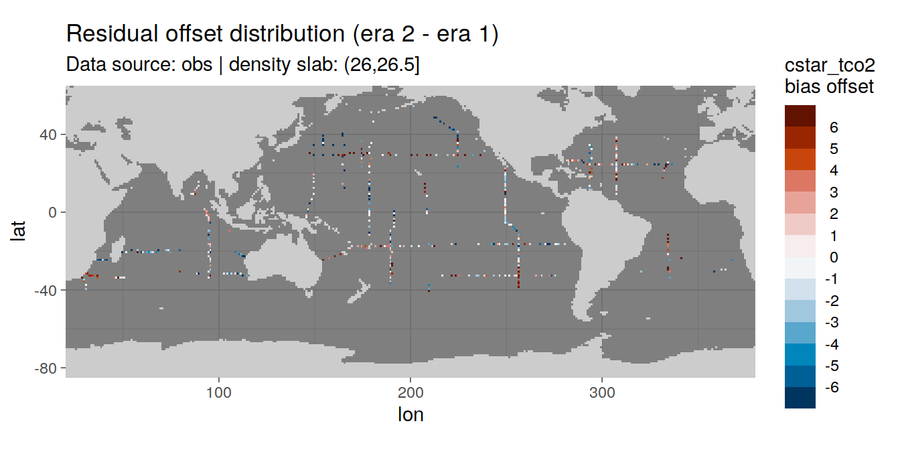

eMLR - model fitting
Jens Daniel Müller
22 July, 2021
Last updated: 2021-07-22
Checks: 7 0
Knit directory: emlr_obs_v_XXX/
This reproducible R Markdown analysis was created with workflowr (version 1.6.2). The Checks tab describes the reproducibility checks that were applied when the results were created. The Past versions tab lists the development history.
Great! Since the R Markdown file has been committed to the Git repository, you know the exact version of the code that produced these results.
Great job! The global environment was empty. Objects defined in the global environment can affect the analysis in your R Markdown file in unknown ways. For reproduciblity it’s best to always run the code in an empty environment.
The command set.seed(20200707) was run prior to running the code in the R Markdown file. Setting a seed ensures that any results that rely on randomness, e.g. subsampling or permutations, are reproducible.
Great job! Recording the operating system, R version, and package versions is critical for reproducibility.
Nice! There were no cached chunks for this analysis, so you can be confident that you successfully produced the results during this run.
Great job! Using relative paths to the files within your workflowr project makes it easier to run your code on other machines.
Great! You are using Git for version control. Tracking code development and connecting the code version to the results is critical for reproducibility.
The results in this page were generated with repository version 6a7f226. See the Past versions tab to see a history of the changes made to the R Markdown and HTML files.
Note that you need to be careful to ensure that all relevant files for the analysis have been committed to Git prior to generating the results (you can use wflow_publish or wflow_git_commit). workflowr only checks the R Markdown file, but you know if there are other scripts or data files that it depends on. Below is the status of the Git repository when the results were generated:
Ignored files:
Ignored: .Rhistory
Ignored: .Rproj.user/
Unstaged changes:
Modified: code/Workflowr_project_managment.R
Note that any generated files, e.g. HTML, png, CSS, etc., are not included in this status report because it is ok for generated content to have uncommitted changes.
These are the previous versions of the repository in which changes were made to the R Markdown (analysis/eMLR_model_fitting.Rmd) and HTML (docs/eMLR_model_fitting.html) files. If you’ve configured a remote Git repository (see ?wflow_git_remote), click on the hyperlinks in the table below to view the files as they were in that past version.
| File | Version | Author | Date | Message |
|---|---|---|---|---|
| html | 426b2df | jens-daniel-mueller | 2021-07-21 | Build site. |
| html | 971ce87 | jens-daniel-mueller | 2021-07-13 | Build site. |
| Rmd | 89d9fcb | jens-daniel-mueller | 2021-07-13 | complete revision |
| html | c18a8b1 | jens-daniel-mueller | 2021-07-09 | Build site. |
| Rmd | 795a3b0 | jens-daniel-mueller | 2021-07-09 | complete revision |
| html | 910d64a | jens-daniel-mueller | 2021-07-02 | Build site. |
| html | 1cbf907 | jens-daniel-mueller | 2021-07-02 | Build site. |
| html | 955f5dc | jens-daniel-mueller | 2021-06-29 | Build site. |
| html | 9480f94 | jens-daniel-mueller | 2021-06-29 | Build site. |
| Rmd | af271b5 | jens-daniel-mueller | 2021-06-29 | plot spatial residual ditribution |
| html | 147cb07 | jens-daniel-mueller | 2021-06-29 | Build site. |
| Rmd | 80ae560 | jens-daniel-mueller | 2021-06-29 | plot spatial residual ditribution |
| html | d054c39 | jens-daniel-mueller | 2021-06-24 | Build site. |
| html | 4fcd066 | jens-daniel-mueller | 2021-06-24 | Build site. |
| html | 3b6387f | jens-daniel-mueller | 2021-06-18 | Build site. |
| html | 3052a6c | jens-daniel-mueller | 2021-06-15 | Build site. |
| html | 3cb64bd | jens-daniel-mueller | 2021-06-15 | Build site. |
| html | c6b3da6 | jens-daniel-mueller | 2021-06-14 | Build site. |
| html | 48c73fc | jens-daniel-mueller | 2021-06-14 | Build site. |
| html | 439ee80 | jens-daniel-mueller | 2021-06-11 | Build site. |
| html | 33ffcab | jens-daniel-mueller | 2021-06-10 | Build site. |
| html | 7e1f407 | jens-daniel-mueller | 2021-06-10 | Build site. |
| html | 2cbe18c | jens-daniel-mueller | 2021-06-10 | added zonal mean section control plots |
| html | 69c79d0 | jens-daniel-mueller | 2021-06-08 | Build site. |
| html | 1772903 | jens-daniel-mueller | 2021-06-07 | Build site. |
| html | 594ed9a | jens-daniel-mueller | 2021-06-04 | Build site. |
| html | db7df0e | jens-daniel-mueller | 2021-06-04 | rebuild without overlapping eras |
| html | 2edc791 | jens-daniel-mueller | 2021-06-04 | Build site. |
| html | 207339d | jens-daniel-mueller | 2021-06-03 | Build site. |
| html | 315710b | jens-daniel-mueller | 2021-06-03 | include anomalous changes |
| html | be90356 | jens-daniel-mueller | 2021-06-02 | Build site. |
| html | d37a85d | jens-daniel-mueller | 2021-05-31 | Build site. |
| html | 4b7a5ee | jens-daniel-mueller | 2021-05-28 | Build site. |
| Rmd | a61014f | jens-daniel-mueller | 2021-05-28 | test run with cstar target variable |
| html | 12b455a | jens-daniel-mueller | 2021-05-27 | Build site. |
| Rmd | ee13efb | jens-daniel-mueller | 2021-05-27 | optional source of local params fully implemented |
| html | 8c736a6 | jens-daniel-mueller | 2021-05-27 | Build site. |
| Rmd | dc8e4e1 | jens-daniel-mueller | 2021-05-27 | optional source of local params implemented |
| html | 25bd183 | jens-daniel-mueller | 2021-05-26 | Build site. |
| Rmd | e2b3434 | jens-daniel-mueller | 2021-05-26 | generate seperate output |
| html | b79cb2d | jens-daniel-mueller | 2021-05-20 | Build site. |
| Rmd | 8adf952 | jens-daniel-mueller | 2021-05-20 | parallelisation tested, not succesful |
| html | 62bd574 | jens-daniel-mueller | 2021-05-20 | Build site. |
| html | 7c56c39 | jens-daniel-mueller | 2021-05-19 | Build site. |
| html | 0de759e | jens-daniel-mueller | 2021-05-13 | Build site. |
| html | 52e7583 | jens-daniel-mueller | 2021-05-12 | Build site. |
| html | 969e631 | jens-daniel-mueller | 2021-05-12 | Build site. |
| html | d2a83bc | jens-daniel-mueller | 2021-04-16 | Build site. |
| html | c0a47df | jens-daniel-mueller | 2021-04-16 | Build site. |
| html | 50290e8 | jens-daniel-mueller | 2021-04-16 | overlapping eras |
| html | a00ec94 | jens-daniel-mueller | 2021-04-16 | Build site. |
| html | b6fe355 | jens-daniel-mueller | 2021-04-16 | Build site. |
| html | 81b7c6d | jens-daniel-mueller | 2021-04-16 | Build site. |
| html | ddec5b7 | jens-daniel-mueller | 2021-04-15 | Build site. |
| html | 29edae5 | jens-daniel-mueller | 2021-04-14 | Build site. |
| html | 099d566 | jens-daniel-mueller | 2021-04-14 | Build site. |
| html | bb44686 | jens-daniel-mueller | 2021-04-14 | Build site. |
| html | bf40480 | jens-daniel-mueller | 2021-04-13 | Build site. |
| html | 9f31fe3 | jens-daniel-mueller | 2021-04-13 | Build site. |
| html | c98be84 | jens-daniel-mueller | 2021-04-13 | Build site. |
| html | 338dd3c | jens-daniel-mueller | 2021-04-09 | Build site. |
| html | a79ca2c | jens-daniel-mueller | 2021-04-09 | included model data |
| html | 7831fd3 | jens-daniel-mueller | 2021-04-09 | Build site. |
| html | 20b26d4 | jens-daniel-mueller | 2021-04-08 | Build site. |
| html | c0895f8 | jens-daniel-mueller | 2021-04-07 | Build site. |
| html | 156d5b7 | jens-daniel-mueller | 2021-04-07 | Build site. |
| html | eb827c9 | jens-daniel-mueller | 2021-04-07 | Build site. |
| html | d3c3fde | jens-daniel-mueller | 2021-03-26 | Build site. |
| Rmd | 88fa519 | jens-daniel-mueller | 2021-03-26 | included model data |
| html | 594d503 | jens-daniel-mueller | 2021-03-26 | Build site. |
| Rmd | e4ef0f6 | jens-daniel-mueller | 2021-03-26 | included model data |
| html | 06bfaf7 | jens-daniel-mueller | 2021-03-26 | Build site. |
| Rmd | 6d2102a | jens-daniel-mueller | 2021-03-26 | included model data |
| html | 2eb881a | jens-daniel-mueller | 2021-03-26 | Build site. |
| Rmd | a9e976a | jens-daniel-mueller | 2021-03-26 | included model data |
| html | 03b6009 | jens-daniel-mueller | 2021-03-23 | removed before copying template |
| html | de6256b | jens-daniel-mueller | 2021-03-23 | Build site. |
| html | f155edd | jens-daniel-mueller | 2021-03-23 | Build site. |
| html | 380d215 | jens-daniel-mueller | 2021-03-21 | Build site. |
| html | 33b385b | jens-daniel-mueller | 2021-03-20 | Build site. |
| Rmd | 6c5618b | jens-daniel-mueller | 2021-03-20 | rerun with vif threshold |
| html | 108d6b2 | jens-daniel-mueller | 2021-03-20 | Build site. |
| Rmd | 2b99ba0 | jens-daniel-mueller | 2021-03-20 | included vif removel option |
| html | 330dcd0 | jens-daniel-mueller | 2021-03-20 | Build site. |
| Rmd | 4df8990 | jens-daniel-mueller | 2021-03-20 | added vif calculation and plots |
| html | 83a13de | jens-daniel-mueller | 2021-03-20 | Build site. |
| html | cf98c6d | jens-daniel-mueller | 2021-03-16 | Build site. |
| html | a1d52ff | jens-daniel-mueller | 2021-03-15 | Build site. |
| html | 0bade3b | jens-daniel-mueller | 2021-03-15 | Build site. |
| html | 27c1f4b | jens-daniel-mueller | 2021-03-14 | Build site. |
| html | af75ebf | jens-daniel-mueller | 2021-03-14 | Build site. |
| html | 5017709 | jens-daniel-mueller | 2021-03-11 | Build site. |
| html | 585b07f | jens-daniel-mueller | 2021-03-11 | Build site. |
| html | 6482ed7 | jens-daniel-mueller | 2021-03-11 | Build site. |
| html | 85a5ed2 | jens-daniel-mueller | 2021-03-10 | Build site. |
| html | 00688a1 | jens-daniel-mueller | 2021-03-05 | Build site. |
| html | 6c0bec6 | jens-daniel-mueller | 2021-03-05 | Build site. |
| html | 3c2ec33 | jens-daniel-mueller | 2021-03-05 | Build site. |
| html | af70b94 | jens-daniel-mueller | 2021-03-04 | Build site. |
| Rmd | c9cf1fd | jens-daniel-mueller | 2021-03-04 | rebuild with NA in Cant replaced by 0 |
| html | 27ae473 | jens-daniel-mueller | 2021-02-24 | Build site. |
| Rmd | 7f77d91 | jens-daniel-mueller | 2021-02-24 | removed log10 color scale |
| html | fec3558 | jens-daniel-mueller | 2021-02-24 | Build site. |
| Rmd | 9ebedac | jens-daniel-mueller | 2021-02-24 | latitudinal residual plots |
| html | 4bc00ea | jens-daniel-mueller | 2021-02-24 | Build site. |
| Rmd | de11bfe | jens-daniel-mueller | 2021-02-24 | clean up purrr approach and residual plots |
| html | 42eca5d | jens-daniel-mueller | 2021-02-24 | Build site. |
| Rmd | 06a2f3b | jens-daniel-mueller | 2021-02-24 | purrr residual plots by basin |
| html | a1ba577 | jens-daniel-mueller | 2021-02-24 | Build site. |
| Rmd | 9ae7d87 | jens-daniel-mueller | 2021-02-24 | loop residual plots by basin |
| html | 071743d | jens-daniel-mueller | 2021-02-24 | Build site. |
| Rmd | c45672c | jens-daniel-mueller | 2021-02-24 | added residual plots |
| html | ac1a836 | jens-daniel-mueller | 2021-02-24 | Build site. |
| Rmd | 5f655e0 | jens-daniel-mueller | 2021-02-24 | added plots back to after switching to map aproach |
| html | b03fbd3 | jens-daniel-mueller | 2021-02-24 | Build site. |
| Rmd | c69736b | jens-daniel-mueller | 2021-02-24 | added plots back to after switching to map aproach |
| html | 86406d5 | jens-daniel-mueller | 2021-02-24 | Build site. |
| Rmd | 1b3c171 | jens-daniel-mueller | 2021-02-24 | introduced purrr::map to model fitting, rebuild all |
| html | 3d3b4cc | jens-daniel-mueller | 2021-02-23 | Build site. |
| Rmd | cbfc388 | jens-daniel-mueller | 2021-02-23 | introduced purrr::map to model fitting |
| html | 7b672f7 | jens-daniel-mueller | 2021-01-11 | Build site. |
| html | 33ba23c | jens-daniel-mueller | 2021-01-07 | Build site. |
| Rmd | 0ad30ba | jens-daniel-mueller | 2021-01-07 | removed GLODAP gamma filter, target variable mapped by eras+era |
| html | 318609d | jens-daniel-mueller | 2020-12-23 | adapted more variable predictor selection |
| html | 9d0b2d0 | jens-daniel-mueller | 2020-12-23 | Build site. |
| html | 0aa2b50 | jens-daniel-mueller | 2020-12-23 | remove html before duplication |
| html | 39113c3 | jens-daniel-mueller | 2020-12-23 | Build site. |
| Rmd | bef9220 | jens-daniel-mueller | 2020-12-23 | rebuild before sensitivity test |
| html | 2886da0 | jens-daniel-mueller | 2020-12-19 | Build site. |
| html | 02f0ee9 | jens-daniel-mueller | 2020-12-18 | cleaned up for copying template |
| html | 965dba3 | jens-daniel-mueller | 2020-12-18 | Build site. |
| html | 5d452fe | jens-daniel-mueller | 2020-12-18 | Build site. |
| Rmd | ca65bf5 | jens-daniel-mueller | 2020-12-18 | rebuild after final cleaning |
| html | 7bcb4eb | jens-daniel-mueller | 2020-12-18 | Build site. |
| html | d397028 | jens-daniel-mueller | 2020-12-18 | Build site. |
| Rmd | 7e1b1c0 | jens-daniel-mueller | 2020-12-18 | rebuild without na predictors |
| html | 7131186 | jens-daniel-mueller | 2020-12-17 | Build site. |
| Rmd | 737d904 | jens-daniel-mueller | 2020-12-17 | rebuild without na predictors |
| html | 22b07fb | jens-daniel-mueller | 2020-12-17 | Build site. |
| html | a84ff3c | jens-daniel-mueller | 2020-12-17 | Build site. |
| Rmd | 40369db | jens-daniel-mueller | 2020-12-17 | model selection criterion added |
| html | 5b48ef5 | jens-daniel-mueller | 2020-12-17 | Build site. |
| Rmd | e6ed2bc | jens-daniel-mueller | 2020-12-17 | plotted model results |
| html | f3a708f | jens-daniel-mueller | 2020-12-17 | Build site. |
| Rmd | 7c8ace9 | jens-daniel-mueller | 2020-12-17 | new MLR fitting routine, rmse corrected |
| html | e4ca289 | jens-daniel-mueller | 2020-12-16 | Build site. |
| Rmd | 3d5a3e2 | jens-daniel-mueller | 2020-12-16 | new MLR fitting routine |
| html | 158fe26 | jens-daniel-mueller | 2020-12-15 | Build site. |
| html | 7a9a4cb | jens-daniel-mueller | 2020-12-15 | Build site. |
| html | 61b263c | jens-daniel-mueller | 2020-12-15 | Build site. |
| html | 4d612dd | jens-daniel-mueller | 2020-12-15 | Build site. |
| html | e91cebd | jens-daniel-mueller | 2020-12-15 | Build site. |
| Rmd | d7992c4 | jens-daniel-mueller | 2020-12-15 | eMLR target variable selection |
| html | 953caf3 | jens-daniel-mueller | 2020-12-15 | Build site. |
| html | 42daf5c | jens-daniel-mueller | 2020-12-14 | Build site. |
| Rmd | 923aa7f | jens-daniel-mueller | 2020-12-14 | rebuild with new path and auto folder creation |
| html | 984697e | jens-daniel-mueller | 2020-12-12 | Build site. |
| html | 3ebff89 | jens-daniel-mueller | 2020-12-12 | Build site. |
| html | ba112d3 | jens-daniel-mueller | 2020-12-11 | Build site. |
| Rmd | 91b2b29 | jens-daniel-mueller | 2020-12-11 | selectable basinmask, try 5 |
| html | b01a367 | jens-daniel-mueller | 2020-12-09 | Build site. |
| Rmd | 71c63b0 | jens-daniel-mueller | 2020-12-09 | rerun with variable predictor assignment |
| html | 24a632f | jens-daniel-mueller | 2020-12-07 | Build site. |
| html | 92dca91 | jens-daniel-mueller | 2020-12-07 | Build site. |
| html | 6a8004b | jens-daniel-mueller | 2020-12-07 | Build site. |
| html | 70bf1a5 | jens-daniel-mueller | 2020-12-07 | Build site. |
| html | 7555355 | jens-daniel-mueller | 2020-12-07 | Build site. |
| html | 143d6fa | jens-daniel-mueller | 2020-12-07 | Build site. |
| html | abc6818 | jens-daniel-mueller | 2020-12-03 | Build site. |
| Rmd | 992ba15 | jens-daniel-mueller | 2020-12-03 | rebuild with variable inventory depth |
| html | c8c2e7b | jens-daniel-mueller | 2020-12-03 | Build site. |
| Rmd | 83203db | jens-daniel-mueller | 2020-12-03 | calculate cant with variable inventory depth |
| html | 090e4d5 | jens-daniel-mueller | 2020-12-02 | Build site. |
| html | 7c25f7a | jens-daniel-mueller | 2020-12-02 | Build site. |
| html | ec8dc38 | jens-daniel-mueller | 2020-12-02 | Build site. |
| html | c987de1 | jens-daniel-mueller | 2020-12-02 | Build site. |
| html | f8358f8 | jens-daniel-mueller | 2020-12-02 | Build site. |
| html | b03ddb8 | jens-daniel-mueller | 2020-12-02 | Build site. |
| Rmd | 9183e8f | jens-daniel-mueller | 2020-12-02 | revised assignment of era to eras |
| html | 22d0127 | jens-daniel-mueller | 2020-12-01 | Build site. |
| html | 0ff728b | jens-daniel-mueller | 2020-12-01 | Build site. |
| html | 91435ae | jens-daniel-mueller | 2020-12-01 | Build site. |
| Rmd | 17d09be | jens-daniel-mueller | 2020-12-01 | auto eras naming |
| html | cf19652 | jens-daniel-mueller | 2020-11-30 | Build site. |
| Rmd | 0895ad6 | jens-daniel-mueller | 2020-11-30 | rebuild with all plot output |
| Rmd | 2842970 | jens-daniel-mueller | 2020-11-30 | cleaned for eMLR part only |
| html | 196be51 | jens-daniel-mueller | 2020-11-30 | Build site. |
| Rmd | 7a4b015 | jens-daniel-mueller | 2020-11-30 | first rebuild on ETH server |
| Rmd | bc61ce3 | Jens Müller | 2020-11-30 | Initial commit |
1 Version ID
The results displayed on this site correspond to the Version_ID: v_XXX
2 Required data
Required are:
- cleaned and prepared GLODAPv2_2020 file
GLODAP <-
read_csv(paste(path_version_data,
"GLODAPv2.2020_MLR_fitting_ready.csv",
sep = ""))3 Predictor combinations
Find all possible combinations of following considered predictor variables:
- sal, temp, aou, nitrate, silicate, phosphate, phosphate_star
# the following code is a workaround to find all predictor combinations
# using the olsrr package and fit all models for one era, slab, and basin
i_basin <- unique(GLODAP$basin)[1]
i_era <- unique(GLODAP$era)[1]
# subset one basin and era for fitting
GLODAP_basin_era <- GLODAP %>%
filter(basin == i_basin, era == i_era,
data_source == "obs")
i_gamma_slab <- unique(GLODAP_basin_era$gamma_slab)[3]
print(i_gamma_slab)
# subset one gamma slab
GLODAP_basin_era_slab <- GLODAP_basin_era %>%
filter(gamma_slab == i_gamma_slab)
# fit the full linear model, i.e. all predictor combinations
lm_full <- lm(paste(
params_local$MLR_target,
paste(params_local$MLR_predictors, collapse = " + "),
sep = " ~ "
),
data = GLODAP_basin_era_slab)
# fit linear models for all possible predictor combinations
# unfortunately, this functions does not provide model coefficients (yet)
lm_all <- ols_step_all_possible(lm_full)
# convert to tibble
lm_all <- as_tibble(lm_all)
# format model formula
lm_all <- lm_all %>%
select(n, predictors) %>%
mutate(model = str_replace_all(predictors, " ", " + "),
model = paste(params_local$MLR_target, "~", model))
# remove helper objects
rm(i_gamma_slab,
i_era,
i_basin,
GLODAP_basin_era,
GLODAP_basin_era_slab,
lm_full)4 Apply predictor threshold
Select combinations with a total number of predictors in the range:
- Minimum: 2
- Maximum: 5
lm_all <- lm_all %>%
filter(n >= params_local$MLR_predictors_min,
n <= params_local$MLR_predictors_max)This results in a total number of MLR models of:
- 112
5 Fit all models
Individual linear regression models were fitted for the chosen target variable:
- cstar_tref
as a function of each predictor combination. Fitting was performed separately within each basin, era, and slab. Model diagnostics, such as the root mean squared error (RMSE), were calculated for each fitted model.
# prepare nested data frame
GLODAP %>%
filter_all(any_vars(is.na(.)))
GLODAP_nested <- GLODAP %>%
# filter(gamma_slab %in% unique(GLODAP$gamma_slab)[c(5,6)]) %>%
nest(data = !c(gamma_slab, era, basin, data_source))
# expand with model definitions
GLODAP_nested_lm <- expand_grid(
GLODAP_nested,
lm_all#[1:3,]
)
# fit models and extract tidy model output
GLODAP_nested_lm_fit <- GLODAP_nested_lm %>%
mutate(
fit = map2(.x = data, .y = model,
~ lm(as.formula(.y), data = .x)),
tidied = map(fit, tidy),
glanced = map(fit, glance),
augmented = map(fit, augment),
vif = map(fit, ols_vif_tol)
)6 Tidy models
# extract glanced model output (model diagnostics, such as AIC)
GLODAP_glanced <- GLODAP_nested_lm_fit %>%
select(-c(data, fit, tidied, augmented, vif)) %>%
unnest(glanced) %>%
rename(n_predictors = n)
# extract tidy model output (model coefficients)
GLODAP_tidy <- GLODAP_nested_lm_fit %>%
select(-c(data, fit, glanced, augmented, vif)) %>%
unnest(tidied)
# extract augmented model output (fitted values and residuals)
GLODAP_augmented <- GLODAP_nested_lm_fit %>%
select(-c(data, fit, tidied, glanced, vif)) %>%
unnest(augmented)
# print(object.size(GLODAP_augmented), units = "MB")
# extract VIC from output
GLODAP_glanced_vif <- GLODAP_nested_lm_fit %>%
select(-c(data, fit, tidied, augmented, glanced)) %>%
unnest(vif)
# calculte max vif per model
GLODAP_glanced_vif_max <- GLODAP_glanced_vif %>%
group_by(data_source, era, basin, gamma_slab, model, n) %>%
summarise(vif_max = max(VIF)) %>%
ungroup()
# calculate RMSE from augmented output
GLODAP_glanced_rmse <- GLODAP_augmented %>%
group_by(data_source, era, basin, gamma_slab, model) %>%
summarise(rmse = sqrt(c(crossprod(.resid)) / length(.resid))) %>%
ungroup()
# add RMSE and vif_max to glanced output
GLODAP_glanced <- full_join(GLODAP_glanced, GLODAP_glanced_rmse)
GLODAP_glanced <- full_join(GLODAP_glanced, GLODAP_glanced_vif_max)
rm(GLODAP_glanced_rmse)
rm(GLODAP_glanced_vif_max)
# extract input data
GLODAP_data <- GLODAP_nested_lm_fit %>%
select(-c(fit, tidied, glanced, augmented, vif)) %>%
unnest(data)
# append input data with augmented data
GLODAP_augmented <- bind_cols(
GLODAP_data,
GLODAP_augmented %>% select(.fitted, .resid)
)
rm(GLODAP, GLODAP_nested, GLODAP_nested_lm, GLODAP_nested_lm_fit, lm_all,
GLODAP_data)7 Prepare coeffcients
Coefficients are prepared for the mapping of Cant and the chosen target variable.
7.1 VIF threshold
To avoid multicollinearity among predictors, models were excluded with a VIF above:
- 500
After removing models affected by multicollinearity, the targeted number of MLRs (10) was undercut in following fitting units:
GLODAP_glanced_clean <- GLODAP_glanced %>%
filter(vif_max <= params_local$vif_max)
GLODAP_glanced_clean %>%
group_by(data_source, era, basin, gamma_slab) %>%
count() %>%
filter(n < params_local$MLR_number)# A tibble: 0 x 5
# Groups: data_source, era, basin, gamma_slab [0]
# … with 5 variables: data_source <chr>, era <chr>, basin <chr>,
# gamma_slab <chr>, n <int>7.2 Predictor selection
Within each basin and slab, the following number of best linear regression models was selected:
- 10
The criterion used to select the best models was:
- rmse
The criterion was summed up for two adjacent eras, and the models with lowest summed values were selected.
# calculate RMSE sum for adjacent eras
lm_all <- GLODAP_glanced_clean %>%
select(data_source, basin, gamma_slab, model, era, AIC, BIC, rmse) %>%
arrange(era) %>%
group_by(data_source, basin, gamma_slab, model) %>%
mutate(rmse_sum = rmse + lag(rmse),
aic_sum = AIC + lag(AIC),
bic_sum = BIC + lag(BIC)
) %>%
ungroup() %>%
select(-c(era)) %>%
drop_na()
# subset models with lowest summed criterion
# chose which criterion is applied
if (params_local$MLR_criterion == "aic") {
lm_best <- lm_all %>%
group_by(data_source, basin, gamma_slab) %>%
slice_min(order_by = aic_sum,
with_ties = FALSE,
n = params_local$MLR_number) %>%
ungroup() %>%
arrange(basin, gamma_slab, model)
}
if (params_local$MLR_criterion == "bic") {
lm_best <- lm_all %>%
group_by(data_source, basin, gamma_slab) %>%
slice_min(order_by = bic_sum,
with_ties = FALSE,
n = params_local$MLR_number) %>%
ungroup() %>%
arrange(basin, gamma_slab, model)
}
if (params_local$MLR_criterion == "rmse") {
lm_best <- lm_all %>%
group_by(data_source, basin, gamma_slab) %>%
slice_min(order_by = rmse_sum,
with_ties = FALSE,
n = params_local$MLR_number) %>%
ungroup() %>%
arrange(basin, gamma_slab, model)
}
# print table
lm_best %>%
kable() %>%
add_header_above() %>%
kable_styling() %>%
scroll_box(width = "100%", height = "400px")| data_source | basin | gamma_slab | model | AIC | BIC | rmse | rmse_sum | aic_sum | bic_sum |
|---|---|---|---|---|---|---|---|---|---|
| obs | Atlantic | (-Inf,26] | cstar_tref ~ sal + aou + nitrate + phosphate + phosphate_star | 3112.7622 | 3141.5579 | 7.4550804 | 14.9798514 | 5663.3707 | 5719.5420 |
| obs | Atlantic | (-Inf,26] | cstar_tref ~ sal + aou + silicate + phosphate + phosphate_star | 3188.5067 | 3217.3024 | 8.1066433 | 16.0902201 | 5782.7946 | 5838.9659 |
| obs | Atlantic | (-Inf,26] | cstar_tref ~ sal + temp + aou + nitrate | 3103.5374 | 3128.2195 | 7.3957365 | 14.8905039 | 5649.1974 | 5697.3442 |
| mod | Atlantic | (-Inf,26] | cstar_tref ~ sal + temp + aou + nitrate + phosphate | 1280.6067 | 1305.3680 | 2.9281819 | 10.2332178 | 3632.1534 | 3683.7789 |
| obs | Atlantic | (-Inf,26] | cstar_tref ~ sal + temp + aou + nitrate + phosphate | 3104.8691 | 3133.6648 | 7.3902710 | 14.8680084 | 5650.8502 | 5707.0216 |
| mod | Atlantic | (-Inf,26] | cstar_tref ~ sal + temp + aou + nitrate + phosphate_star | 1284.6265 | 1309.3878 | 2.9514445 | 10.2633459 | 3636.8176 | 3688.4431 |
| obs | Atlantic | (-Inf,26] | cstar_tref ~ sal + temp + aou + nitrate + phosphate_star | 3104.7807 | 3133.5764 | 7.3895485 | 14.8663160 | 5650.6661 | 5706.8375 |
| mod | Atlantic | (-Inf,26] | cstar_tref ~ sal + temp + aou + nitrate + silicate | 1298.9793 | 1323.7407 | 3.0360227 | 10.1129194 | 3628.7603 | 3680.3858 |
| obs | Atlantic | (-Inf,26] | cstar_tref ~ sal + temp + aou + nitrate + silicate | 3098.4975 | 3127.2933 | 7.3383660 | 14.8254401 | 5645.3995 | 5701.5709 |
| mod | Atlantic | (-Inf,26] | cstar_tref ~ sal + temp + aou + silicate | 1311.4094 | 1332.6334 | 3.1234993 | 10.2125343 | 3640.3660 | 3684.6164 |
| mod | Atlantic | (-Inf,26] | cstar_tref ~ sal + temp + aou + silicate + phosphate | 1278.8621 | 1303.6235 | 2.9181434 | 9.9867024 | 3607.8344 | 3659.4599 |
| obs | Atlantic | (-Inf,26] | cstar_tref ~ sal + temp + aou + silicate + phosphate | 3178.4630 | 3207.2588 | 8.0170751 | 15.9437506 | 5767.4721 | 5823.6435 |
| mod | Atlantic | (-Inf,26] | cstar_tref ~ sal + temp + aou + silicate + phosphate_star | 1283.1915 | 1307.9529 | 2.9431192 | 9.9951455 | 3610.5574 | 3662.1829 |
| obs | Atlantic | (-Inf,26] | cstar_tref ~ sal + temp + aou + silicate + phosphate_star | 3177.6435 | 3206.4392 | 8.0098101 | 15.9311947 | 5766.1598 | 5822.3312 |
| obs | Atlantic | (-Inf,26] | cstar_tref ~ sal + temp + nitrate + phosphate + phosphate_star | 3102.9004 | 3131.6962 | 7.3741945 | 14.8396745 | 5647.6708 | 5703.8422 |
| mod | Atlantic | (-Inf,26] | cstar_tref ~ sal + temp + nitrate + silicate | 1304.1618 | 1325.3858 | 3.0792529 | 10.1874275 | 3634.9680 | 3679.2184 |
| mod | Atlantic | (-Inf,26] | cstar_tref ~ sal + temp + nitrate + silicate + phosphate | 1256.7458 | 1281.5071 | 2.7938245 | 9.8337931 | 3582.9378 | 3634.5632 |
| mod | Atlantic | (-Inf,26] | cstar_tref ~ sal + temp + nitrate + silicate + phosphate_star | 1272.1051 | 1296.8664 | 2.8795851 | 9.9579110 | 3602.0246 | 3653.6500 |
| mod | Atlantic | (-Inf,26] | cstar_tref ~ sal + temp + silicate + phosphate + phosphate_star | 1285.1208 | 1309.8822 | 2.9543180 | 10.0108991 | 3612.9297 | 3664.5551 |
| obs | Atlantic | (-Inf,26] | cstar_tref ~ sal + temp + silicate + phosphate + phosphate_star | 3176.5164 | 3205.3121 | 7.9998299 | 15.9164710 | 5764.5907 | 5820.7620 |
| obs | Atlantic | (26,26.5] | cstar_tref ~ aou + nitrate + phosphate + phosphate_star | 6915.3624 | 6945.0270 | 6.7503019 | 13.6419672 | 12875.6327 | 12934.0311 |
| mod | Atlantic | (26,26.5] | cstar_tref ~ aou + nitrate + silicate + phosphate + phosphate_star | 4196.0251 | 4227.7616 | 5.0547271 | 10.1787045 | 8789.3293 | 8853.4064 |
| obs | Atlantic | (26,26.5] | cstar_tref ~ aou + nitrate + silicate + phosphate + phosphate_star | 6871.7907 | 6906.3993 | 6.6035962 | 13.4872699 | 12832.0004 | 12900.1318 |
| obs | Atlantic | (26,26.5] | cstar_tref ~ aou + phosphate + phosphate_star | 6913.3633 | 6938.0837 | 6.7503047 | 13.6900437 | 12883.9793 | 12932.6446 |
| obs | Atlantic | (26,26.5] | cstar_tref ~ aou + silicate + phosphate + phosphate_star | 6870.0926 | 6899.7572 | 6.6045575 | 13.5252145 | 12837.8185 | 12896.2168 |
| mod | Atlantic | (26,26.5] | cstar_tref ~ sal + temp + aou + nitrate + phosphate | 4114.2553 | 4145.9918 | 4.7630972 | 9.6106225 | 8624.3655 | 8688.4426 |
| obs | Atlantic | (26,26.5] | cstar_tref ~ sal + temp + aou + nitrate + phosphate | 6801.7200 | 6836.3286 | 6.3842183 | 13.4346166 | 12804.4322 | 12872.5636 |
| mod | Atlantic | (26,26.5] | cstar_tref ~ sal + temp + aou + nitrate + phosphate_star | 4124.2726 | 4156.0091 | 4.7978994 | 9.6701753 | 8642.0222 | 8706.0992 |
| obs | Atlantic | (26,26.5] | cstar_tref ~ sal + temp + aou + nitrate + phosphate_star | 6808.8342 | 6843.4428 | 6.4061551 | 13.5967132 | 12846.5064 | 12914.6379 |
| obs | Atlantic | (26,26.5] | cstar_tref ~ sal + temp + aou + phosphate | 6842.9262 | 6872.5907 | 6.5186114 | 13.6048076 | 12852.6331 | 12911.0315 |
| obs | Atlantic | (26,26.5] | cstar_tref ~ sal + temp + aou + silicate + phosphate | 6817.1381 | 6851.7467 | 6.4318555 | 13.5163465 | 12828.4176 | 12896.5490 |
| obs | Atlantic | (26,26.5] | cstar_tref ~ sal + temp + aou + silicate + phosphate_star | 6828.7617 | 6863.3703 | 6.4680037 | 13.7136699 | 12879.9932 | 12948.1246 |
| mod | Atlantic | (26,26.5] | cstar_tref ~ sal + temp + nitrate + phosphate + phosphate_star | 4136.4670 | 4168.2035 | 4.8406081 | 9.7458094 | 8664.3189 | 8728.3960 |
| mod | Atlantic | (26,26.5] | cstar_tref ~ temp + aou + nitrate + phosphate | 4183.6140 | 4210.8167 | 5.0166264 | 10.0617140 | 8751.6443 | 8806.5675 |
| mod | Atlantic | (26,26.5] | cstar_tref ~ temp + aou + nitrate + phosphate_star | 4183.8507 | 4211.0534 | 5.0174894 | 10.0507207 | 8748.3517 | 8803.2749 |
| mod | Atlantic | (26,26.5] | cstar_tref ~ temp + aou + nitrate + silicate + phosphate | 4185.5524 | 4217.2890 | 5.0164020 | 10.0608478 | 8755.3919 | 8819.4689 |
| obs | Atlantic | (26,26.5] | cstar_tref ~ temp + aou + nitrate + silicate + phosphate | 6884.7986 | 6919.4072 | 6.6451434 | 13.7030838 | 12889.4097 | 12957.5411 |
| mod | Atlantic | (26,26.5] | cstar_tref ~ temp + aou + nitrate + silicate + phosphate_star | 4185.8455 | 4217.5820 | 5.0174706 | 10.0504475 | 8752.2708 | 8816.3478 |
| mod | Atlantic | (26,26.5] | cstar_tref ~ temp + nitrate + phosphate + phosphate_star | 4186.5422 | 4213.7450 | 5.0273136 | 10.0613281 | 8751.2767 | 8806.1999 |
| mod | Atlantic | (26,26.5] | cstar_tref ~ temp + nitrate + silicate + phosphate + phosphate_star | 4188.4972 | 4220.2337 | 5.0271489 | 10.0611426 | 8755.2254 | 8819.3025 |
| mod | Atlantic | (26.5,26.75] | cstar_tref ~ sal + temp + aou + nitrate + phosphate | 4683.4675 | 4716.4327 | 4.1715922 | 7.8784303 | 8938.5166 | 9004.0698 |
| mod | Atlantic | (26.5,26.75] | cstar_tref ~ sal + temp + aou + nitrate + phosphate_star | 4691.5473 | 4724.5124 | 4.1921949 | 7.8294390 | 8917.1434 | 8982.6966 |
| obs | Atlantic | (26.5,26.75] | cstar_tref ~ sal + temp + aou + nitrate + phosphate_star | 7725.0966 | 7760.5976 | 6.3854546 | 12.4594246 | 14288.1330 | 14358.0994 |
| obs | Atlantic | (26.5,26.75] | cstar_tref ~ sal + temp + aou + silicate + phosphate | 7712.9534 | 7748.4544 | 6.3526276 | 12.4746030 | 14291.9865 | 14361.9529 |
| mod | Atlantic | (26.5,26.75] | cstar_tref ~ sal + temp + aou + silicate + phosphate_star | 4742.5888 | 4775.5539 | 4.3247196 | 7.9001022 | 8941.5275 | 9007.0807 |
| obs | Atlantic | (26.5,26.75] | cstar_tref ~ sal + temp + aou + silicate + phosphate_star | 7712.5563 | 7748.0573 | 6.3515569 | 12.4361424 | 14279.1409 | 14349.1073 |
| mod | Atlantic | (26.5,26.75] | cstar_tref ~ sal + temp + nitrate + phosphate + phosphate_star | 4703.6066 | 4736.5718 | 4.2231348 | 7.8023374 | 8904.2047 | 8969.7579 |
| obs | Atlantic | (26.5,26.75] | cstar_tref ~ sal + temp + nitrate + phosphate + phosphate_star | 7724.2953 | 7759.7964 | 6.3832833 | 12.4573041 | 14287.3487 | 14357.3151 |
| obs | Atlantic | (26.5,26.75] | cstar_tref ~ sal + temp + silicate + phosphate + phosphate_star | 7714.2376 | 7749.7386 | 6.3560912 | 12.4409427 | 14280.9110 | 14350.8775 |
| mod | Atlantic | (26.5,26.75] | cstar_tref ~ temp + aou + nitrate + phosphate | 4681.8569 | 4710.1128 | 4.1725828 | 7.8973664 | 8942.4110 | 8998.5995 |
| mod | Atlantic | (26.5,26.75] | cstar_tref ~ temp + aou + nitrate + phosphate_star | 4689.9867 | 4718.2425 | 4.1933184 | 7.8420233 | 8918.4718 | 8974.6602 |
| mod | Atlantic | (26.5,26.75] | cstar_tref ~ temp + aou + nitrate + silicate + phosphate | 4661.9457 | 4694.9108 | 4.1172057 | 7.6919492 | 8860.6066 | 8926.1598 |
| obs | Atlantic | (26.5,26.75] | cstar_tref ~ temp + aou + nitrate + silicate + phosphate | 7697.7811 | 7733.2821 | 6.3118489 | 12.4137812 | 14270.1505 | 14340.1170 |
| mod | Atlantic | (26.5,26.75] | cstar_tref ~ temp + aou + nitrate + silicate + phosphate_star | 4670.7384 | 4703.7035 | 4.1393390 | 7.6433437 | 8838.3396 | 8903.8928 |
| obs | Atlantic | (26.5,26.75] | cstar_tref ~ temp + aou + nitrate + silicate + phosphate_star | 7703.1974 | 7738.6984 | 6.3263763 | 12.4164076 | 14271.5999 | 14341.5663 |
| obs | Atlantic | (26.5,26.75] | cstar_tref ~ temp + aou + silicate + phosphate | 7713.7918 | 7744.2212 | 6.3602855 | 12.4882739 | 14292.8197 | 14352.7909 |
| obs | Atlantic | (26.5,26.75] | cstar_tref ~ temp + aou + silicate + phosphate_star | 7721.2094 | 7751.6389 | 6.3803418 | 12.4948451 | 14295.7609 | 14355.7321 |
| mod | Atlantic | (26.5,26.75] | cstar_tref ~ temp + nitrate + phosphate + phosphate_star | 4702.1672 | 4730.4231 | 4.2245787 | 7.8080698 | 8902.6262 | 8958.8146 |
| mod | Atlantic | (26.5,26.75] | cstar_tref ~ temp + nitrate + silicate + phosphate + phosphate_star | 4679.8928 | 4712.8579 | 4.1625090 | 7.6354743 | 8833.6669 | 8899.2201 |
| obs | Atlantic | (26.5,26.75] | cstar_tref ~ temp + nitrate + silicate + phosphate + phosphate_star | 7712.1500 | 7747.6510 | 6.3504616 | 12.4392213 | 14280.1281 | 14350.0945 |
| mod | Atlantic | (26.75,27] | cstar_tref ~ aou + nitrate + silicate + phosphate + phosphate_star | 5805.3169 | 5841.2332 | 2.4536782 | 5.1775717 | 11164.8867 | 11235.8498 |
| mod | Atlantic | (26.75,27] | cstar_tref ~ sal + aou + nitrate + silicate + phosphate | 5948.7259 | 5984.6422 | 2.5985454 | 5.2478218 | 11246.9669 | 11317.9300 |
| mod | Atlantic | (26.75,27] | cstar_tref ~ sal + aou + silicate + phosphate | 6088.4398 | 6119.2252 | 2.7501003 | 5.4365698 | 11415.4633 | 11476.2888 |
| obs | Atlantic | (26.75,27] | cstar_tref ~ sal + temp + aou + nitrate + phosphate_star | 7935.4486 | 7971.6124 | 5.1527771 | 11.5192484 | 15064.9335 | 15136.0420 |
| mod | Atlantic | (26.75,27] | cstar_tref ~ sal + temp + aou + silicate + phosphate | 6038.0652 | 6073.9815 | 2.6930855 | 5.1289262 | 11150.8461 | 11221.8093 |
| mod | Atlantic | (26.75,27] | cstar_tref ~ sal + temp + aou + silicate + phosphate_star | 6057.2053 | 6093.1216 | 2.7137830 | 5.2199919 | 11232.8684 | 11303.8316 |
| obs | Atlantic | (26.75,27] | cstar_tref ~ sal + temp + aou + silicate + phosphate_star | 7871.2720 | 7907.4358 | 5.0266673 | 11.4713190 | 15027.3155 | 15098.4240 |
| obs | Atlantic | (26.75,27] | cstar_tref ~ sal + temp + nitrate + phosphate + phosphate_star | 7933.7653 | 7969.9292 | 5.1494294 | 11.5355727 | 15069.9636 | 15141.0721 |
| obs | Atlantic | (26.75,27] | cstar_tref ~ sal + temp + nitrate + silicate + phosphate_star | 7872.2979 | 7908.4618 | 5.0286590 | 11.4652836 | 15025.6295 | 15096.7380 |
| mod | Atlantic | (26.75,27] | cstar_tref ~ sal + temp + silicate + phosphate + phosphate_star | 6066.6026 | 6102.5189 | 2.7240031 | 5.2713720 | 11278.2337 | 11349.1968 |
| obs | Atlantic | (26.75,27] | cstar_tref ~ sal + temp + silicate + phosphate + phosphate_star | 7871.2465 | 7907.4104 | 5.0266180 | 11.4709916 | 15027.1962 | 15098.3047 |
| obs | Atlantic | (26.75,27] | cstar_tref ~ sal + temp + silicate + phosphate_star | 7874.6045 | 7905.6021 | 5.0370273 | 11.4816980 | 15028.6544 | 15089.6046 |
| obs | Atlantic | (26.75,27] | cstar_tref ~ temp + aou + nitrate + phosphate_star | 7935.3641 | 7966.3617 | 5.1565896 | 11.5331577 | 15066.2974 | 15127.2475 |
| mod | Atlantic | (26.75,27] | cstar_tref ~ temp + aou + nitrate + silicate + phosphate | 5767.5937 | 5803.5100 | 2.4169319 | 4.7759087 | 10809.5773 | 10880.5405 |
| mod | Atlantic | (26.75,27] | cstar_tref ~ temp + aou + nitrate + silicate + phosphate_star | 5775.7197 | 5811.6360 | 2.4248007 | 4.7665858 | 10801.5530 | 10872.5161 |
| obs | Atlantic | (26.75,27] | cstar_tref ~ temp + aou + nitrate + silicate + phosphate_star | 7878.4445 | 7914.6083 | 5.0406070 | 11.4121833 | 15009.6735 | 15080.7821 |
| mod | Atlantic | (26.75,27] | cstar_tref ~ temp + aou + silicate + phosphate | 6220.1843 | 6250.9696 | 2.8989111 | 5.4843224 | 11462.5457 | 11523.3713 |
| mod | Atlantic | (26.75,27] | cstar_tref ~ temp + nitrate + silicate + phosphate + phosphate_star | 5803.8115 | 5839.7278 | 2.4522012 | 4.8435535 | 10875.8926 | 10946.8557 |
| obs | Atlantic | (26.75,27] | cstar_tref ~ temp + nitrate + silicate + phosphate + phosphate_star | 7878.3619 | 7914.5258 | 5.0404463 | 11.4263664 | 15014.4841 | 15085.5927 |
| obs | Atlantic | (26.75,27] | cstar_tref ~ temp + nitrate + silicate + phosphate_star | 7876.4719 | 7907.4695 | 5.0406605 | 11.5241653 | 15043.5946 | 15104.5448 |
| mod | Atlantic | (27,27.25] | cstar_tref ~ aou + nitrate + silicate + phosphate + phosphate_star | 6744.9621 | 6781.7017 | 2.6504197 | 5.5964965 | 12912.5168 | 12985.0654 |
| obs | Atlantic | (27,27.25] | cstar_tref ~ aou + nitrate + silicate + phosphate + phosphate_star | 11210.2814 | 11248.4928 | 6.0961385 | 12.1337719 | 20353.9874 | 20429.0027 |
| mod | Atlantic | (27,27.25] | cstar_tref ~ sal + aou + nitrate + silicate + phosphate | 6303.3527 | 6340.0923 | 2.2652234 | 5.0332003 | 12317.3827 | 12389.9313 |
| mod | Atlantic | (27,27.25] | cstar_tref ~ sal + aou + nitrate + silicate + phosphate_star | 6634.7625 | 6671.5020 | 2.5485611 | 5.5938362 | 12883.8508 | 12956.3994 |
| mod | Atlantic | (27,27.25] | cstar_tref ~ sal + aou + silicate + phosphate + phosphate_star | 6562.6700 | 6599.4095 | 2.4840530 | 5.5781079 | 12850.8826 | 12923.4312 |
| obs | Atlantic | (27,27.25] | cstar_tref ~ sal + temp + aou + nitrate + phosphate | 11192.4861 | 11230.6974 | 6.0649554 | 12.0162765 | 20295.3279 | 20370.3432 |
| obs | Atlantic | (27,27.25] | cstar_tref ~ sal + temp + aou + nitrate + phosphate_star | 11169.1432 | 11207.3546 | 6.0242931 | 11.9361122 | 20253.0850 | 20328.1003 |
| mod | Atlantic | (27,27.25] | cstar_tref ~ sal + temp + aou + nitrate + silicate | 6263.8751 | 6300.6146 | 2.2336441 | 4.7808965 | 12073.3093 | 12145.8580 |
| mod | Atlantic | (27,27.25] | cstar_tref ~ sal + temp + aou + silicate + phosphate | 6571.3084 | 6608.0479 | 2.4916956 | 5.5720972 | 12848.6327 | 12921.1813 |
| obs | Atlantic | (27,27.25] | cstar_tref ~ sal + temp + nitrate + phosphate + phosphate_star | 11173.5885 | 11211.7999 | 6.0320156 | 11.9475548 | 20259.3156 | 20334.3309 |
| obs | Atlantic | (27,27.25] | cstar_tref ~ temp + aou + nitrate + phosphate | 11191.2440 | 11223.9966 | 6.0662803 | 12.0786596 | 20321.0543 | 20385.3531 |
| obs | Atlantic | (27,27.25] | cstar_tref ~ temp + aou + nitrate + phosphate_star | 11167.3212 | 11200.0737 | 6.0246021 | 12.0233038 | 20290.6679 | 20354.9668 |
| mod | Atlantic | (27,27.25] | cstar_tref ~ temp + aou + nitrate + silicate | 6324.9832 | 6356.4742 | 2.2843393 | 4.8380801 | 12138.6808 | 12200.8653 |
| mod | Atlantic | (27,27.25] | cstar_tref ~ temp + aou + nitrate + silicate + phosphate | 6319.2743 | 6356.0138 | 2.2780855 | 4.8182447 | 12121.8433 | 12194.3919 |
| obs | Atlantic | (27,27.25] | cstar_tref ~ temp + aou + nitrate + silicate + phosphate | 11173.0062 | 11211.2176 | 6.0310034 | 12.0041137 | 20286.2197 | 20361.2350 |
| mod | Atlantic | (27,27.25] | cstar_tref ~ temp + aou + nitrate + silicate + phosphate_star | 6308.3059 | 6345.0455 | 2.2692170 | 4.7970268 | 12098.8763 | 12171.4249 |
| obs | Atlantic | (27,27.25] | cstar_tref ~ temp + aou + nitrate + silicate + phosphate_star | 11148.8383 | 11187.0496 | 5.9891445 | 11.9377885 | 20250.4033 | 20325.4186 |
| obs | Atlantic | (27,27.25] | cstar_tref ~ temp + nitrate + phosphate + phosphate_star | 11171.6113 | 11204.3639 | 6.0320551 | 12.0230171 | 20291.2940 | 20355.5928 |
| mod | Atlantic | (27,27.25] | cstar_tref ~ temp + nitrate + silicate + phosphate + phosphate_star | 6259.8458 | 6296.5854 | 2.2304459 | 4.7961660 | 12087.0653 | 12159.6139 |
| obs | Atlantic | (27,27.25] | cstar_tref ~ temp + nitrate + silicate + phosphate + phosphate_star | 11152.9504 | 11191.1618 | 5.9962462 | 11.9412290 | 20252.7682 | 20327.7835 |
| obs | Atlantic | (27.25,27.5] | cstar_tref ~ aou + nitrate + silicate + phosphate + phosphate_star | 12886.8448 | 12926.0895 | 5.9397635 | 11.3228176 | 23175.3127 | 23252.4425 |
| mod | Atlantic | (27.25,27.5] | cstar_tref ~ sal + aou + nitrate + silicate | 9552.6060 | 9585.4205 | 3.6776867 | 7.1839002 | 18333.6047 | 18398.8339 |
| mod | Atlantic | (27.25,27.5] | cstar_tref ~ sal + aou + nitrate + silicate + phosphate | 9537.3500 | 9575.6336 | 3.6596302 | 7.0103686 | 18171.5812 | 18247.6820 |
| mod | Atlantic | (27.25,27.5] | cstar_tref ~ sal + aou + nitrate + silicate + phosphate_star | 9549.2063 | 9587.4899 | 3.6720269 | 7.1708158 | 18325.2520 | 18401.3527 |
| obs | Atlantic | (27.25,27.5] | cstar_tref ~ sal + temp + aou + nitrate + phosphate | 12908.5490 | 12947.7937 | 5.9719033 | 11.2583810 | 23137.0574 | 23214.1873 |
| obs | Atlantic | (27.25,27.5] | cstar_tref ~ sal + temp + aou + nitrate + phosphate_star | 12918.1222 | 12957.3669 | 5.9861347 | 11.2515261 | 23133.3936 | 23210.5235 |
| mod | Atlantic | (27.25,27.5] | cstar_tref ~ sal + temp + aou + nitrate + silicate | 9394.8251 | 9433.1087 | 3.5138433 | 6.6926862 | 17856.3201 | 17932.4209 |
| mod | Atlantic | (27.25,27.5] | cstar_tref ~ sal + temp + aou + silicate + phosphate | 9767.1536 | 9805.4372 | 3.9075395 | 7.5699685 | 18693.1272 | 18769.2279 |
| obs | Atlantic | (27.25,27.5] | cstar_tref ~ sal + temp + aou + silicate + phosphate | 12989.8617 | 13029.1064 | 6.0938659 | 11.4054083 | 23234.0362 | 23311.1660 |
| obs | Atlantic | (27.25,27.5] | cstar_tref ~ sal + temp + aou + silicate + phosphate_star | 13002.4974 | 13041.7421 | 6.1130407 | 11.4036402 | 23233.5871 | 23310.7170 |
| obs | Atlantic | (27.25,27.5] | cstar_tref ~ sal + temp + nitrate + phosphate + phosphate_star | 12909.1377 | 12948.3824 | 5.9727775 | 11.2385821 | 23124.6690 | 23201.7988 |
| mod | Atlantic | (27.25,27.5] | cstar_tref ~ sal + temp + nitrate + silicate + phosphate_star | 9755.9175 | 9794.2011 | 3.8950367 | 7.5062013 | 18635.6554 | 18711.7562 |
| obs | Atlantic | (27.25,27.5] | cstar_tref ~ sal + temp + silicate + phosphate + phosphate_star | 12995.3684 | 13034.6131 | 6.1022150 | 11.3936560 | 23226.9849 | 23304.1148 |
| mod | Atlantic | (27.25,27.5] | cstar_tref ~ temp + aou + nitrate + silicate | 9496.0078 | 9528.8223 | 3.6187936 | 6.8534348 | 18012.5773 | 18077.8065 |
| mod | Atlantic | (27.25,27.5] | cstar_tref ~ temp + aou + nitrate + silicate + phosphate | 9459.6042 | 9497.8878 | 3.5793707 | 6.8136588 | 17977.8155 | 18053.9163 |
| obs | Atlantic | (27.25,27.5] | cstar_tref ~ temp + aou + nitrate + silicate + phosphate | 12883.7050 | 12922.9497 | 5.9351285 | 11.2679711 | 23141.1347 | 23218.2645 |
| mod | Atlantic | (27.25,27.5] | cstar_tref ~ temp + aou + nitrate + silicate + phosphate_star | 9484.9048 | 9523.1883 | 3.6052942 | 6.8323968 | 17995.8209 | 18071.9217 |
| obs | Atlantic | (27.25,27.5] | cstar_tref ~ temp + aou + nitrate + silicate + phosphate_star | 12905.6141 | 12944.8589 | 5.9675472 | 11.2853130 | 23153.6669 | 23230.7968 |
| mod | Atlantic | (27.25,27.5] | cstar_tref ~ temp + nitrate + silicate + phosphate + phosphate_star | 9363.6570 | 9401.9406 | 3.4827439 | 6.6378742 | 17800.5931 | 17876.6939 |
| obs | Atlantic | (27.25,27.5] | cstar_tref ~ temp + nitrate + silicate + phosphate + phosphate_star | 12889.4051 | 12928.6498 | 5.9435458 | 11.2583990 | 23135.6434 | 23212.7732 |
| obs | Atlantic | (27.5,27.75] | cstar_tref ~ aou + silicate + phosphate + phosphate_star | 10222.0898 | 10254.4567 | 5.5776401 | 11.1949502 | 19982.9433 | 20047.3863 |
| mod | Atlantic | (27.5,27.75] | cstar_tref ~ sal + aou + phosphate + phosphate_star | 12634.4084 | 12668.9456 | 3.6066364 | 6.6879503 | 24136.4430 | 24205.3135 |
| mod | Atlantic | (27.5,27.75] | cstar_tref ~ sal + aou + silicate + phosphate | 12101.9849 | 12136.5221 | 3.2181771 | 6.3342025 | 23654.6084 | 23723.4790 |
| mod | Atlantic | (27.5,27.75] | cstar_tref ~ sal + aou + silicate + phosphate + phosphate_star | 11703.0038 | 11743.2971 | 2.9534933 | 5.8627361 | 22947.5343 | 23027.8833 |
| mod | Atlantic | (27.5,27.75] | cstar_tref ~ sal + temp + aou + nitrate + silicate | 12515.1448 | 12555.4382 | 3.5142292 | 7.1256515 | 24736.0745 | 24816.4235 |
| mod | Atlantic | (27.5,27.75] | cstar_tref ~ sal + temp + aou + phosphate | 12802.4318 | 12836.9689 | 3.7387058 | 6.8821256 | 24394.5841 | 24463.4547 |
| mod | Atlantic | (27.5,27.75] | cstar_tref ~ sal + temp + aou + silicate + phosphate | 11867.2772 | 11907.5705 | 3.0591892 | 6.0302925 | 23206.8268 | 23287.1758 |
| obs | Atlantic | (27.5,27.75] | cstar_tref ~ sal + temp + aou + silicate + phosphate | 10227.0043 | 10264.7657 | 5.5826380 | 11.1980904 | 19988.8324 | 20064.0159 |
| mod | Atlantic | (27.5,27.75] | cstar_tref ~ sal + temp + aou + silicate + phosphate_star | 12132.0316 | 12172.3250 | 3.2375544 | 6.3581308 | 23693.2460 | 23773.5950 |
| obs | Atlantic | (27.5,27.75] | cstar_tref ~ sal + temp + aou + silicate + phosphate_star | 10250.0160 | 10287.7775 | 5.6222575 | 11.2656887 | 20027.2515 | 20102.4350 |
| mod | Atlantic | (27.5,27.75] | cstar_tref ~ sal + temp + nitrate + silicate + phosphate_star | 12145.8195 | 12186.1128 | 3.2471231 | 6.3844811 | 23731.2547 | 23811.6037 |
| mod | Atlantic | (27.5,27.75] | cstar_tref ~ sal + temp + silicate + phosphate + phosphate_star | 12106.2532 | 12146.5465 | 3.2197399 | 6.3276653 | 23649.1223 | 23729.4713 |
| obs | Atlantic | (27.5,27.75] | cstar_tref ~ sal + temp + silicate + phosphate + phosphate_star | 10234.7514 | 10272.5129 | 5.5959450 | 11.2226896 | 20002.8071 | 20077.9906 |
| mod | Atlantic | (27.5,27.75] | cstar_tref ~ sal + temp + silicate + phosphate_star | 12368.0463 | 12402.5835 | 3.4067650 | 6.6603889 | 24115.8114 | 24184.6820 |
| obs | Atlantic | (27.5,27.75] | cstar_tref ~ temp + aou + nitrate + silicate + phosphate | 10229.2544 | 10267.0158 | 5.5864997 | 11.1994552 | 19989.7038 | 20064.8873 |
| obs | Atlantic | (27.5,27.75] | cstar_tref ~ temp + aou + nitrate + silicate + phosphate_star | 10257.8260 | 10295.5875 | 5.6357678 | 11.2892075 | 20040.5544 | 20115.7379 |
| obs | Atlantic | (27.5,27.75] | cstar_tref ~ temp + aou + silicate + phosphate | 10227.5641 | 10259.9310 | 5.5870314 | 11.2062888 | 19989.4921 | 20053.9351 |
| obs | Atlantic | (27.5,27.75] | cstar_tref ~ temp + aou + silicate + phosphate_star | 10255.8556 | 10288.2226 | 5.6358190 | 11.2932586 | 20038.7765 | 20103.2195 |
| obs | Atlantic | (27.5,27.75] | cstar_tref ~ temp + nitrate + silicate + phosphate + phosphate_star | 10239.0299 | 10276.7914 | 5.6033077 | 11.2353056 | 20009.9786 | 20085.1621 |
| obs | Atlantic | (27.5,27.75] | cstar_tref ~ temp + silicate + phosphate + phosphate_star | 10237.3107 | 10269.6776 | 5.6037911 | 11.2392608 | 20008.1697 | 20072.6127 |
| mod | Atlantic | (27.75,27.85] | cstar_tref ~ aou + silicate + phosphate + phosphate_star | 6693.4711 | 6725.5433 | 2.0912588 | 4.4196400 | 13004.2302 | 13067.7290 |
| obs | Atlantic | (27.75,27.85] | cstar_tref ~ sal + aou + nitrate + silicate + phosphate | 9263.8332 | 9300.8795 | 5.6372985 | 11.0789071 | 17371.6676 | 17444.9048 |
| obs | Atlantic | (27.75,27.85] | cstar_tref ~ sal + aou + silicate + phosphate | 9262.8504 | 9294.6045 | 5.6392507 | 11.0812826 | 17368.8871 | 17431.6619 |
| obs | Atlantic | (27.75,27.85] | cstar_tref ~ sal + nitrate + silicate + phosphate + phosphate_star | 9242.1733 | 9279.2196 | 5.5958913 | 11.0593923 | 17360.4469 | 17433.6841 |
| obs | Atlantic | (27.75,27.85] | cstar_tref ~ sal + silicate + phosphate + phosphate_star | 9241.6762 | 9273.4302 | 5.5987545 | 11.0655356 | 17359.5103 | 17422.2850 |
| mod | Atlantic | (27.75,27.85] | cstar_tref ~ sal + temp + aou + silicate + phosphate | 6848.8327 | 6886.2503 | 2.1973884 | 4.7736761 | 13443.0639 | 13517.1459 |
| obs | Atlantic | (27.75,27.85] | cstar_tref ~ sal + temp + aou + silicate + phosphate | 9238.3408 | 9275.3872 | 5.5885965 | 11.0298550 | 17346.0080 | 17419.2452 |
| mod | Atlantic | (27.75,27.85] | cstar_tref ~ sal + temp + aou + silicate + phosphate_star | 6992.9890 | 7030.4065 | 2.3020537 | 5.0116749 | 13727.5982 | 13801.6802 |
| obs | Atlantic | (27.75,27.85] | cstar_tref ~ sal + temp + aou + silicate + phosphate_star | 9238.9689 | 9276.0152 | 5.5897913 | 11.0575822 | 17359.2832 | 17432.5204 |
| mod | Atlantic | (27.75,27.85] | cstar_tref ~ sal + temp + nitrate + silicate + phosphate_star | 7012.7723 | 7050.1899 | 2.3168012 | 5.0396789 | 13760.9589 | 13835.0409 |
| mod | Atlantic | (27.75,27.85] | cstar_tref ~ sal + temp + silicate + phosphate + phosphate_star | 6980.3840 | 7017.8016 | 2.2927062 | 4.9894970 | 13701.7888 | 13775.8708 |
| obs | Atlantic | (27.75,27.85] | cstar_tref ~ sal + temp + silicate + phosphate + phosphate_star | 9237.8864 | 9274.9328 | 5.5877322 | 11.0380428 | 17349.8753 | 17423.1125 |
| mod | Atlantic | (27.75,27.85] | cstar_tref ~ sal + temp + silicate + phosphate_star | 7109.5214 | 7141.5935 | 2.3918391 | 5.1926046 | 13934.1701 | 13997.6690 |
| obs | Atlantic | (27.75,27.85] | cstar_tref ~ temp + aou + nitrate + silicate + phosphate_star | 9270.3083 | 9307.3547 | 5.6497364 | 11.1269562 | 17395.1024 | 17468.3396 |
| mod | Atlantic | (27.75,27.85] | cstar_tref ~ temp + aou + silicate + phosphate | 6984.7420 | 7016.8142 | 2.2974163 | 4.9203920 | 13626.9379 | 13690.4367 |
| mod | Atlantic | (27.75,27.85] | cstar_tref ~ temp + aou + silicate + phosphate_star | 7102.9629 | 7135.0350 | 2.3867809 | 5.1392136 | 13879.1836 | 13942.6824 |
| obs | Atlantic | (27.75,27.85] | cstar_tref ~ temp + aou + silicate + phosphate_star | 9268.8723 | 9300.6263 | 5.6508210 | 11.1283483 | 17391.8123 | 17454.5871 |
| obs | Atlantic | (27.75,27.85] | cstar_tref ~ temp + nitrate + silicate + phosphate + phosphate_star | 9284.5264 | 9321.5727 | 5.6771438 | 11.1505437 | 17407.5065 | 17480.7437 |
| mod | Atlantic | (27.75,27.85] | cstar_tref ~ temp + nitrate + silicate + phosphate_star | 7119.4078 | 7151.4799 | 2.3994841 | 5.1622470 | 13906.0500 | 13969.5488 |
| mod | Atlantic | (27.75,27.85] | cstar_tref ~ temp + silicate + phosphate + phosphate_star | 7091.7952 | 7123.8674 | 2.3781925 | 5.1194235 | 13856.6707 | 13920.1696 |
| obs | Atlantic | (27.85,27.95] | cstar_tref ~ sal + aou + nitrate + silicate + phosphate | 13009.6377 | 13049.0032 | 5.7945975 | 11.7483990 | 25143.6704 | 25221.8536 |
| obs | Atlantic | (27.85,27.95] | cstar_tref ~ sal + aou + nitrate + silicate + phosphate_star | 12754.7136 | 12794.0791 | 5.4446193 | 11.1575545 | 24732.4784 | 24810.6616 |
| mod | Atlantic | (27.85,27.95] | cstar_tref ~ sal + aou + silicate + phosphate | 6922.6499 | 6953.9104 | 3.1108197 | 6.4748367 | 13114.7604 | 13176.4299 |
| obs | Atlantic | (27.85,27.95] | cstar_tref ~ sal + aou + silicate + phosphate_star | 12756.8854 | 12790.6273 | 5.4501730 | 11.1631397 | 24732.6712 | 24799.6853 |
| obs | Atlantic | (27.85,27.95] | cstar_tref ~ sal + nitrate + silicate + phosphate + phosphate_star | 12896.8869 | 12936.2524 | 5.6371129 | 11.4743335 | 24956.0903 | 25034.2735 |
| obs | Atlantic | (27.85,27.95] | cstar_tref ~ sal + silicate + phosphate + phosphate_star | 12914.2421 | 12947.9839 | 5.6638397 | 11.5059246 | 24974.5975 | 25041.6117 |
| mod | Atlantic | (27.85,27.95] | cstar_tref ~ sal + temp + aou + nitrate + silicate | 6788.4889 | 6824.9595 | 2.9581619 | 6.4294920 | 13056.3314 | 13128.2792 |
| mod | Atlantic | (27.85,27.95] | cstar_tref ~ sal + temp + aou + silicate + phosphate | 6643.4815 | 6679.9520 | 2.8038142 | 6.0714442 | 12769.3336 | 12841.2814 |
| obs | Atlantic | (27.85,27.95] | cstar_tref ~ sal + temp + aou + silicate + phosphate | 12703.8869 | 12743.2524 | 5.3774100 | 11.0574592 | 24659.8065 | 24737.9897 |
| mod | Atlantic | (27.85,27.95] | cstar_tref ~ sal + temp + aou + silicate + phosphate_star | 6692.1692 | 6728.6397 | 2.8547184 | 6.1693644 | 12851.5646 | 12923.5124 |
| obs | Atlantic | (27.85,27.95] | cstar_tref ~ sal + temp + aou + silicate + phosphate_star | 12705.7499 | 12745.1154 | 5.3798587 | 11.0794517 | 24674.6670 | 24752.8503 |
| obs | Atlantic | (27.85,27.95] | cstar_tref ~ sal + temp + nitrate + silicate + phosphate | 12695.5491 | 12734.9146 | 5.3664643 | 11.0776511 | 24672.1557 | 24750.3390 |
| mod | Atlantic | (27.85,27.95] | cstar_tref ~ sal + temp + nitrate + silicate + phosphate_star | 6701.5367 | 6738.0072 | 2.8646179 | 6.2214086 | 12890.5980 | 12962.5458 |
| obs | Atlantic | (27.85,27.95] | cstar_tref ~ sal + temp + silicate + phosphate | 12708.0465 | 12741.7884 | 5.3855106 | 11.0970294 | 24682.8731 | 24749.8872 |
| mod | Atlantic | (27.85,27.95] | cstar_tref ~ sal + temp + silicate + phosphate + phosphate_star | 6681.5440 | 6718.0146 | 2.8435313 | 6.1438800 | 12830.7897 | 12902.7375 |
| obs | Atlantic | (27.85,27.95] | cstar_tref ~ sal + temp + silicate + phosphate + phosphate_star | 12703.7651 | 12743.1306 | 5.3772500 | 11.0590887 | 24660.8767 | 24739.0599 |
| mod | Atlantic | (27.85,27.95] | cstar_tref ~ temp + aou + silicate + phosphate | 6758.2006 | 6789.4610 | 2.9273985 | 6.3362599 | 12981.4046 | 13043.0741 |
| mod | Atlantic | (27.85,27.95] | cstar_tref ~ temp + aou + silicate + phosphate_star | 6805.0203 | 6836.2808 | 2.9784897 | 6.4405345 | 13064.5739 | 13126.2434 |
| mod | Atlantic | (27.85,27.95] | cstar_tref ~ temp + nitrate + silicate + phosphate_star | 6818.6835 | 6849.9440 | 2.9935667 | 6.4987047 | 13107.2829 | 13168.9524 |
| mod | Atlantic | (27.85,27.95] | cstar_tref ~ temp + silicate + phosphate + phosphate_star | 6793.4417 | 6824.7022 | 2.9657723 | 6.4121815 | 13042.3670 | 13104.0365 |
| obs | Atlantic | (27.95,28.05] | cstar_tref ~ sal + aou + nitrate + silicate + phosphate | 14291.9546 | 14332.1666 | 5.3274158 | 12.2985890 | 29328.3822 | 29408.5782 |
| obs | Atlantic | (27.95,28.05] | cstar_tref ~ sal + aou + nitrate + silicate + phosphate_star | 14016.0995 | 14056.3115 | 5.0185022 | 11.8352230 | 28952.3768 | 29032.5728 |
| obs | Atlantic | (27.95,28.05] | cstar_tref ~ sal + aou + silicate + phosphate_star | 14023.3603 | 14057.8277 | 5.0285763 | 11.8466602 | 28958.5314 | 29027.2708 |
| obs | Atlantic | (27.95,28.05] | cstar_tref ~ sal + nitrate + silicate + phosphate + phosphate_star | 14123.0219 | 14163.2339 | 5.1360531 | 12.0176053 | 29101.6108 | 29181.8068 |
| obs | Atlantic | (27.95,28.05] | cstar_tref ~ sal + silicate + phosphate + phosphate_star | 14142.5926 | 14177.0600 | 5.1600998 | 12.0476983 | 29123.1073 | 29191.8467 |
| mod | Atlantic | (27.95,28.05] | cstar_tref ~ sal + temp + aou + phosphate | 7435.2139 | 7466.4433 | 3.8135875 | 8.7583829 | 14972.2956 | 15034.2959 |
| mod | Atlantic | (27.95,28.05] | cstar_tref ~ sal + temp + aou + phosphate_star | 7459.5170 | 7490.7464 | 3.8481721 | 8.9310448 | 15065.2860 | 15127.2863 |
| mod | Atlantic | (27.95,28.05] | cstar_tref ~ sal + temp + aou + silicate + phosphate | 7302.8942 | 7339.3285 | 3.6279744 | 8.4429880 | 14775.6437 | 14847.9774 |
| obs | Atlantic | (27.95,28.05] | cstar_tref ~ sal + temp + aou + silicate + phosphate | 14040.3309 | 14080.5429 | 5.0449043 | 11.8922289 | 28996.6315 | 29076.8274 |
| mod | Atlantic | (27.95,28.05] | cstar_tref ~ sal + temp + aou + silicate + phosphate_star | 7311.8602 | 7348.2945 | 3.6400779 | 8.6011873 | 14859.1566 | 14931.4903 |
| obs | Atlantic | (27.95,28.05] | cstar_tref ~ sal + temp + aou + silicate + phosphate_star | 14012.5647 | 14052.7767 | 5.0146623 | 11.8326901 | 28949.6990 | 29029.8950 |
| obs | Atlantic | (27.95,28.05] | cstar_tref ~ sal + temp + nitrate + silicate + phosphate | 14087.4176 | 14127.6296 | 5.0966070 | 11.9726234 | 29062.4093 | 29142.6053 |
| mod | Atlantic | (27.95,28.05] | cstar_tref ~ sal + temp + nitrate + silicate + phosphate_star | 7300.0051 | 7336.4394 | 3.6240829 | 8.7542528 | 14930.8740 | 15003.2077 |
| mod | Atlantic | (27.95,28.05] | cstar_tref ~ sal + temp + phosphate + phosphate_star | 7454.1063 | 7485.3357 | 3.8404454 | 8.8748944 | 15036.0014 | 15098.0018 |
| obs | Atlantic | (27.95,28.05] | cstar_tref ~ sal + temp + silicate + phosphate | 14100.3815 | 14134.8489 | 5.1131486 | 11.9903547 | 29074.1466 | 29142.8860 |
| mod | Atlantic | (27.95,28.05] | cstar_tref ~ sal + temp + silicate + phosphate + phosphate_star | 7311.8873 | 7348.3216 | 3.6401146 | 8.5290931 | 14822.6566 | 14894.9904 |
| obs | Atlantic | (27.95,28.05] | cstar_tref ~ sal + temp + silicate + phosphate + phosphate_star | 14033.2215 | 14073.4335 | 5.0371436 | 11.8780417 | 28985.3248 | 29065.5207 |
| mod | Atlantic | (27.95,28.05] | cstar_tref ~ temp + aou + silicate + phosphate | 7481.5012 | 7512.7306 | 3.8797269 | 8.6970175 | 14953.4298 | 15015.4301 |
| mod | Atlantic | (27.95,28.05] | cstar_tref ~ temp + aou + silicate + phosphate_star | 7498.4513 | 7529.6807 | 3.9042325 | 8.8743586 | 15048.2764 | 15110.2767 |
| mod | Atlantic | (27.95,28.05] | cstar_tref ~ temp + silicate + phosphate + phosphate_star | 7499.0988 | 7530.3281 | 3.9051716 | 8.7957450 | 15008.6815 | 15070.6818 |
| obs | Atlantic | (28.05,28.1] | cstar_tref ~ sal + aou + nitrate + silicate + phosphate | 12244.8786 | 12284.1615 | 4.9804097 | 11.3055622 | 25019.0567 | 25097.3867 |
| obs | Atlantic | (28.05,28.1] | cstar_tref ~ sal + aou + nitrate + silicate + phosphate_star | 12214.7851 | 12254.0680 | 4.9434855 | 11.2782961 | 24994.9291 | 25073.2590 |
| obs | Atlantic | (28.05,28.1] | cstar_tref ~ sal + nitrate + silicate + phosphate + phosphate_star | 12212.5533 | 12251.8362 | 4.9407580 | 11.2638807 | 24985.4765 | 25063.8064 |
| obs | Atlantic | (28.05,28.1] | cstar_tref ~ sal + nitrate + silicate + phosphate_star | 12230.4210 | 12264.0921 | 4.9650911 | 11.3348407 | 25030.0709 | 25097.2108 |
| obs | Atlantic | (28.05,28.1] | cstar_tref ~ sal + temp + aou + nitrate + phosphate_star | 12264.0423 | 12303.3252 | 5.0040669 | 11.3119777 | 25027.5477 | 25105.8776 |
| mod | Atlantic | (28.05,28.1] | cstar_tref ~ sal + temp + aou + phosphate | 3089.3695 | 3118.3027 | 1.2932891 | 2.7686755 | 6254.2747 | 6311.8326 |
| mod | Atlantic | (28.05,28.1] | cstar_tref ~ sal + temp + aou + phosphate_star | 3129.4660 | 3158.3992 | 1.3218439 | 2.8093096 | 6308.5914 | 6366.1494 |
| mod | Atlantic | (28.05,28.1] | cstar_tref ~ sal + temp + aou + silicate + phosphate | 3067.2943 | 3101.0497 | 1.2764411 | 2.7368915 | 6216.4542 | 6283.6051 |
| mod | Atlantic | (28.05,28.1] | cstar_tref ~ sal + temp + aou + silicate + phosphate_star | 3098.8733 | 3132.6287 | 1.2985856 | 2.7752248 | 6267.2587 | 6334.4096 |
| obs | Atlantic | (28.05,28.1] | cstar_tref ~ sal + temp + aou + silicate + phosphate_star | 12236.0618 | 12275.3447 | 4.9695631 | 11.2482066 | 24981.3834 | 25059.7133 |
| obs | Atlantic | (28.05,28.1] | cstar_tref ~ sal + temp + nitrate + phosphate + phosphate_star | 12254.5002 | 12293.7831 | 4.9922733 | 11.2960254 | 25015.4269 | 25093.7568 |
| obs | Atlantic | (28.05,28.1] | cstar_tref ~ sal + temp + nitrate + phosphate_star | 12272.9336 | 12306.6046 | 5.0175620 | 11.3268407 | 25035.2868 | 25102.4267 |
| obs | Atlantic | (28.05,28.1] | cstar_tref ~ sal + temp + nitrate + silicate + phosphate_star | 12184.1475 | 12223.4304 | 4.9061748 | 11.1619624 | 24915.2097 | 24993.5397 |
| mod | Atlantic | (28.05,28.1] | cstar_tref ~ sal + temp + phosphate + phosphate_star | 3116.9802 | 3145.9133 | 1.3128852 | 2.7963753 | 6291.4383 | 6348.9962 |
| mod | Atlantic | (28.05,28.1] | cstar_tref ~ sal + temp + silicate + phosphate + phosphate_star | 3091.7071 | 3125.4624 | 1.2935269 | 2.7644705 | 6253.3526 | 6320.5035 |
| obs | Atlantic | (28.05,28.1] | cstar_tref ~ sal + temp + silicate + phosphate + phosphate_star | 12262.7860 | 12302.0689 | 5.0025126 | 11.2998163 | 25019.7110 | 25098.0409 |
| mod | Atlantic | (28.05,28.1] | cstar_tref ~ temp + aou + phosphate | 3098.9370 | 3123.0480 | 1.3014630 | 2.8010523 | 6290.2194 | 6338.1843 |
| mod | Atlantic | (28.05,28.1] | cstar_tref ~ temp + aou + silicate + phosphate | 3089.1734 | 3118.1065 | 1.2931509 | 2.7739477 | 6260.4622 | 6318.0201 |
| mod | Atlantic | (28.05,28.1] | cstar_tref ~ temp + aou + silicate + phosphate_star | 3124.1816 | 3153.1147 | 1.3180448 | 2.8163255 | 6315.9413 | 6373.4993 |
| mod | Atlantic | (28.05,28.1] | cstar_tref ~ temp + silicate + phosphate + phosphate_star | 3115.5906 | 3144.5238 | 1.3118919 | 2.8044539 | 6300.6811 | 6358.2390 |
| mod | Atlantic | (28.1,28.15] | cstar_tref ~ sal + temp + aou + phosphate | 3439.3916 | 3470.0705 | 0.9768514 | 2.3029513 | 7898.2782 | 7960.0100 |
| mod | Atlantic | (28.1,28.15] | cstar_tref ~ sal + temp + aou + phosphate_star | 3481.5059 | 3512.1847 | 0.9937464 | 2.3243169 | 7949.1901 | 8010.9219 |
| mod | Atlantic | (28.1,28.15] | cstar_tref ~ sal + temp + aou + silicate + phosphate | 3441.0939 | 3476.8859 | 0.9767330 | 2.2421440 | 7779.5269 | 7851.5473 |
| mod | Atlantic | (28.1,28.15] | cstar_tref ~ sal + temp + aou + silicate + phosphate_star | 3483.3103 | 3519.1023 | 0.9936672 | 2.2694381 | 7843.0569 | 7915.0773 |
| obs | Atlantic | (28.1,28.15] | cstar_tref ~ sal + temp + aou + silicate + phosphate_star | 10970.8170 | 11009.2974 | 5.0508552 | 13.7664979 | 23256.6314 | 23333.2298 |
| obs | Atlantic | (28.1,28.15] | cstar_tref ~ sal + temp + nitrate + phosphate + phosphate_star | 10999.7066 | 11038.1871 | 5.0914829 | 13.7949342 | 23280.7282 | 23357.3266 |
| obs | Atlantic | (28.1,28.15] | cstar_tref ~ sal + temp + nitrate + silicate + phosphate_star | 10952.3300 | 10990.8105 | 5.0250272 | 13.7273758 | 23232.9178 | 23309.5162 |
| mod | Atlantic | (28.1,28.15] | cstar_tref ~ sal + temp + phosphate + phosphate_star | 3468.4002 | 3499.0791 | 0.9884577 | 2.3163741 | 7930.8650 | 7992.5968 |
| mod | Atlantic | (28.1,28.15] | cstar_tref ~ sal + temp + silicate + phosphate + phosphate_star | 3470.3947 | 3506.1867 | 0.9884554 | 2.2575219 | 7816.3681 | 7888.3885 |
| obs | Atlantic | (28.1,28.15] | cstar_tref ~ sal + temp + silicate + phosphate + phosphate_star | 10978.5121 | 11016.9926 | 5.0616452 | 13.7765996 | 23264.0562 | 23340.6545 |
| obs | Atlantic | (28.1,28.15] | cstar_tref ~ sal + temp + silicate + phosphate_star | 10990.9564 | 11023.9396 | 5.0819609 | 13.7977904 | 23274.8442 | 23340.5000 |
| obs | Atlantic | (28.1,28.15] | cstar_tref ~ temp + aou + nitrate + silicate + phosphate_star | 10960.9029 | 10999.3834 | 5.0369878 | 13.7296953 | 23237.6952 | 23314.2936 |
| mod | Atlantic | (28.1,28.15] | cstar_tref ~ temp + aou + phosphate | 3468.0921 | 3493.6578 | 0.9891388 | 2.3162456 | 7926.9626 | 7978.4058 |
| mod | Atlantic | (28.1,28.15] | cstar_tref ~ temp + aou + silicate + phosphate | 3470.0530 | 3500.7318 | 0.9891231 | 2.2650383 | 7828.0953 | 7889.8270 |
| mod | Atlantic | (28.1,28.15] | cstar_tref ~ temp + aou + silicate + phosphate_star | 3517.2431 | 3547.9219 | 1.0083121 | 2.2959731 | 7899.2392 | 7960.9710 |
| obs | Atlantic | (28.1,28.15] | cstar_tref ~ temp + aou + silicate + phosphate_star | 10977.7949 | 11010.7781 | 5.0634460 | 13.7792000 | 23261.6530 | 23327.3088 |
| obs | Atlantic | (28.1,28.15] | cstar_tref ~ temp + nitrate + silicate + phosphate + phosphate_star | 10959.8107 | 10998.2912 | 5.0354625 | 13.7247255 | 23235.2460 | 23311.8444 |
| obs | Atlantic | (28.1,28.15] | cstar_tref ~ temp + nitrate + silicate + phosphate_star | 10958.9087 | 10991.8919 | 5.0369959 | 13.7393453 | 23237.4968 | 23303.1525 |
| mod | Atlantic | (28.1,28.15] | cstar_tref ~ temp + silicate + phosphate + phosphate_star | 3502.5796 | 3533.2584 | 1.0023099 | 2.2825553 | 7869.4783 | 7931.2101 |
| obs | Atlantic | (28.1,28.15] | cstar_tref ~ temp + silicate + phosphate + phosphate_star | 10984.5484 | 11017.5317 | 5.0729381 | 13.7880313 | 23268.1470 | 23333.8028 |
| mod | Atlantic | (28.15,28.2] | cstar_tref ~ sal + temp + aou + nitrate | 5121.6537 | 5155.3543 | 0.8507458 | 1.7064231 | 10420.8920 | 10488.4707 |
| mod | Atlantic | (28.15,28.2] | cstar_tref ~ sal + temp + aou + nitrate + silicate | 4948.6588 | 4987.9762 | 0.8148904 | 1.6484094 | 10140.0697 | 10218.9116 |
| mod | Atlantic | (28.15,28.2] | cstar_tref ~ sal + temp + aou + silicate + phosphate | 5316.0720 | 5355.3895 | 0.8919949 | 1.8029074 | 10879.1594 | 10958.0014 |
| obs | Atlantic | (28.15,28.2] | cstar_tref ~ sal + temp + aou + silicate + phosphate | 4799.0334 | 4832.0071 | 4.4602773 | 11.4410158 | 10656.3515 | 10722.6966 |
| obs | Atlantic | (28.15,28.2] | cstar_tref ~ sal + temp + aou + silicate + phosphate_star | 4787.2042 | 4820.1779 | 4.4282602 | 11.3105310 | 10619.8321 | 10686.1772 |
| mod | Atlantic | (28.15,28.2] | cstar_tref ~ sal + temp + nitrate + phosphate_star | 5138.5299 | 5172.2306 | 0.8542860 | 1.7563067 | 10658.5554 | 10726.1342 |
| mod | Atlantic | (28.15,28.2] | cstar_tref ~ sal + temp + nitrate + silicate + phosphate_star | 5135.3691 | 5174.6866 | 0.8532019 | 1.7256629 | 10517.9196 | 10596.7615 |
| obs | Atlantic | (28.15,28.2] | cstar_tref ~ sal + temp + nitrate + silicate + phosphate_star | 4798.5076 | 4831.4812 | 4.4588491 | 11.3986883 | 10645.6130 | 10711.9580 |
| obs | Atlantic | (28.15,28.2] | cstar_tref ~ sal + temp + silicate + phosphate + phosphate_star | 4790.0674 | 4823.0411 | 4.4359886 | 11.3342567 | 10626.7305 | 10693.0756 |
| mod | Atlantic | (28.15,28.2] | cstar_tref ~ temp + aou + nitrate + phosphate | 4988.0576 | 5021.7582 | 0.8232339 | 1.6518853 | 10152.9517 | 10220.5305 |
| mod | Atlantic | (28.15,28.2] | cstar_tref ~ temp + aou + nitrate + phosphate_star | 5014.4417 | 5048.1423 | 0.8285958 | 1.6630345 | 10208.4687 | 10276.0475 |
| mod | Atlantic | (28.15,28.2] | cstar_tref ~ temp + aou + nitrate + silicate | 4946.6826 | 4980.3833 | 0.8148952 | 1.6554723 | 10171.3910 | 10238.9698 |
| obs | Atlantic | (28.15,28.2] | cstar_tref ~ temp + aou + nitrate + silicate + phosphate | 4792.3246 | 4825.2983 | 4.4420909 | 11.6393989 | 10702.7427 | 10769.0878 |
| obs | Atlantic | (28.15,28.2] | cstar_tref ~ temp + aou + nitrate + silicate + phosphate_star | 4785.6397 | 4818.6133 | 4.4240429 | 11.5109377 | 10669.1886 | 10735.5337 |
| obs | Atlantic | (28.15,28.2] | cstar_tref ~ temp + aou + silicate + phosphate_star | 4791.8388 | 4820.1019 | 4.4461890 | 11.5468468 | 10676.7597 | 10733.6269 |
| mod | Atlantic | (28.15,28.2] | cstar_tref ~ temp + nitrate + phosphate + phosphate_star | 5046.3888 | 5080.0894 | 0.8351351 | 1.6776997 | 10280.9831 | 10348.5619 |
| obs | Atlantic | (28.15,28.2] | cstar_tref ~ temp + nitrate + silicate + phosphate + phosphate_star | 4786.5317 | 4819.5053 | 4.4264468 | 11.5411682 | 10676.8915 | 10743.2365 |
| mod | Atlantic | (28.15,28.2] | cstar_tref ~ temp + nitrate + silicate + phosphate_star | 5178.2881 | 5211.9888 | 0.8626845 | 1.7367264 | 10566.4160 | 10633.9948 |
| obs | Atlantic | (28.15,28.2] | cstar_tref ~ temp + nitrate + silicate + phosphate_star | 4802.4366 | 4830.6997 | 4.4749785 | 11.6344753 | 10701.7000 | 10758.5672 |
| obs | Atlantic | (28.15,28.2] | cstar_tref ~ temp + silicate + phosphate + phosphate_star | 4793.9581 | 4822.2213 | 4.4519315 | 11.5723594 | 10683.7114 | 10740.5786 |
| mod | Atlantic | (28.2, Inf] | cstar_tref ~ sal + aou + nitrate | 3980.1771 | 4008.7527 | 0.5865315 | 1.1664266 | 7035.2988 | 7091.1883 |
| obs | Atlantic | (28.2, Inf] | cstar_tref ~ sal + aou + nitrate + phosphate | 3878.3827 | 3905.6115 | 3.9698703 | 8.0164592 | 8256.4425 | 8311.5885 |
| mod | Atlantic | (28.2, Inf] | cstar_tref ~ sal + aou + nitrate + phosphate_star | 3840.4514 | 3874.7421 | 0.5682830 | 1.1308695 | 6792.0008 | 6859.0683 |
| mod | Atlantic | (28.2, Inf] | cstar_tref ~ sal + aou + nitrate + silicate | 3945.9364 | 3980.2272 | 0.5818102 | 1.1603161 | 6994.7027 | 7061.7702 |
| obs | Atlantic | (28.2, Inf] | cstar_tref ~ sal + aou + nitrate + silicate + phosphate | 3867.4832 | 3899.2501 | 3.9329882 | 7.9561084 | 8238.5274 | 8302.8644 |
| mod | Atlantic | (28.2, Inf] | cstar_tref ~ sal + aou + nitrate + silicate + phosphate_star | 3326.1477 | 3366.1536 | 0.5064755 | 1.0545442 | 6188.6103 | 6266.8556 |
| obs | Atlantic | (28.2, Inf] | cstar_tref ~ sal + aou + phosphate | 3876.7893 | 3899.4800 | 3.9710386 | 8.0219412 | 8254.5006 | 8300.4556 |
| obs | Atlantic | (28.2, Inf] | cstar_tref ~ sal + aou + silicate + phosphate | 3868.2560 | 3895.4848 | 3.9408873 | 7.9641418 | 8237.3520 | 8292.4980 |
| mod | Atlantic | (28.2, Inf] | cstar_tref ~ sal + temp + aou + nitrate | 3806.3972 | 3840.6880 | 0.5639834 | 1.1306109 | 6782.8817 | 6849.9492 |
| obs | Atlantic | (28.2, Inf] | cstar_tref ~ sal + temp + aou + nitrate + phosphate | 3873.8980 | 3905.6650 | 3.9512864 | 7.9902342 | 8251.0283 | 8315.3653 |
| mod | Atlantic | (28.2, Inf] | cstar_tref ~ sal + temp + aou + nitrate + silicate | 3727.0358 | 3767.0416 | 0.5538423 | 1.1192714 | 6698.1439 | 6776.3893 |
| obs | Atlantic | (28.2, Inf] | cstar_tref ~ sal + temp + aou + phosphate | 3872.3017 | 3899.5306 | 3.9524409 | 7.9960215 | 8249.2089 | 8304.3549 |
| obs | Atlantic | (28.2, Inf] | cstar_tref ~ sal + temp + aou + silicate + phosphate | 3862.4080 | 3894.1750 | 3.9185715 | 7.9302058 | 8229.0207 | 8293.3578 |
| obs | Atlantic | (28.2, Inf] | cstar_tref ~ sal + temp + aou + silicate + phosphate_star | 3882.0244 | 3913.7914 | 3.9745891 | 7.9280711 | 8226.0040 | 8290.3411 |
| obs | Atlantic | (28.2, Inf] | cstar_tref ~ sal + temp + nitrate + phosphate + phosphate_star | 3894.0175 | 3925.7845 | 4.0092310 | 8.0157542 | 8258.6542 | 8322.9912 |
| obs | Atlantic | (28.2, Inf] | cstar_tref ~ sal + temp + silicate + phosphate + phosphate_star | 3872.1163 | 3903.8832 | 3.9461955 | 7.9133167 | 8221.4340 | 8285.7711 |
| mod | Atlantic | (28.2, Inf] | cstar_tref ~ temp + aou + nitrate + phosphate | 4856.9162 | 4891.2069 | 0.7128753 | 1.4460348 | 8731.0923 | 8798.1598 |
| mod | Atlantic | (28.2, Inf] | cstar_tref ~ temp + aou + nitrate + phosphate_star | 4890.7101 | 4925.0008 | 0.7182682 | 1.4553981 | 8783.7027 | 8850.7702 |
| mod | Atlantic | (28.2, Inf] | cstar_tref ~ temp + aou + nitrate + silicate | 4320.3836 | 4354.6743 | 0.6324819 | 1.3502049 | 8120.4216 | 8187.4891 |
| mod | Atlantic | (28.2, Inf] | cstar_tref ~ temp + nitrate + phosphate + phosphate_star | 4926.4485 | 4960.7392 | 0.7240159 | 1.4663755 | 8844.0722 | 8911.1397 |
| mod | Indian | (-Inf,26] | cstar_tref ~ sal + temp + aou + nitrate + phosphate | 1593.9744 | 1620.2646 | 2.9476874 | 5.6336569 | 3480.6050 | 3534.6403 |
| mod | Indian | (-Inf,26] | cstar_tref ~ sal + temp + aou + nitrate + phosphate_star | 1590.9158 | 1617.2060 | 2.9334563 | 5.5733121 | 3464.0735 | 3518.1087 |
| mod | Indian | (-Inf,26] | cstar_tref ~ sal + temp + aou + phosphate | 1601.4049 | 1623.9394 | 2.9920020 | 5.7151706 | 3496.7365 | 3543.0525 |
| mod | Indian | (-Inf,26] | cstar_tref ~ sal + temp + aou + phosphate_star | 1597.6059 | 1620.1404 | 2.9740705 | 5.6505670 | 3479.4878 | 3525.8037 |
| mod | Indian | (-Inf,26] | cstar_tref ~ sal + temp + aou + silicate + phosphate | 1397.4054 | 1423.6956 | 2.1597536 | 4.6606393 | 3228.4894 | 3282.5246 |
| obs | Indian | (-Inf,26] | cstar_tref ~ sal + temp + aou + silicate + phosphate | 1817.0510 | 1843.3190 | 4.2335769 | 9.6238868 | 4456.6471 | 4511.2467 |
| mod | Indian | (-Inf,26] | cstar_tref ~ sal + temp + aou + silicate + phosphate_star | 1399.3931 | 1425.6833 | 2.1665568 | 4.6268496 | 3217.7454 | 3271.7807 |
| obs | Indian | (-Inf,26] | cstar_tref ~ sal + temp + aou + silicate + phosphate_star | 1819.9815 | 1846.2495 | 4.2533153 | 9.6418732 | 4459.3025 | 4513.9021 |
| mod | Indian | (-Inf,26] | cstar_tref ~ sal + temp + nitrate + phosphate + phosphate_star | 1590.7747 | 1617.0649 | 2.9328017 | 5.5677413 | 3462.4822 | 3516.5174 |
| mod | Indian | (-Inf,26] | cstar_tref ~ sal + temp + nitrate + silicate + phosphate_star | 1495.3140 | 1521.6041 | 2.5216480 | 5.3048108 | 3409.5996 | 3463.6348 |
| obs | Indian | (-Inf,26] | cstar_tref ~ sal + temp + nitrate + silicate + phosphate_star | 1813.4778 | 1839.7458 | 4.2096327 | 9.5257601 | 4441.3501 | 4495.9497 |
| mod | Indian | (-Inf,26] | cstar_tref ~ sal + temp + phosphate + phosphate_star | 1597.4562 | 1619.9907 | 2.9733663 | 5.6435266 | 3477.4942 | 3523.8101 |
| mod | Indian | (-Inf,26] | cstar_tref ~ sal + temp + silicate + phosphate + phosphate_star | 1399.9950 | 1426.2852 | 2.1686212 | 4.6210348 | 3215.8518 | 3269.8870 |
| obs | Indian | (-Inf,26] | cstar_tref ~ sal + temp + silicate + phosphate + phosphate_star | 1820.8481 | 1847.1161 | 4.2591700 | 9.6475780 | 4460.1456 | 4514.7452 |
| obs | Indian | (-Inf,26] | cstar_tref ~ temp + aou + nitrate + silicate + phosphate | 1855.2558 | 1881.5238 | 4.4982561 | 9.9086310 | 4497.9952 | 4552.5948 |
| obs | Indian | (-Inf,26] | cstar_tref ~ temp + aou + nitrate + silicate + phosphate_star | 1852.7371 | 1879.0051 | 4.4803080 | 9.8682463 | 4491.9608 | 4546.5605 |
| obs | Indian | (-Inf,26] | cstar_tref ~ temp + aou + silicate + phosphate_star | 1854.0072 | 1876.5226 | 4.5036242 | 9.9319307 | 4497.5458 | 4544.3455 |
| obs | Indian | (-Inf,26] | cstar_tref ~ temp + nitrate + silicate + phosphate + phosphate_star | 1852.4471 | 1878.7151 | 4.4782459 | 9.8631412 | 4491.1929 | 4545.7925 |
| obs | Indian | (-Inf,26] | cstar_tref ~ temp + nitrate + silicate + phosphate_star | 1853.6372 | 1876.1526 | 4.5009799 | 9.9139270 | 4494.7787 | 4541.5783 |
| obs | Indian | (-Inf,26] | cstar_tref ~ temp + silicate + phosphate + phosphate_star | 1853.6068 | 1876.1223 | 4.5007628 | 9.9239953 | 4496.3543 | 4543.1540 |
| obs | Indian | (26,26.5] | cstar_tref ~ sal + temp + aou + nitrate + phosphate | 1713.4746 | 1739.9398 | 3.3324491 | 12.4037227 | 5525.4803 | 5581.7759 |
| obs | Indian | (26,26.5] | cstar_tref ~ sal + temp + aou + nitrate + phosphate_star | 1711.9450 | 1738.4102 | 3.3245919 | 12.3899354 | 5523.2653 | 5579.5610 |
| mod | Indian | (26,26.5] | cstar_tref ~ sal + temp + aou + silicate + phosphate | 1001.7701 | 1027.8123 | 1.2218386 | 3.1742280 | 2681.9882 | 2735.9531 |
| mod | Indian | (26,26.5] | cstar_tref ~ sal + temp + aou + silicate + phosphate_star | 1001.5314 | 1027.5736 | 1.2213605 | 3.1713679 | 2680.7752 | 2734.7401 |
| obs | Indian | (26,26.5] | cstar_tref ~ sal + temp + nitrate + phosphate + phosphate_star | 1711.6952 | 1738.1604 | 3.3233105 | 12.3842846 | 5522.5103 | 5578.8059 |
| obs | Indian | (26,26.5] | cstar_tref ~ sal + temp + nitrate + phosphate_star | 1735.5976 | 1758.2821 | 3.4588438 | 12.6807112 | 5562.8585 | 5611.1119 |
| mod | Indian | (26,26.5] | cstar_tref ~ sal + temp + nitrate + silicate + phosphate_star | 1063.5216 | 1089.5638 | 1.3520051 | 3.4636259 | 2806.3043 | 2860.2693 |
| obs | Indian | (26,26.5] | cstar_tref ~ sal + temp + nitrate + silicate + phosphate_star | 1737.5140 | 1763.9792 | 3.4583972 | 12.6768971 | 5566.3921 | 5622.6877 |
| mod | Indian | (26,26.5] | cstar_tref ~ sal + temp + silicate + phosphate + phosphate_star | 1001.5466 | 1027.5888 | 1.2213910 | 3.1711698 | 2680.6969 | 2734.6618 |
| obs | Indian | (26,26.5] | cstar_tref ~ sal + temp + silicate + phosphate + phosphate_star | 1740.8335 | 1767.2987 | 3.4761592 | 12.6856742 | 5568.6897 | 5624.9853 |
| mod | Indian | (26,26.5] | cstar_tref ~ temp + aou + nitrate + silicate + phosphate | 1005.9256 | 1031.9678 | 1.2301905 | 3.2420267 | 2710.0787 | 2764.0437 |
| obs | Indian | (26,26.5] | cstar_tref ~ temp + aou + nitrate + silicate + phosphate | 1698.6587 | 1725.1239 | 3.2571204 | 12.2712929 | 5504.0467 | 5560.3423 |
| mod | Indian | (26,26.5] | cstar_tref ~ temp + aou + nitrate + silicate + phosphate_star | 994.5724 | 1020.6145 | 1.2075061 | 3.2076535 | 2694.0756 | 2748.0405 |
| obs | Indian | (26,26.5] | cstar_tref ~ temp + aou + nitrate + silicate + phosphate_star | 1699.5550 | 1726.0202 | 3.2616282 | 12.2741490 | 5504.7509 | 5561.0465 |
| mod | Indian | (26,26.5] | cstar_tref ~ temp + aou + silicate + phosphate | 1021.3706 | 1043.6925 | 1.2658798 | 3.3613612 | 2756.0306 | 2802.2863 |
| mod | Indian | (26,26.5] | cstar_tref ~ temp + aou + silicate + phosphate_star | 1011.6639 | 1033.9857 | 1.2458957 | 3.3221375 | 2738.9633 | 2785.2189 |
| obs | Indian | (26,26.5] | cstar_tref ~ temp + nitrate + phosphate + phosphate_star | 1758.8576 | 1781.5421 | 3.5852544 | 12.6729986 | 5570.7644 | 5619.0178 |
| mod | Indian | (26,26.5] | cstar_tref ~ temp + nitrate + silicate + phosphate + phosphate_star | 994.0713 | 1020.1134 | 1.2065145 | 3.2052108 | 2692.9953 | 2746.9602 |
| obs | Indian | (26,26.5] | cstar_tref ~ temp + nitrate + silicate + phosphate + phosphate_star | 1700.0331 | 1726.4983 | 3.2640359 | 12.2752112 | 5505.0726 | 5561.3682 |
| mod | Indian | (26,26.5] | cstar_tref ~ temp + silicate + phosphate + phosphate_star | 1011.3597 | 1033.6816 | 1.2452746 | 3.3198540 | 2738.0199 | 2784.2755 |
| obs | Indian | (26.5,26.75] | cstar_tref ~ sal + temp + aou + nitrate + phosphate | 2182.9921 | 2210.8088 | 3.8213106 | 7.8587726 | 6058.5614 | 6118.0942 |
| obs | Indian | (26.5,26.75] | cstar_tref ~ sal + temp + aou + nitrate + phosphate_star | 2183.0203 | 2210.8370 | 3.8214476 | 7.8491598 | 6055.2724 | 6114.8052 |
| mod | Indian | (26.5,26.75] | cstar_tref ~ sal + temp + aou + silicate + phosphate | 797.0931 | 822.2300 | 1.0429530 | 2.5449849 | 2271.6990 | 2324.7762 |
| mod | Indian | (26.5,26.75] | cstar_tref ~ sal + temp + aou + silicate + phosphate_star | 798.8691 | 824.0060 | 1.0464145 | 2.5410809 | 2269.5424 | 2322.6195 |
| obs | Indian | (26.5,26.75] | cstar_tref ~ sal + temp + aou + silicate + phosphate_star | 2187.8510 | 2215.6676 | 3.8450061 | 7.8687760 | 6058.7595 | 6118.2923 |
| obs | Indian | (26.5,26.75] | cstar_tref ~ sal + temp + nitrate + phosphate + phosphate_star | 2183.0426 | 2210.8593 | 3.8215559 | 7.8492593 | 6055.2916 | 6114.8244 |
| obs | Indian | (26.5,26.75] | cstar_tref ~ sal + temp + nitrate + phosphate_star | 2181.7944 | 2205.6373 | 3.8252131 | 7.8546939 | 6052.6488 | 6103.6769 |
| mod | Indian | (26.5,26.75] | cstar_tref ~ sal + temp + nitrate + silicate + phosphate_star | 737.6076 | 762.7445 | 0.9333974 | 2.4420655 | 2215.7402 | 2268.8174 |
| obs | Indian | (26.5,26.75] | cstar_tref ~ sal + temp + nitrate + silicate + phosphate_star | 2171.3287 | 2199.1453 | 3.7650247 | 7.7891110 | 6042.3450 | 6101.8778 |
| mod | Indian | (26.5,26.75] | cstar_tref ~ sal + temp + silicate + phosphate + phosphate_star | 798.7235 | 823.8604 | 1.0461302 | 2.5405527 | 2269.2662 | 2322.3433 |
| obs | Indian | (26.5,26.75] | cstar_tref ~ sal + temp + silicate + phosphate + phosphate_star | 2187.8688 | 2215.6855 | 3.8450934 | 7.8688712 | 6058.7800 | 6118.3128 |
| mod | Indian | (26.5,26.75] | cstar_tref ~ temp + aou + nitrate + silicate + phosphate | 725.3171 | 750.4540 | 0.9122380 | 2.4010357 | 2192.8430 | 2245.9202 |
| obs | Indian | (26.5,26.75] | cstar_tref ~ temp + aou + nitrate + silicate + phosphate | 2163.5217 | 2191.3384 | 3.7278137 | 7.8320890 | 6061.6094 | 6121.1422 |
| mod | Indian | (26.5,26.75] | cstar_tref ~ temp + aou + nitrate + silicate + phosphate_star | 723.8056 | 748.9426 | 0.9096692 | 2.3879750 | 2185.6739 | 2238.7510 |
| obs | Indian | (26.5,26.75] | cstar_tref ~ temp + aou + nitrate + silicate + phosphate_star | 2157.4532 | 2185.2699 | 3.6991430 | 7.7803766 | 6047.8167 | 6107.3495 |
| mod | Indian | (26.5,26.75] | cstar_tref ~ temp + aou + silicate + phosphate_star | 797.5849 | 819.1308 | 1.0478127 | 2.5843633 | 2288.3677 | 2333.8624 |
| mod | Indian | (26.5,26.75] | cstar_tref ~ temp + nitrate + silicate + phosphate + phosphate_star | 723.8126 | 748.9495 | 0.9096810 | 2.3870341 | 2185.1650 | 2238.2422 |
| obs | Indian | (26.5,26.75] | cstar_tref ~ temp + nitrate + silicate + phosphate + phosphate_star | 2155.6441 | 2183.4607 | 3.6906385 | 7.7716785 | 6045.9425 | 6105.4753 |
| mod | Indian | (26.5,26.75] | cstar_tref ~ temp + nitrate + silicate + phosphate_star | 738.4730 | 760.0189 | 0.9384005 | 2.4711227 | 2227.2601 | 2272.7548 |
| mod | Indian | (26.5,26.75] | cstar_tref ~ temp + silicate + phosphate + phosphate_star | 797.5474 | 819.0933 | 1.0477395 | 2.5840452 | 2288.2027 | 2333.6975 |
| mod | Indian | (26.75,27] | cstar_tref ~ sal + temp + aou + silicate + phosphate | 1162.2163 | 1189.1616 | 1.2656069 | 2.5339137 | 2962.0540 | 3019.0273 |
| obs | Indian | (26.75,27] | cstar_tref ~ sal + temp + aou + silicate + phosphate | 3516.7007 | 3547.3971 | 4.6387028 | 8.8459631 | 9316.4506 | 9381.5917 |
| mod | Indian | (26.75,27] | cstar_tref ~ sal + temp + aou + silicate + phosphate_star | 1163.5941 | 1190.5394 | 1.2681220 | 2.5318496 | 2959.5326 | 3016.5059 |
| obs | Indian | (26.75,27] | cstar_tref ~ sal + temp + aou + silicate + phosphate_star | 3516.2193 | 3546.9156 | 4.6368201 | 8.8372081 | 9312.6571 | 9377.7982 |
| mod | Indian | (26.75,27] | cstar_tref ~ sal + temp + nitrate + silicate + phosphate_star | 1146.5599 | 1173.5052 | 1.2373749 | 2.4950542 | 2937.3267 | 2994.3000 |
| obs | Indian | (26.75,27] | cstar_tref ~ sal + temp + nitrate + silicate + phosphate_star | 3517.5316 | 3548.2280 | 4.6419538 | 8.8708671 | 9327.6818 | 9392.8228 |
| mod | Indian | (26.75,27] | cstar_tref ~ sal + temp + silicate + phosphate + phosphate_star | 1163.3037 | 1190.2490 | 1.2675916 | 2.5318511 | 2959.6960 | 3016.6693 |
| obs | Indian | (26.75,27] | cstar_tref ~ sal + temp + silicate + phosphate + phosphate_star | 3516.1984 | 3546.8947 | 4.6367385 | 8.8368311 | 9312.4938 | 9377.6349 |
| mod | Indian | (26.75,27] | cstar_tref ~ temp + aou + nitrate + silicate + phosphate | 1094.5305 | 1121.4758 | 1.1480006 | 2.4951978 | 2959.4186 | 3016.3919 |
| obs | Indian | (26.75,27] | cstar_tref ~ temp + aou + nitrate + silicate + phosphate | 3516.3822 | 3547.0786 | 4.6374571 | 8.8491505 | 9318.2657 | 9383.4068 |
| mod | Indian | (26.75,27] | cstar_tref ~ temp + aou + nitrate + silicate + phosphate_star | 1097.0044 | 1123.9496 | 1.1521001 | 2.4903324 | 2954.6949 | 3011.6682 |
| obs | Indian | (26.75,27] | cstar_tref ~ temp + aou + nitrate + silicate + phosphate_star | 3515.7316 | 3546.4280 | 4.6349139 | 8.8408269 | 9314.8326 | 9379.9737 |
| obs | Indian | (26.75,27] | cstar_tref ~ temp + aou + silicate + phosphate | 3514.7460 | 3541.0572 | 4.6388801 | 8.8521559 | 9315.3907 | 9371.2259 |
| mod | Indian | (26.75,27] | cstar_tref ~ temp + aou + silicate + phosphate_star | 1161.7300 | 1184.8260 | 1.2683704 | 2.7061407 | 3094.7605 | 3143.5948 |
| obs | Indian | (26.75,27] | cstar_tref ~ temp + aou + silicate + phosphate_star | 3514.2210 | 3540.5322 | 4.6368270 | 8.8437910 | 9311.8283 | 9367.6635 |
| mod | Indian | (26.75,27] | cstar_tref ~ temp + nitrate + silicate + phosphate + phosphate_star | 1096.7196 | 1123.6649 | 1.1516275 | 2.4896782 | 2954.2639 | 3011.2372 |
| obs | Indian | (26.75,27] | cstar_tref ~ temp + nitrate + silicate + phosphate + phosphate_star | 3515.7256 | 3546.4220 | 4.6348905 | 8.8403273 | 9314.5972 | 9379.7383 |
| mod | Indian | (26.75,27] | cstar_tref ~ temp + nitrate + silicate + phosphate_star | 1145.3404 | 1168.4364 | 1.2387674 | 2.5782654 | 3002.0501 | 3050.8844 |
| mod | Indian | (26.75,27] | cstar_tref ~ temp + silicate + phosphate + phosphate_star | 1161.5237 | 1184.6196 | 1.2679934 | 2.7072252 | 3095.6495 | 3144.4837 |
| obs | Indian | (26.75,27] | cstar_tref ~ temp + silicate + phosphate + phosphate_star | 3514.1984 | 3540.5096 | 4.6367385 | 8.8433684 | 9311.6448 | 9367.4799 |
| obs | Indian | (27,27.25] | cstar_tref ~ sal + aou + nitrate + silicate + phosphate | 2559.6883 | 2588.7126 | 3.6937336 | 8.3502288 | 7115.9499 | 7177.4807 |
| obs | Indian | (27,27.25] | cstar_tref ~ sal + aou + nitrate + silicate + phosphate_star | 2562.9059 | 2591.9303 | 3.7064807 | 8.4370725 | 7143.4168 | 7204.9476 |
| obs | Indian | (27,27.25] | cstar_tref ~ sal + aou + silicate + phosphate | 2559.6583 | 2584.5363 | 3.7015328 | 8.4594320 | 7147.0102 | 7199.7509 |
| obs | Indian | (27,27.25] | cstar_tref ~ sal + nitrate + silicate + phosphate + phosphate_star | 2563.3435 | 2592.3678 | 3.7082176 | 8.3908651 | 7128.2077 | 7189.7385 |
| obs | Indian | (27,27.25] | cstar_tref ~ sal + temp + aou + nitrate + phosphate | 2557.0658 | 2586.0901 | 3.6833768 | 8.4222511 | 7140.2636 | 7201.7944 |
| mod | Indian | (27,27.25] | cstar_tref ~ sal + temp + aou + nitrate + phosphate_star | 1964.1429 | 1992.6542 | 2.2882101 | 4.4169640 | 5526.8866 | 5588.3288 |
| obs | Indian | (27,27.25] | cstar_tref ~ sal + temp + aou + phosphate | 2555.1925 | 2580.0704 | 3.6838765 | 8.5158255 | 7166.2659 | 7219.0066 |
| obs | Indian | (27,27.25] | cstar_tref ~ sal + temp + aou + silicate + phosphate | 2552.2759 | 2581.3002 | 3.6645357 | 8.4215398 | 7141.3389 | 7202.8697 |
| obs | Indian | (27,27.25] | cstar_tref ~ sal + temp + aou + silicate + phosphate_star | 2562.9006 | 2591.9249 | 3.7064595 | 8.5101632 | 7166.9690 | 7228.4998 |
| mod | Indian | (27,27.25] | cstar_tref ~ sal + temp + nitrate + phosphate + phosphate_star | 1964.4817 | 1992.9930 | 2.2891032 | 4.4177952 | 5527.1779 | 5588.6201 |
| obs | Indian | (27,27.25] | cstar_tref ~ sal + temp + nitrate + phosphate + phosphate_star | 2565.8308 | 2594.8551 | 3.7181060 | 8.4980729 | 7162.2905 | 7223.8213 |
| mod | Indian | (27,27.25] | cstar_tref ~ sal + temp + nitrate + silicate + phosphate_star | 1941.8889 | 1970.4002 | 2.2302901 | 4.3190296 | 5473.6638 | 5535.1060 |
| obs | Indian | (27,27.25] | cstar_tref ~ sal + temp + silicate + phosphate + phosphate_star | 2562.5899 | 2591.6143 | 3.7052269 | 8.4983758 | 7163.2797 | 7224.8105 |
| mod | Indian | (27,27.25] | cstar_tref ~ temp + aou + nitrate + phosphate | 1993.9894 | 2018.4277 | 2.3737225 | 4.5044992 | 5556.2832 | 5608.9479 |
| mod | Indian | (27,27.25] | cstar_tref ~ temp + aou + nitrate + phosphate_star | 1989.4268 | 2013.8651 | 2.3612780 | 4.4902243 | 5550.3181 | 5602.9828 |
| mod | Indian | (27,27.25] | cstar_tref ~ temp + aou + nitrate + silicate + phosphate | 1962.6558 | 1991.1672 | 2.2842932 | 4.2466287 | 5392.5524 | 5453.9946 |
| mod | Indian | (27,27.25] | cstar_tref ~ temp + aou + nitrate + silicate + phosphate_star | 1958.0118 | 1986.5231 | 2.2721044 | 4.2297226 | 5383.9805 | 5445.4228 |
| mod | Indian | (27,27.25] | cstar_tref ~ temp + nitrate + phosphate + phosphate_star | 1990.1905 | 2014.6288 | 2.3633564 | 4.4922525 | 5551.0433 | 5603.7081 |
| mod | Indian | (27,27.25] | cstar_tref ~ temp + nitrate + silicate + phosphate + phosphate_star | 1957.9549 | 1986.4662 | 2.2719553 | 4.2277565 | 5382.4081 | 5443.8503 |
| mod | Indian | (27,27.25] | cstar_tref ~ temp + nitrate + silicate + phosphate_star | 1956.0939 | 1980.5321 | 2.2723191 | 4.3824378 | 5502.4881 | 5555.1528 |
| obs | Indian | (27.25,27.5] | cstar_tref ~ aou + nitrate + silicate + phosphate | 3306.0157 | 3332.2862 | 3.9643409 | 8.1680164 | 8913.6153 | 8969.2112 |
| obs | Indian | (27.25,27.5] | cstar_tref ~ nitrate + silicate + phosphate + phosphate_star | 3302.4255 | 3328.6961 | 3.9522773 | 8.2263880 | 8942.5941 | 8998.1900 |
| obs | Indian | (27.25,27.5] | cstar_tref ~ sal + aou + nitrate + silicate + phosphate | 3307.7660 | 3338.4150 | 3.9635008 | 8.1400802 | 8904.6910 | 8969.5528 |
| obs | Indian | (27.25,27.5] | cstar_tref ~ sal + nitrate + silicate + phosphate + phosphate_star | 3303.3726 | 3334.0216 | 3.9487464 | 8.1668637 | 8919.6944 | 8984.5562 |
| mod | Indian | (27.25,27.5] | cstar_tref ~ sal + temp + aou + nitrate | 1987.4361 | 2012.4788 | 1.8942204 | 3.6665269 | 5368.5808 | 5422.0667 |
| mod | Indian | (27.25,27.5] | cstar_tref ~ sal + temp + aou + nitrate + phosphate_star | 1984.2712 | 2013.4877 | 1.8840567 | 3.6545310 | 5365.6659 | 5428.0661 |
| mod | Indian | (27.25,27.5] | cstar_tref ~ sal + temp + aou + nitrate + silicate | 1987.6584 | 2016.8749 | 1.8907161 | 3.6616331 | 5369.4761 | 5431.8763 |
| obs | Indian | (27.25,27.5] | cstar_tref ~ sal + temp + aou + silicate + phosphate | 3304.3424 | 3334.9913 | 3.9519984 | 8.1424996 | 8907.7898 | 8972.6516 |
| mod | Indian | (27.25,27.5] | cstar_tref ~ sal + temp + nitrate + phosphate + phosphate_star | 1983.8166 | 2013.0331 | 1.8831647 | 3.6542401 | 5365.7857 | 5428.1858 |
| mod | Indian | (27.25,27.5] | cstar_tref ~ sal + temp + nitrate + silicate + phosphate | 1993.8206 | 2023.0371 | 1.9028915 | 3.6734256 | 5375.2725 | 5437.6726 |
| obs | Indian | (27.25,27.5] | cstar_tref ~ sal + temp + nitrate + silicate + phosphate | 3295.8789 | 3326.5278 | 3.9237065 | 8.1658355 | 8923.3263 | 8988.1882 |
| obs | Indian | (27.25,27.5] | cstar_tref ~ sal + temp + silicate + phosphate + phosphate_star | 3307.9647 | 3338.6137 | 3.9641695 | 8.1966936 | 8930.9694 | 8995.8312 |
| mod | Indian | (27.25,27.5] | cstar_tref ~ temp + aou + nitrate + phosphate | 1993.3493 | 2018.3920 | 1.9059241 | 3.6799182 | 5376.1045 | 5429.5903 |
| mod | Indian | (27.25,27.5] | cstar_tref ~ temp + aou + nitrate + phosphate_star | 1993.3394 | 2018.3821 | 1.9059044 | 3.6784715 | 5374.7330 | 5428.2188 |
| obs | Indian | (27.25,27.5] | cstar_tref ~ temp + aou + nitrate + silicate + phosphate | 3296.4622 | 3327.1112 | 3.9256501 | 8.1109135 | 8897.4583 | 8962.3201 |
| mod | Indian | (27.25,27.5] | cstar_tref ~ temp + aou + nitrate + silicate + phosphate_star | 1995.0721 | 2024.2886 | 1.9053739 | 3.6778499 | 5378.3787 | 5440.7789 |
| obs | Indian | (27.25,27.5] | cstar_tref ~ temp + aou + silicate + phosphate | 3318.5266 | 3344.7972 | 4.0066686 | 8.2450524 | 8942.2429 | 8997.8388 |
| mod | Indian | (27.25,27.5] | cstar_tref ~ temp + nitrate + phosphate + phosphate_star | 1993.6901 | 2018.7328 | 1.9066008 | 3.6798345 | 5375.7198 | 5429.2057 |
| mod | Indian | (27.25,27.5] | cstar_tref ~ temp + nitrate + silicate + phosphate + phosphate_star | 1995.4385 | 2024.6550 | 1.9061012 | 3.6792893 | 5379.4248 | 5441.8249 |
| obs | Indian | (27.25,27.5] | cstar_tref ~ temp + nitrate + silicate + phosphate + phosphate_star | 3297.4811 | 3328.1300 | 3.9290467 | 8.1692314 | 8924.0300 | 8988.8918 |
| obs | Indian | (27.5,27.75] | cstar_tref ~ sal + aou + nitrate + silicate + phosphate | 3695.9607 | 3727.5429 | 3.7305097 | 7.7181724 | 9050.8468 | 9116.4463 |
| obs | Indian | (27.5,27.75] | cstar_tref ~ sal + nitrate + silicate + phosphate | 3694.8342 | 3721.9047 | 3.7329317 | 7.7720547 | 9072.1597 | 9128.3879 |
| mod | Indian | (27.5,27.75] | cstar_tref ~ sal + nitrate + silicate + phosphate + phosphate_star | 2559.8755 | 2591.0398 | 1.8019145 | 3.3339285 | 6589.7308 | 6655.8399 |
| obs | Indian | (27.5,27.75] | cstar_tref ~ sal + nitrate + silicate + phosphate + phosphate_star | 3696.8290 | 3728.4112 | 3.7329171 | 7.7605469 | 9070.7232 | 9136.3227 |
| obs | Indian | (27.5,27.75] | cstar_tref ~ sal + temp + aou + silicate + phosphate | 3703.9523 | 3735.5345 | 3.7527248 | 7.7334820 | 9055.5349 | 9121.1344 |
| obs | Indian | (27.5,27.75] | cstar_tref ~ sal + temp + aou + silicate + phosphate_star | 3711.5272 | 3743.1094 | 3.7739036 | 7.7822754 | 9076.2861 | 9141.8856 |
| mod | Indian | (27.5,27.75] | cstar_tref ~ sal + temp + nitrate + phosphate | 2491.9374 | 2518.6497 | 1.7106067 | 3.2752913 | 6565.7087 | 6622.3735 |
| mod | Indian | (27.5,27.75] | cstar_tref ~ sal + temp + nitrate + phosphate + phosphate_star | 2459.2132 | 2490.3775 | 1.6643972 | 3.2001788 | 6494.4132 | 6560.5222 |
| mod | Indian | (27.5,27.75] | cstar_tref ~ sal + temp + nitrate + silicate + phosphate | 2488.5873 | 2519.7517 | 1.7034043 | 3.2206820 | 6497.4106 | 6563.5197 |
| obs | Indian | (27.5,27.75] | cstar_tref ~ sal + temp + nitrate + silicate + phosphate | 3696.0684 | 3727.6506 | 3.7308082 | 7.7526653 | 9067.2288 | 9132.8283 |
| mod | Indian | (27.5,27.75] | cstar_tref ~ sal + temp + nitrate + silicate + phosphate_star | 2486.2623 | 2517.4266 | 1.7002837 | 3.3545715 | 6683.2069 | 6749.3159 |
| obs | Indian | (27.5,27.75] | cstar_tref ~ sal + temp + silicate + phosphate + phosphate_star | 3707.4932 | 3739.0754 | 3.7626100 | 7.7602327 | 9067.1339 | 9132.7335 |
| obs | Indian | (27.5,27.75] | cstar_tref ~ temp + aou + nitrate + silicate + phosphate | 3704.0790 | 3735.6612 | 3.7530780 | 7.7221097 | 9050.0391 | 9115.6386 |
| obs | Indian | (27.5,27.75] | cstar_tref ~ temp + aou + silicate + phosphate | 3707.5794 | 3734.6498 | 3.7684462 | 7.8150597 | 9088.4362 | 9144.6643 |
| mod | Indian | (27.5,27.75] | cstar_tref ~ temp + nitrate + phosphate | 2557.7707 | 2580.0310 | 1.8046097 | 3.3701312 | 6630.7054 | 6677.9261 |
| mod | Indian | (27.5,27.75] | cstar_tref ~ temp + nitrate + phosphate + phosphate_star | 2458.5736 | 2485.2859 | 1.6661838 | 3.2190660 | 6515.8690 | 6572.5339 |
| mod | Indian | (27.5,27.75] | cstar_tref ~ temp + nitrate + silicate + phosphate | 2534.3742 | 2561.0864 | 1.7688251 | 3.2959276 | 6555.2423 | 6611.9071 |
| mod | Indian | (27.5,27.75] | cstar_tref ~ temp + nitrate + silicate + phosphate + phosphate_star | 2452.9377 | 2484.1020 | 1.6561803 | 3.1733186 | 6461.5611 | 6527.6701 |
| obs | Indian | (27.5,27.75] | cstar_tref ~ temp + nitrate + silicate + phosphate + phosphate_star | 3709.2328 | 3740.8150 | 3.7674760 | 7.7690771 | 9070.7694 | 9136.3689 |
| mod | Indian | (27.5,27.75] | cstar_tref ~ temp + nitrate + silicate + phosphate_star | 2487.1569 | 2513.8692 | 1.7041696 | 3.3832780 | 6714.5073 | 6771.1722 |
| mod | Indian | (27.75,27.85] | cstar_tref ~ aou + silicate + phosphate | 1566.4202 | 1586.9775 | 1.3587738 | 2.8499010 | 4085.9099 | 4129.1507 |
| mod | Indian | (27.75,27.85] | cstar_tref ~ sal + aou + silicate + phosphate_star | 1540.1133 | 1564.7821 | 1.3167946 | 2.6672371 | 3924.8452 | 3976.7341 |
| mod | Indian | (27.75,27.85] | cstar_tref ~ sal + nitrate + silicate + phosphate_star | 1590.3538 | 1615.0226 | 1.3922197 | 2.8410356 | 4072.1193 | 4124.0082 |
| mod | Indian | (27.75,27.85] | cstar_tref ~ sal + silicate + phosphate + phosphate_star | 1508.6490 | 1533.3178 | 1.2716530 | 2.5332904 | 3799.5106 | 3851.3996 |
| obs | Indian | (27.75,27.85] | cstar_tref ~ sal + temp + aou + silicate + phosphate | 2633.7847 | 2663.2449 | 3.3758927 | 7.5604516 | 7065.8115 | 7127.8416 |
| mod | Indian | (27.75,27.85] | cstar_tref ~ sal + temp + aou + silicate + phosphate_star | 1488.9932 | 1517.7735 | 1.2414859 | 2.4309560 | 3700.5693 | 3761.1065 |
| obs | Indian | (27.75,27.85] | cstar_tref ~ sal + temp + aou + silicate + phosphate_star | 2630.9319 | 2660.3920 | 3.3662176 | 7.5356081 | 7057.3299 | 7119.3601 |
| mod | Indian | (27.75,27.85] | cstar_tref ~ sal + temp + nitrate + silicate + phosphate_star | 1537.5457 | 1566.3259 | 1.3101432 | 2.6196466 | 3881.7950 | 3942.3321 |
| obs | Indian | (27.75,27.85] | cstar_tref ~ sal + temp + nitrate + silicate + phosphate_star | 2630.1119 | 2659.5720 | 3.3634417 | 7.5947238 | 7079.3494 | 7141.3796 |
| mod | Indian | (27.75,27.85] | cstar_tref ~ sal + temp + silicate + phosphate + phosphate_star | 1486.8030 | 1515.5833 | 1.2384750 | 2.4251390 | 3695.1197 | 3755.6568 |
| obs | Indian | (27.75,27.85] | cstar_tref ~ sal + temp + silicate + phosphate + phosphate_star | 2631.0136 | 2660.4737 | 3.3664942 | 7.5387147 | 7058.4633 | 7120.4935 |
| obs | Indian | (27.75,27.85] | cstar_tref ~ temp + aou + nitrate + silicate + phosphate | 2616.2863 | 2645.7465 | 3.3169834 | 7.3975906 | 7009.3220 | 7071.3522 |
| obs | Indian | (27.75,27.85] | cstar_tref ~ temp + aou + nitrate + silicate + phosphate_star | 2620.1067 | 2649.5669 | 3.3297567 | 7.4152663 | 7015.0035 | 7077.0337 |
| obs | Indian | (27.75,27.85] | cstar_tref ~ temp + aou + silicate + phosphate | 2632.3099 | 2657.5614 | 3.3776767 | 7.5623286 | 7062.3710 | 7115.5398 |
| mod | Indian | (27.75,27.85] | cstar_tref ~ temp + aou + silicate + phosphate_star | 1546.9945 | 1571.6633 | 1.3268785 | 2.6879291 | 3942.5241 | 3994.4131 |
| obs | Indian | (27.75,27.85] | cstar_tref ~ temp + aou + silicate + phosphate_star | 2628.9332 | 2654.1848 | 3.3662221 | 7.5356957 | 7053.3622 | 7106.5309 |
| obs | Indian | (27.75,27.85] | cstar_tref ~ temp + nitrate + silicate + phosphate + phosphate_star | 2618.8931 | 2648.3533 | 3.3256938 | 7.4079462 | 7012.5537 | 7074.5838 |
| mod | Indian | (27.75,27.85] | cstar_tref ~ temp + nitrate + silicate + phosphate_star | 1620.6285 | 1645.2973 | 1.4397412 | 2.9076707 | 4120.4807 | 4172.3697 |
| mod | Indian | (27.75,27.85] | cstar_tref ~ temp + silicate + phosphate + phosphate_star | 1543.5808 | 1568.2496 | 1.3218664 | 2.6777186 | 3933.8297 | 3985.7187 |
| obs | Indian | (27.75,27.85] | cstar_tref ~ temp + silicate + phosphate + phosphate_star | 2629.0136 | 2654.2651 | 3.3664942 | 7.5387326 | 7054.4699 | 7107.6387 |
| mod | Indian | (27.85,27.95] | cstar_tref ~ sal + aou + silicate + phosphate | 1924.7343 | 1949.9859 | 1.6575514 | 3.1698653 | 4758.9066 | 4812.0365 |
| mod | Indian | (27.85,27.95] | cstar_tref ~ sal + aou + silicate + phosphate_star | 1846.2468 | 1871.4983 | 1.5317030 | 2.8613299 | 4482.1557 | 4535.2856 |
| mod | Indian | (27.85,27.95] | cstar_tref ~ sal + nitrate + silicate + phosphate_star | 1919.9500 | 1945.2016 | 1.6495925 | 3.0539140 | 4640.0289 | 4693.1588 |
| mod | Indian | (27.85,27.95] | cstar_tref ~ sal + silicate + phosphate + phosphate_star | 1839.9332 | 1865.1848 | 1.5220049 | 2.8337652 | 4455.0083 | 4508.1382 |
| mod | Indian | (27.85,27.95] | cstar_tref ~ sal + silicate + phosphate_star | 2023.1859 | 2044.2288 | 1.8338166 | 3.3585898 | 4867.9936 | 4912.2685 |
| mod | Indian | (27.85,27.95] | cstar_tref ~ sal + temp + aou + silicate + phosphate | 1840.6056 | 1870.0657 | 1.5199734 | 2.8434374 | 4471.3598 | 4533.3447 |
| obs | Indian | (27.85,27.95] | cstar_tref ~ sal + temp + aou + silicate + phosphate | 3704.0846 | 3736.2071 | 3.0616266 | 6.7158055 | 9240.0081 | 9306.6028 |
| mod | Indian | (27.85,27.95] | cstar_tref ~ sal + temp + aou + silicate + phosphate_star | 1841.1630 | 1870.6232 | 1.5208261 | 2.8288831 | 4453.8843 | 4515.8692 |
| obs | Indian | (27.85,27.95] | cstar_tref ~ sal + temp + aou + silicate + phosphate_star | 3706.6118 | 3738.7343 | 3.0669526 | 6.7166638 | 9240.0469 | 9306.6417 |
| mod | Indian | (27.85,27.95] | cstar_tref ~ sal + temp + nitrate + silicate + phosphate_star | 1921.4229 | 1950.8830 | 1.6487180 | 3.0460791 | 4635.8500 | 4697.8349 |
| obs | Indian | (27.85,27.95] | cstar_tref ~ sal + temp + nitrate + silicate + phosphate_star | 3700.2097 | 3732.3322 | 3.0534782 | 6.7201262 | 9243.0619 | 9309.6567 |
| mod | Indian | (27.85,27.95] | cstar_tref ~ sal + temp + silicate + phosphate + phosphate_star | 1840.7743 | 1870.2344 | 1.5202314 | 2.8318582 | 4457.6927 | 4519.6775 |
| obs | Indian | (27.85,27.95] | cstar_tref ~ sal + temp + silicate + phosphate + phosphate_star | 3706.8090 | 3738.9315 | 3.0673686 | 6.7169382 | 9240.1652 | 9306.7599 |
| mod | Indian | (27.85,27.95] | cstar_tref ~ sal + temp + silicate + phosphate_star | 2018.5895 | 2043.8411 | 1.8216874 | 3.3336188 | 4852.3723 | 4905.5021 |
| obs | Indian | (27.85,27.95] | cstar_tref ~ temp + aou + nitrate + silicate + phosphate | 3695.4849 | 3727.6074 | 3.0435720 | 6.6539175 | 9206.8621 | 9273.4569 |
| obs | Indian | (27.85,27.95] | cstar_tref ~ temp + aou + nitrate + silicate + phosphate_star | 3705.1931 | 3737.3156 | 3.0639617 | 6.6846530 | 9222.3907 | 9288.9855 |
| obs | Indian | (27.85,27.95] | cstar_tref ~ temp + aou + silicate + phosphate | 3702.6735 | 3730.2071 | 3.0628669 | 6.7170745 | 9236.6129 | 9293.6941 |
| obs | Indian | (27.85,27.95] | cstar_tref ~ temp + aou + silicate + phosphate_star | 3706.8572 | 3734.3908 | 3.0716926 | 6.7219051 | 9238.5717 | 9295.6529 |
| obs | Indian | (27.85,27.95] | cstar_tref ~ temp + nitrate + silicate + phosphate + phosphate_star | 3704.3243 | 3736.4468 | 3.0621313 | 6.6788037 | 9219.2629 | 9285.8576 |
| obs | Indian | (27.85,27.95] | cstar_tref ~ temp + silicate + phosphate + phosphate_star | 3707.1014 | 3734.6350 | 3.0722085 | 6.7221710 | 9238.6765 | 9295.7578 |
| obs | Indian | (27.95,28.05] | cstar_tref ~ aou + phosphate + phosphate_star | 4856.4871 | 4880.9503 | 2.8326345 | 6.1305927 | 11736.6838 | 11787.0549 |
| obs | Indian | (27.95,28.05] | cstar_tref ~ sal + aou + phosphate + phosphate_star | 4851.1513 | 4880.5071 | 2.8221060 | 6.1170156 | 11730.9156 | 11791.3610 |
| mod | Indian | (27.95,28.05] | cstar_tref ~ sal + aou + silicate + phosphate | 2144.0957 | 2169.4549 | 1.9894842 | 3.7660800 | 5381.8013 | 5435.3354 |
| mod | Indian | (27.95,28.05] | cstar_tref ~ sal + aou + silicate + phosphate_star | 2067.2382 | 2092.5974 | 1.8439854 | 3.3434070 | 5030.4992 | 5084.0332 |
| mod | Indian | (27.95,28.05] | cstar_tref ~ sal + nitrate + silicate + phosphate_star | 2102.5215 | 2127.8807 | 1.9094097 | 3.4516038 | 5111.2916 | 5164.8256 |
| mod | Indian | (27.95,28.05] | cstar_tref ~ sal + silicate + phosphate + phosphate_star | 2070.1112 | 2095.4705 | 1.8492280 | 3.3762479 | 5062.8824 | 5116.4164 |
| mod | Indian | (27.95,28.05] | cstar_tref ~ sal + silicate + phosphate_star | 2114.4013 | 2135.5340 | 1.9357782 | 3.4836775 | 5127.1460 | 5171.7577 |
| obs | Indian | (27.95,28.05] | cstar_tref ~ sal + temp + aou + nitrate + phosphate | 4874.7169 | 4908.9653 | 2.8531694 | 6.1926695 | 11791.8348 | 11862.3544 |
| obs | Indian | (27.95,28.05] | cstar_tref ~ sal + temp + aou + phosphate | 4887.1114 | 4916.4673 | 2.8740935 | 6.2271009 | 11812.8454 | 11873.2908 |
| mod | Indian | (27.95,28.05] | cstar_tref ~ sal + temp + aou + silicate + phosphate | 2073.8750 | 2103.4607 | 1.8524536 | 3.3303175 | 5015.7046 | 5078.1610 |
| obs | Indian | (27.95,28.05] | cstar_tref ~ sal + temp + aou + silicate + phosphate | 4882.5586 | 4916.8070 | 2.8645492 | 6.1869248 | 11786.1555 | 11856.6751 |
| mod | Indian | (27.95,28.05] | cstar_tref ~ sal + temp + aou + silicate + phosphate_star | 2068.4338 | 2098.0196 | 1.8425204 | 3.3076898 | 4996.3052 | 5058.7616 |
| mod | Indian | (27.95,28.05] | cstar_tref ~ sal + temp + nitrate + silicate + phosphate_star | 2104.4896 | 2134.0753 | 1.9093496 | 3.4134631 | 5074.8057 | 5137.2621 |
| mod | Indian | (27.95,28.05] | cstar_tref ~ sal + temp + silicate + phosphate + phosphate_star | 2069.9714 | 2099.5571 | 1.8453219 | 3.3134624 | 5001.1205 | 5063.5768 |
| mod | Indian | (27.95,28.05] | cstar_tref ~ sal + temp + silicate + phosphate_star | 2116.3828 | 2141.7421 | 1.9357429 | 3.4543421 | 5100.2070 | 5153.7410 |
| obs | Indian | (27.95,28.05] | cstar_tref ~ temp + aou + nitrate + phosphate | 4879.7920 | 4909.1478 | 2.8634347 | 6.2261145 | 11813.1018 | 11873.5472 |
| obs | Indian | (27.95,28.05] | cstar_tref ~ temp + aou + nitrate + silicate + phosphate | 4880.3831 | 4914.6316 | 2.8613876 | 6.1768007 | 11778.4627 | 11848.9823 |
| obs | Indian | (27.95,28.05] | cstar_tref ~ temp + aou + nitrate + silicate + phosphate_star | 4900.6454 | 4934.8939 | 2.8909701 | 6.2466636 | 11830.4855 | 11901.0051 |
| obs | Indian | (27.95,28.05] | cstar_tref ~ temp + aou + phosphate | 4885.2087 | 4909.6720 | 2.8742355 | 6.2408276 | 11819.5767 | 11869.9479 |
| obs | Indian | (27.95,28.05] | cstar_tref ~ temp + aou + silicate + phosphate | 4883.4169 | 4912.7727 | 2.8687084 | 6.1915985 | 11785.4210 | 11845.8664 |
| obs | Indian | (28.05,28.1] | cstar_tref ~ sal + aou + nitrate + silicate + phosphate | 3995.2139 | 4027.9181 | 3.0066217 | 5.9845667 | 9004.4561 | 9071.4796 |
| mod | Indian | (28.05,28.1] | cstar_tref ~ sal + aou + silicate + phosphate_star | 1250.8773 | 1273.7261 | 1.5546299 | 3.2642822 | 3456.6437 | 3505.4708 |
| mod | Indian | (28.05,28.1] | cstar_tref ~ sal + temp + aou + nitrate | 1253.9081 | 1276.7570 | 1.5617210 | 3.2792308 | 3464.8195 | 3513.6466 |
| obs | Indian | (28.05,28.1] | cstar_tref ~ sal + temp + aou + nitrate + phosphate | 3941.4312 | 3974.1355 | 2.9059996 | 5.9238255 | 8977.1469 | 9044.1703 |
| mod | Indian | (28.05,28.1] | cstar_tref ~ sal + temp + aou + nitrate + silicate | 1255.1071 | 1281.7641 | 1.5598438 | 3.2673544 | 3461.4671 | 3518.4322 |
| obs | Indian | (28.05,28.1] | cstar_tref ~ sal + temp + aou + phosphate | 3953.9278 | 3981.9600 | 2.9327851 | 5.9573535 | 8992.0846 | 9049.5333 |
| mod | Indian | (28.05,28.1] | cstar_tref ~ sal + temp + aou + silicate | 1253.2071 | 1276.0560 | 1.5600780 | 3.2677643 | 3457.6826 | 3506.5097 |
| mod | Indian | (28.05,28.1] | cstar_tref ~ sal + temp + aou + silicate + phosphate | 1234.7925 | 1261.4495 | 1.5129831 | 3.1570657 | 3398.6803 | 3455.6454 |
| obs | Indian | (28.05,28.1] | cstar_tref ~ sal + temp + aou + silicate + phosphate | 3952.7906 | 3985.4949 | 2.9269676 | 5.8479980 | 8923.6318 | 8990.6553 |
| mod | Indian | (28.05,28.1] | cstar_tref ~ sal + temp + aou + silicate + phosphate_star | 1233.2211 | 1259.8781 | 1.5094175 | 3.1478251 | 3393.2294 | 3450.1944 |
| obs | Indian | (28.05,28.1] | cstar_tref ~ sal + temp + aou + silicate + phosphate_star | 3976.4649 | 4009.1691 | 2.9711546 | 5.9490245 | 8985.6569 | 9052.6804 |
| mod | Indian | (28.05,28.1] | cstar_tref ~ sal + temp + nitrate + phosphate_star | 1229.6374 | 1252.4862 | 1.5058324 | 3.2180707 | 3437.0997 | 3485.9269 |
| mod | Indian | (28.05,28.1] | cstar_tref ~ sal + temp + nitrate + silicate + phosphate_star | 1230.2147 | 1256.8717 | 1.5026192 | 3.1808506 | 3417.1686 | 3474.1336 |
| obs | Indian | (28.05,28.1] | cstar_tref ~ sal + temp + nitrate + silicate + phosphate_star | 3996.0545 | 4028.7587 | 3.0082217 | 5.9809770 | 9001.8257 | 9068.8491 |
| mod | Indian | (28.05,28.1] | cstar_tref ~ sal + temp + silicate + phosphate + phosphate_star | 1233.4944 | 1260.1514 | 1.5100371 | 3.1517452 | 3395.7606 | 3452.7257 |
| obs | Indian | (28.05,28.1] | cstar_tref ~ sal + temp + silicate + phosphate + phosphate_star | 3980.1726 | 4012.8769 | 2.9781351 | 5.9506951 | 8985.8131 | 9052.8366 |
| mod | Indian | (28.05,28.1] | cstar_tref ~ sal + temp + silicate + phosphate_star | 1232.5558 | 1255.4046 | 1.5124454 | 3.1910353 | 3417.7493 | 3466.5765 |
| obs | Indian | (28.05,28.1] | cstar_tref ~ temp + aou + nitrate + phosphate | 3970.2883 | 3998.3205 | 2.9633110 | 5.9841955 | 9006.0198 | 9063.4685 |
| obs | Indian | (28.05,28.1] | cstar_tref ~ temp + aou + nitrate + silicate + phosphate | 3967.2964 | 4000.0006 | 2.9539633 | 5.8949971 | 8951.7187 | 9018.7421 |
| obs | Indian | (28.05,28.1] | cstar_tref ~ temp + aou + silicate + phosphate | 3972.2292 | 4000.2614 | 2.9669535 | 5.9080742 | 8954.7104 | 9012.1591 |
| obs | Indian | (28.1,28.2] | cstar_tref ~ aou + silicate + phosphate + phosphate_star | 4885.1474 | 4914.6833 | 2.6687940 | 5.5813801 | 11579.8615 | 11640.6133 |
| obs | Indian | (28.1,28.2] | cstar_tref ~ sal + aou + nitrate + phosphate + phosphate_star | 4845.4480 | 4879.9065 | 2.6145319 | 5.4583802 | 11478.0116 | 11548.8888 |
| obs | Indian | (28.1,28.2] | cstar_tref ~ sal + aou + nitrate + silicate + phosphate | 4889.0041 | 4923.4626 | 2.6712360 | 5.5072025 | 11514.1132 | 11584.9903 |
| obs | Indian | (28.1,28.2] | cstar_tref ~ sal + aou + phosphate + phosphate_star | 4851.2688 | 4880.8047 | 2.6246242 | 5.4686140 | 11481.9662 | 11542.7180 |
| obs | Indian | (28.1,28.2] | cstar_tref ~ sal + aou + silicate + phosphate | 4890.1252 | 4919.6611 | 2.6753463 | 5.5115114 | 11513.4225 | 11574.1743 |
| mod | Indian | (28.1,28.2] | cstar_tref ~ sal + temp + aou + nitrate | 1994.8275 | 2021.9688 | 1.0375705 | 2.3347129 | 5452.3452 | 5509.0872 |
| mod | Indian | (28.1,28.2] | cstar_tref ~ sal + temp + aou + nitrate + silicate | 1990.1834 | 2021.8483 | 1.0325214 | 2.3254662 | 5443.0501 | 5509.2490 |
| obs | Indian | (28.1,28.2] | cstar_tref ~ sal + temp + aou + phosphate + phosphate_star | 4853.1289 | 4887.5874 | 2.6244433 | 5.4595395 | 11477.4135 | 11548.2907 |
| obs | Indian | (28.1,28.2] | cstar_tref ~ sal + temp + aou + silicate + phosphate | 4871.8008 | 4906.2593 | 2.6486942 | 5.4840460 | 11496.3276 | 11567.2047 |
| obs | Indian | (28.1,28.2] | cstar_tref ~ sal + temp + aou + silicate + phosphate_star | 4912.4493 | 4946.9078 | 2.7022660 | 5.5619656 | 11559.9430 | 11630.8201 |
| mod | Indian | (28.1,28.2] | cstar_tref ~ sal + temp + nitrate | 1993.1110 | 2015.7288 | 1.0377865 | 2.3445594 | 5463.8073 | 5511.0922 |
| mod | Indian | (28.1,28.2] | cstar_tref ~ sal + temp + nitrate + phosphate | 1772.7874 | 1799.9287 | 0.8814887 | 2.0672592 | 5046.0952 | 5102.8371 |
| mod | Indian | (28.1,28.2] | cstar_tref ~ sal + temp + nitrate + phosphate_star | 1978.7324 | 2005.8738 | 1.0253815 | 2.3039263 | 5406.6171 | 5463.3590 |
| mod | Indian | (28.1,28.2] | cstar_tref ~ sal + temp + nitrate + silicate | 1990.2993 | 2017.4407 | 1.0341267 | 2.3285910 | 5443.5761 | 5500.3180 |
| mod | Indian | (28.1,28.2] | cstar_tref ~ sal + temp + nitrate + silicate + phosphate_star | 1980.7286 | 2012.3935 | 1.0253786 | 2.3038526 | 5410.4995 | 5476.6984 |
| obs | Indian | (28.1,28.2] | cstar_tref ~ sal + temp + nitrate + silicate + phosphate_star | 4910.6758 | 4945.1343 | 2.6999062 | 5.5696479 | 11567.5850 | 11638.4622 |
| obs | Indian | (28.1,28.2] | cstar_tref ~ sal + temp + silicate + phosphate + phosphate_star | 4911.9857 | 4946.4442 | 2.7016489 | 5.5575688 | 11555.9269 | 11626.8040 |
| mod | Indian | (28.1,28.2] | cstar_tref ~ temp + aou + nitrate + silicate | 2009.4704 | 2036.6118 | 1.0487857 | 2.3453399 | 5466.0575 | 5522.7994 |
| mod | Indian | (28.1,28.2] | cstar_tref ~ temp + nitrate + phosphate | 1827.9697 | 1850.5875 | 0.9192851 | 2.1233604 | 5130.7124 | 5177.9973 |
| mod | Indian | (28.1,28.2] | cstar_tref ~ temp + nitrate + silicate + phosphate_star | 1980.7042 | 2007.8455 | 1.0268670 | 2.3207694 | 5433.0901 | 5489.8320 |
| mod | Indian | (28.2,28.3] | cstar_tref ~ sal + aou + nitrate + phosphate_star | 1555.8945 | 1586.4549 | 0.4594219 | 1.0565162 | 4339.0912 | 4401.6654 |
| mod | Indian | (28.2,28.3] | cstar_tref ~ sal + aou + nitrate + silicate | 1644.6463 | 1675.2068 | 0.4766708 | 1.0768809 | 4443.8110 | 4506.3853 |
| mod | Indian | (28.2,28.3] | cstar_tref ~ sal + aou + nitrate + silicate + phosphate_star | 1529.2429 | 1564.8967 | 0.4539879 | 1.0503402 | 4310.6246 | 4383.6279 |
| mod | Indian | (28.2,28.3] | cstar_tref ~ sal + temp + aou + nitrate + phosphate | 1551.1844 | 1586.8382 | 0.4581435 | 1.0475327 | 4296.5327 | 4369.5360 |
| obs | Indian | (28.2,28.3] | cstar_tref ~ sal + temp + aou + nitrate + phosphate | 1836.0490 | 1864.6564 | 1.9185538 | 5.0092772 | 5074.9861 | 5134.7468 |
| mod | Indian | (28.2,28.3] | cstar_tref ~ sal + temp + aou + nitrate + phosphate_star | 1551.0280 | 1586.6818 | 0.4581137 | 1.0475052 | 4296.3884 | 4369.3917 |
| mod | Indian | (28.2,28.3] | cstar_tref ~ sal + temp + aou + nitrate + silicate | 1573.0482 | 1608.7020 | 0.4623222 | 1.0470080 | 4293.8153 | 4366.8186 |
| obs | Indian | (28.2,28.3] | cstar_tref ~ sal + temp + aou + phosphate + phosphate_star | 1847.1087 | 1875.7162 | 1.9428182 | 5.0139079 | 5077.9780 | 5137.7387 |
| obs | Indian | (28.2,28.3] | cstar_tref ~ sal + temp + aou + silicate + phosphate | 1843.6987 | 1872.3061 | 1.9353041 | 5.0088017 | 5075.5601 | 5135.3208 |
| obs | Indian | (28.2,28.3] | cstar_tref ~ sal + temp + aou + silicate + phosphate_star | 1838.6223 | 1867.2297 | 1.9241722 | 5.0181278 | 5078.8827 | 5138.6434 |
| mod | Indian | (28.2,28.3] | cstar_tref ~ sal + temp + nitrate + phosphate | 1657.7628 | 1688.3232 | 0.4792743 | 1.0909377 | 4514.9200 | 4577.4943 |
| mod | Indian | (28.2,28.3] | cstar_tref ~ sal + temp + nitrate + phosphate + phosphate_star | 1551.2476 | 1586.9015 | 0.4581555 | 1.0475423 | 4296.5838 | 4369.5870 |
| mod | Indian | (28.2,28.3] | cstar_tref ~ sal + temp + nitrate + silicate + phosphate_star | 1684.0333 | 1719.6872 | 0.4841294 | 1.0666151 | 4393.2345 | 4466.2378 |
| obs | Indian | (28.2,28.3] | cstar_tref ~ sal + temp + silicate + phosphate + phosphate_star | 1839.9474 | 1868.5548 | 1.9270719 | 5.0103172 | 5075.8177 | 5135.5784 |
| obs | Indian | (28.2,28.3] | cstar_tref ~ temp + aou + nitrate + phosphate | 1839.6280 | 1864.1486 | 1.9307556 | 5.0271329 | 5078.8789 | 5130.1024 |
| obs | Indian | (28.2,28.3] | cstar_tref ~ temp + aou + nitrate + phosphate + phosphate_star | 1840.3265 | 1868.9339 | 1.9279022 | 5.0044256 | 5073.4337 | 5133.1944 |
| mod | Indian | (28.2,28.3] | cstar_tref ~ temp + aou + nitrate + silicate + phosphate | 1700.8122 | 1736.4661 | 0.4875146 | 1.0798892 | 4461.6616 | 4534.6649 |
| obs | Indian | (28.2,28.3] | cstar_tref ~ temp + aou + nitrate + silicate + phosphate | 1839.9466 | 1868.5541 | 1.9270702 | 5.0130890 | 5076.9552 | 5136.7159 |
| obs | Indian | (28.2,28.3] | cstar_tref ~ temp + aou + nitrate + silicate + phosphate_star | 1827.8505 | 1856.4579 | 1.9007627 | 5.0171185 | 5077.2437 | 5137.0044 |
| obs | Indian | (28.2,28.3] | cstar_tref ~ temp + nitrate + silicate + phosphate + phosphate_star | 1833.3824 | 1861.9898 | 1.9127489 | 5.0130958 | 5076.2553 | 5136.0160 |
| mod | Indian | (28.3,28.4] | cstar_tref ~ aou + nitrate + silicate + phosphate + phosphate_star | 1537.7965 | 1572.6571 | 0.4915479 | 0.8883714 | 2962.6094 | 3034.3083 |
| mod | Indian | (28.3,28.4] | cstar_tref ~ nitrate + silicate + phosphate + phosphate_star | 1601.3821 | 1631.2625 | 0.5067735 | 0.9043288 | 3029.4491 | 3090.9054 |
| obs | Indian | (28.3,28.4] | cstar_tref ~ sal + aou + nitrate + phosphate + phosphate_star | 1309.9511 | 1335.4939 | 2.3694682 | 5.2198932 | 2907.3842 | 2959.3271 |
| mod | Indian | (28.3,28.4] | cstar_tref ~ sal + aou + nitrate + silicate + phosphate | 1450.5711 | 1485.4317 | 0.4720049 | 0.8916446 | 3034.8243 | 3106.5232 |
| obs | Indian | (28.3,28.4] | cstar_tref ~ sal + aou + nitrate + silicate + phosphate | 1310.7637 | 1336.3065 | 2.3728604 | 5.1953626 | 2901.8767 | 2953.8196 |
| obs | Indian | (28.3,28.4] | cstar_tref ~ sal + aou + nitrate + silicate + phosphate_star | 1308.0764 | 1333.6192 | 2.3616604 | 5.1778646 | 2897.7553 | 2949.6982 |
| mod | Indian | (28.3,28.4] | cstar_tref ~ sal + aou + silicate + phosphate + phosphate_star | 1557.2173 | 1592.0778 | 0.4960081 | 0.9307901 | 3242.5690 | 3314.2679 |
| obs | Indian | (28.3,28.4] | cstar_tref ~ sal + aou + silicate + phosphate + phosphate_star | 1308.2943 | 1333.8371 | 2.3625666 | 5.2227761 | 2907.9273 | 2959.8702 |
| mod | Indian | (28.3,28.4] | cstar_tref ~ sal + nitrate + silicate + phosphate + phosphate_star | 1540.2040 | 1575.0646 | 0.4920986 | 0.8893843 | 2968.3369 | 3040.0358 |
| obs | Indian | (28.3,28.4] | cstar_tref ~ sal + nitrate + silicate + phosphate + phosphate_star | 1308.2658 | 1333.8086 | 2.3624482 | 5.1809189 | 2898.4612 | 2950.4041 |
| obs | Indian | (28.3,28.4] | cstar_tref ~ sal + silicate + phosphate + phosphate_star | 1307.0795 | 1328.9733 | 2.3658348 | 5.2271799 | 2904.9674 | 2949.4899 |
| obs | Indian | (28.3,28.4] | cstar_tref ~ sal + temp + aou + nitrate + phosphate_star | 1310.2481 | 1335.7909 | 2.3707073 | 5.2007912 | 2903.0833 | 2955.0262 |
| mod | Indian | (28.3,28.4] | cstar_tref ~ sal + temp + aou + nitrate + silicate | 1534.6215 | 1569.4821 | 0.4908225 | 0.8991846 | 3041.1804 | 3112.8793 |
| mod | Indian | (28.3,28.4] | cstar_tref ~ sal + temp + aou + silicate + phosphate | 1556.3854 | 1591.2460 | 0.4958162 | 0.9293526 | 3233.5546 | 3305.2535 |
| obs | Indian | (28.3,28.4] | cstar_tref ~ sal + temp + aou + silicate + phosphate | 1307.6938 | 1333.2367 | 2.3600704 | 5.2217066 | 2907.6470 | 2959.5900 |
| mod | Indian | (28.3,28.4] | cstar_tref ~ sal + temp + aou + silicate + phosphate_star | 1556.6639 | 1591.5244 | 0.4958804 | 0.9300051 | 3237.7008 | 3309.3997 |
| obs | Indian | (28.3,28.4] | cstar_tref ~ sal + temp + aou + silicate + phosphate_star | 1307.0385 | 1332.5813 | 2.3573490 | 5.2064165 | 2904.1657 | 2956.1086 |
| mod | Indian | (28.3,28.4] | cstar_tref ~ sal + temp + silicate + phosphate + phosphate_star | 1557.5960 | 1592.4565 | 0.4960955 | 0.9303992 | 3239.8089 | 3311.5079 |
| obs | Indian | (28.3,28.4] | cstar_tref ~ sal + temp + silicate + phosphate + phosphate_star | 1306.4922 | 1332.0350 | 2.3550828 | 5.2108780 | 2905.1336 | 2957.0765 |
| mod | Indian | (28.3,28.4] | cstar_tref ~ temp + aou + nitrate + silicate | 1611.4052 | 1641.2857 | 0.5091416 | 0.9196953 | 3131.2289 | 3192.6852 |
| obs | Indian | (28.4, Inf] | cstar_tref ~ sal + aou + nitrate + silicate + phosphate | -Inf | -Inf | 0.0000000 | 2.1028693 | -Inf | -Inf |
| obs | Indian | (28.4, Inf] | cstar_tref ~ sal + nitrate + silicate + phosphate | -Inf | -Inf | 0.0000000 | 2.1030813 | -Inf | -Inf |
| obs | Indian | (28.4, Inf] | cstar_tref ~ sal + nitrate + silicate + phosphate + phosphate_star | -Inf | -Inf | 0.0000000 | 2.1026264 | -Inf | -Inf |
| obs | Indian | (28.4, Inf] | cstar_tref ~ sal + temp + aou + nitrate + phosphate | -Inf | -Inf | 0.0000000 | 2.1257334 | -Inf | -Inf |
| obs | Indian | (28.4, Inf] | cstar_tref ~ sal + temp + aou + nitrate + phosphate_star | -Inf | -Inf | 0.0000000 | 2.1171281 | -Inf | -Inf |
| obs | Indian | (28.4, Inf] | cstar_tref ~ sal + temp + nitrate + phosphate + phosphate_star | -Inf | -Inf | 0.0000000 | 2.1225897 | -Inf | -Inf |
| obs | Indian | (28.4, Inf] | cstar_tref ~ sal + temp + nitrate + silicate + phosphate | -Inf | -Inf | 0.0000000 | 2.0956050 | -Inf | -Inf |
| obs | Indian | (28.4, Inf] | cstar_tref ~ temp + aou + nitrate + silicate + phosphate | -Inf | -Inf | 0.0000000 | 2.1166767 | -Inf | -Inf |
| obs | Indian | (28.4, Inf] | cstar_tref ~ temp + aou + nitrate + silicate + phosphate_star | -Inf | -Inf | 0.0000000 | 2.0968954 | -Inf | -Inf |
| obs | Indian | (28.4, Inf] | cstar_tref ~ temp + nitrate + silicate + phosphate + phosphate_star | -Inf | -Inf | 0.0000000 | 2.1113160 | -Inf | -Inf |
| mod | Pacific | (-Inf,26] | cstar_tref ~ sal + aou + silicate + phosphate + phosphate_star | 9468.0826 | 9504.6252 | 7.6831434 | 15.4200868 | 22482.5571 | 22557.8580 |
| obs | Pacific | (-Inf,26] | cstar_tref ~ sal + aou + silicate + phosphate + phosphate_star | 12125.9074 | 12164.2625 | 7.3932861 | 15.6812861 | 28762.6543 | 28841.3506 |
| mod | Pacific | (-Inf,26] | cstar_tref ~ sal + temp + aou + nitrate + phosphate | 9301.4477 | 9337.9903 | 7.2288476 | 14.9238568 | 22295.5311 | 22370.8319 |
| obs | Pacific | (-Inf,26] | cstar_tref ~ sal + temp + aou + nitrate + phosphate | 12080.4409 | 12118.7960 | 7.2989895 | 15.2053110 | 28495.4128 | 28574.1090 |
| mod | Pacific | (-Inf,26] | cstar_tref ~ sal + temp + aou + nitrate + phosphate_star | 9312.9719 | 9349.5145 | 7.2593827 | 15.0121773 | 22335.1256 | 22410.4265 |
| obs | Pacific | (-Inf,26] | cstar_tref ~ sal + temp + aou + nitrate + phosphate_star | 12062.3278 | 12100.6829 | 7.2617591 | 15.1220896 | 28449.8566 | 28528.5529 |
| mod | Pacific | (-Inf,26] | cstar_tref ~ sal + temp + aou + nitrate + silicate | 9169.4717 | 9206.0143 | 6.8881842 | 13.9545181 | 21843.7715 | 21919.0724 |
| mod | Pacific | (-Inf,26] | cstar_tref ~ sal + temp + aou + silicate + phosphate | 9167.0582 | 9203.6009 | 6.8821063 | 14.1579617 | 21950.9899 | 22026.2908 |
| obs | Pacific | (-Inf,26] | cstar_tref ~ sal + temp + aou + silicate + phosphate | 12028.8174 | 12067.1725 | 7.1933805 | 15.1510093 | 28474.2167 | 28552.9130 |
| mod | Pacific | (-Inf,26] | cstar_tref ~ sal + temp + aou + silicate + phosphate_star | 9168.9064 | 9205.4490 | 6.8867601 | 14.1739750 | 21958.6913 | 22033.9922 |
| obs | Pacific | (-Inf,26] | cstar_tref ~ sal + temp + aou + silicate + phosphate_star | 12032.6506 | 12071.0057 | 7.2011696 | 15.1305800 | 28461.3396 | 28540.0359 |
| mod | Pacific | (-Inf,26] | cstar_tref ~ sal + temp + nitrate + phosphate + phosphate_star | 9328.4415 | 9364.9842 | 7.3005744 | 15.1136177 | 22379.6401 | 22454.9410 |
| obs | Pacific | (-Inf,26] | cstar_tref ~ sal + temp + nitrate + phosphate + phosphate_star | 12049.4093 | 12087.7644 | 7.2353220 | 15.0488595 | 28408.8512 | 28487.5475 |
| mod | Pacific | (-Inf,26] | cstar_tref ~ sal + temp + nitrate + silicate + phosphate_star | 9367.7075 | 9404.2501 | 7.4061825 | 15.2845550 | 22450.1482 | 22525.4491 |
| obs | Pacific | (-Inf,26] | cstar_tref ~ sal + temp + nitrate + silicate + phosphate_star | 12209.7459 | 12248.1010 | 7.5703713 | 15.8729532 | 28854.7617 | 28933.4580 |
| mod | Pacific | (-Inf,26] | cstar_tref ~ sal + temp + silicate + phosphate + phosphate_star | 9175.9215 | 9212.4641 | 6.9044534 | 14.2107882 | 21975.5379 | 22050.8388 |
| obs | Pacific | (-Inf,26] | cstar_tref ~ sal + temp + silicate + phosphate + phosphate_star | 12035.7353 | 12074.0904 | 7.2074437 | 15.1295720 | 28460.1023 | 28538.7985 |
| obs | Pacific | (-Inf,26] | cstar_tref ~ sal + temp + silicate + phosphate_star | 12241.1001 | 12273.9759 | 7.6419966 | 16.1572744 | 29003.1055 | 29070.5595 |
| mod | Pacific | (-Inf,26] | cstar_tref ~ temp + nitrate + silicate + phosphate + phosphate_star | 9374.5719 | 9411.1145 | 7.4248009 | 15.1706540 | 22393.3646 | 22468.6655 |
| obs | Pacific | (-Inf,26] | cstar_tref ~ temp + nitrate + silicate + phosphate + phosphate_star | 12300.9166 | 12339.2717 | 7.7677615 | 16.0909741 | 28957.6068 | 29036.3030 |
| mod | Pacific | (26,26.5] | cstar_tref ~ aou + nitrate + silicate + phosphate + phosphate_star | 9077.2091 | 9115.0900 | 3.7403945 | 7.0792387 | 20014.6412 | 20092.0063 |
| obs | Pacific | (26,26.5] | cstar_tref ~ sal + temp + aou + nitrate + phosphate | 11338.5982 | 11376.9770 | 5.8561874 | 12.1555821 | 24481.4295 | 24559.0634 |
| obs | Pacific | (26,26.5] | cstar_tref ~ sal + temp + aou + nitrate + phosphate_star | 11303.3467 | 11341.7255 | 5.7983880 | 12.0829849 | 24436.7047 | 24514.3387 |
| mod | Pacific | (26,26.5] | cstar_tref ~ sal + temp + aou + silicate + phosphate | 8912.4356 | 8950.3165 | 3.5587543 | 6.7545559 | 19667.6273 | 19744.9924 |
| obs | Pacific | (26,26.5] | cstar_tref ~ sal + temp + aou + silicate + phosphate | 11196.7341 | 11235.1128 | 5.6270314 | 12.0330046 | 24407.1444 | 24484.7783 |
| mod | Pacific | (26,26.5] | cstar_tref ~ sal + temp + aou + silicate + phosphate_star | 8977.9586 | 9015.8395 | 3.6299035 | 6.8557276 | 19772.0671 | 19849.4322 |
| obs | Pacific | (26,26.5] | cstar_tref ~ sal + temp + aou + silicate + phosphate_star | 11201.8842 | 11240.2630 | 5.6351915 | 12.0403680 | 24411.7935 | 24489.4275 |
| obs | Pacific | (26,26.5] | cstar_tref ~ sal + temp + nitrate + phosphate + phosphate_star | 11299.8037 | 11338.1825 | 5.7926104 | 12.0771256 | 24433.1093 | 24510.7433 |
| obs | Pacific | (26,26.5] | cstar_tref ~ sal + temp + nitrate + silicate + phosphate_star | 11234.7282 | 11273.1070 | 5.6875101 | 12.1819225 | 24500.3677 | 24578.0016 |
| mod | Pacific | (26,26.5] | cstar_tref ~ sal + temp + silicate + phosphate + phosphate_star | 9012.2636 | 9050.1445 | 3.6677196 | 6.9175310 | 19837.2064 | 19914.5715 |
| obs | Pacific | (26,26.5] | cstar_tref ~ sal + temp + silicate + phosphate + phosphate_star | 11202.8575 | 11241.2363 | 5.6367350 | 12.0426745 | 24413.2467 | 24490.8806 |
| mod | Pacific | (26,26.5] | cstar_tref ~ temp + aou + nitrate + silicate + phosphate | 8812.6933 | 8850.5742 | 3.4531158 | 6.6249280 | 19536.5250 | 19613.8901 |
| obs | Pacific | (26,26.5] | cstar_tref ~ temp + aou + nitrate + silicate + phosphate | 11224.7450 | 11263.1238 | 5.6715563 | 12.1076463 | 24454.0481 | 24531.6820 |
| mod | Pacific | (26,26.5] | cstar_tref ~ temp + aou + nitrate + silicate + phosphate_star | 8841.3944 | 8879.2753 | 3.4831881 | 6.6660601 | 19579.7133 | 19657.0784 |
| obs | Pacific | (26,26.5] | cstar_tref ~ temp + aou + nitrate + silicate + phosphate_star | 11235.9081 | 11274.2869 | 5.6893987 | 12.1283805 | 24467.0207 | 24544.6546 |
| mod | Pacific | (26,26.5] | cstar_tref ~ temp + aou + silicate + phosphate | 8971.4542 | 9003.9235 | 3.6249671 | 6.9147178 | 19845.2351 | 19911.5480 |
| mod | Pacific | (26,26.5] | cstar_tref ~ temp + aou + silicate + phosphate_star | 9033.8305 | 9066.2998 | 3.6939266 | 6.9980913 | 19925.8073 | 19992.1202 |
| mod | Pacific | (26,26.5] | cstar_tref ~ temp + nitrate + silicate + phosphate + phosphate_star | 8878.3542 | 8916.2351 | 3.5222997 | 6.7280561 | 19646.4903 | 19723.8554 |
| obs | Pacific | (26,26.5] | cstar_tref ~ temp + nitrate + silicate + phosphate + phosphate_star | 11241.0204 | 11279.3992 | 5.6975885 | 12.1396671 | 24474.0697 | 24551.7036 |
| mod | Pacific | (26,26.5] | cstar_tref ~ temp + silicate + phosphate + phosphate_star | 9067.3650 | 9099.8344 | 3.7315410 | 7.0535011 | 19981.6971 | 20048.0100 |
| obs | Pacific | (26.5,26.75] | cstar_tref ~ aou + nitrate + phosphate + phosphate_star | 10165.2733 | 10197.6439 | 5.4706019 | 11.6204446 | 22238.7142 | 22304.2677 |
| obs | Pacific | (26.5,26.75] | cstar_tref ~ sal + temp + aou + nitrate + phosphate | 10127.9298 | 10165.6956 | 5.4048963 | 11.5099835 | 22176.1409 | 22252.6200 |
| obs | Pacific | (26.5,26.75] | cstar_tref ~ sal + temp + aou + nitrate + phosphate_star | 10135.0768 | 10172.8426 | 5.4167733 | 11.5414334 | 22195.2208 | 22271.7000 |
| mod | Pacific | (26.5,26.75] | cstar_tref ~ sal + temp + aou + silicate + phosphate | 7897.7378 | 7935.3250 | 2.9005802 | 5.7398275 | 16707.7074 | 16783.7087 |
| mod | Pacific | (26.5,26.75] | cstar_tref ~ sal + temp + aou + silicate + phosphate_star | 7911.1117 | 7948.6989 | 2.9128279 | 5.7526093 | 16721.7534 | 16797.7547 |
| obs | Pacific | (26.5,26.75] | cstar_tref ~ sal + temp + nitrate + phosphate + phosphate_star | 10136.8283 | 10174.5941 | 5.4196879 | 11.5492318 | 22199.9438 | 22276.4229 |
| mod | Pacific | (26.5,26.75] | cstar_tref ~ sal + temp + nitrate + silicate + phosphate_star | 8471.4979 | 8509.0851 | 3.4752958 | 6.7336464 | 17773.2682 | 17849.2696 |
| mod | Pacific | (26.5,26.75] | cstar_tref ~ sal + temp + silicate + phosphate + phosphate_star | 7921.4741 | 7959.0613 | 2.9223531 | 5.7677025 | 16739.1124 | 16815.1138 |
| obs | Pacific | (26.5,26.75] | cstar_tref ~ temp + aou + nitrate + phosphate | 10164.4318 | 10196.8024 | 5.4691882 | 11.6348689 | 22247.4612 | 22313.0147 |
| obs | Pacific | (26.5,26.75] | cstar_tref ~ temp + aou + nitrate + phosphate_star | 10180.9591 | 10213.3297 | 5.4970201 | 11.7028883 | 22288.2085 | 22353.7620 |
| mod | Pacific | (26.5,26.75] | cstar_tref ~ temp + aou + nitrate + silicate + phosphate | 7826.9915 | 7864.5787 | 2.8366435 | 5.6922985 | 16657.5440 | 16733.5453 |
| obs | Pacific | (26.5,26.75] | cstar_tref ~ temp + aou + nitrate + silicate + phosphate | 10088.3612 | 10126.1270 | 5.3396107 | 11.4975082 | 22168.6816 | 22245.1607 |
| mod | Pacific | (26.5,26.75] | cstar_tref ~ temp + aou + nitrate + silicate + phosphate_star | 7899.1785 | 7936.7657 | 2.9018971 | 5.7800504 | 16757.7627 | 16833.7641 |
| obs | Pacific | (26.5,26.75] | cstar_tref ~ temp + aou + nitrate + silicate + phosphate_star | 10121.7118 | 10159.4775 | 5.3945843 | 11.5962802 | 22228.4539 | 22304.9331 |
| mod | Pacific | (26.5,26.75] | cstar_tref ~ temp + aou + silicate + phosphate | 7939.2871 | 7971.5047 | 2.9406523 | 5.7978662 | 16769.7890 | 16834.9330 |
| mod | Pacific | (26.5,26.75] | cstar_tref ~ temp + aou + silicate + phosphate_star | 7986.0341 | 8018.2517 | 2.9842831 | 5.8624441 | 16842.6279 | 16907.7719 |
| obs | Pacific | (26.5,26.75] | cstar_tref ~ temp + nitrate + phosphate + phosphate_star | 10183.3990 | 10215.7696 | 5.5011409 | 11.7141974 | 22294.9641 | 22360.5176 |
| mod | Pacific | (26.5,26.75] | cstar_tref ~ temp + nitrate + silicate + phosphate + phosphate_star | 7923.5080 | 7961.0953 | 2.9242264 | 5.8120828 | 16794.1142 | 16870.1155 |
| obs | Pacific | (26.5,26.75] | cstar_tref ~ temp + nitrate + silicate + phosphate + phosphate_star | 10128.1291 | 10165.8948 | 5.4052271 | 11.6149540 | 22239.6958 | 22316.1749 |
| mod | Pacific | (26.5,26.75] | cstar_tref ~ temp + silicate + phosphate + phosphate_star | 8001.0665 | 8033.2841 | 2.9984504 | 5.8863822 | 16869.7658 | 16934.9099 |
| obs | Pacific | (26.75,27] | cstar_tref ~ aou + nitrate + phosphate + phosphate_star | 12703.8162 | 12737.5257 | 5.4709038 | 10.5592954 | 26282.2562 | 26350.2162 |
| mod | Pacific | (26.75,27] | cstar_tref ~ sal + temp + aou + nitrate + phosphate | 8473.0375 | 8511.0856 | 2.9339592 | 5.7511783 | 18850.7336 | 18928.3661 |
| obs | Pacific | (26.75,27] | cstar_tref ~ sal + temp + aou + nitrate + phosphate | 12752.6497 | 12791.9774 | 5.5342210 | 10.6343386 | 26343.3420 | 26422.6286 |
| mod | Pacific | (26.75,27] | cstar_tref ~ sal + temp + aou + nitrate + phosphate_star | 8555.8348 | 8593.8829 | 3.0065004 | 5.9678080 | 19144.1271 | 19221.7596 |
| obs | Pacific | (26.75,27] | cstar_tref ~ sal + temp + aou + nitrate + phosphate_star | 12793.5894 | 12832.9172 | 5.5901701 | 10.7463589 | 26432.9822 | 26512.2688 |
| mod | Pacific | (26.75,27] | cstar_tref ~ sal + temp + aou + silicate + phosphate | 8751.5546 | 8789.6026 | 3.1851876 | 6.0841308 | 19249.9829 | 19327.6154 |
| mod | Pacific | (26.75,27] | cstar_tref ~ sal + temp + nitrate + phosphate + phosphate_star | 8569.1392 | 8607.1873 | 3.0183229 | 5.9913988 | 19174.1765 | 19251.8090 |
| obs | Pacific | (26.75,27] | cstar_tref ~ sal + temp + nitrate + phosphate + phosphate_star | 12797.2399 | 12836.5677 | 5.5951864 | 10.7593656 | 26443.5296 | 26522.8162 |
| mod | Pacific | (26.75,27] | cstar_tref ~ sal + temp + nitrate + silicate + phosphate_star | 8519.8881 | 8557.9361 | 2.9747887 | 5.8556511 | 18991.9013 | 19069.5338 |
| obs | Pacific | (26.75,27] | cstar_tref ~ temp + aou + nitrate + phosphate | 12751.4375 | 12785.1470 | 5.5352924 | 10.6649995 | 26365.8960 | 26433.8560 |
| obs | Pacific | (26.75,27] | cstar_tref ~ temp + aou + nitrate + phosphate_star | 12791.8541 | 12825.5636 | 5.5905338 | 10.7751865 | 26453.7669 | 26521.7269 |
| mod | Pacific | (26.75,27] | cstar_tref ~ temp + aou + nitrate + silicate + phosphate | 8235.5927 | 8273.6408 | 2.7354886 | 5.3935960 | 18367.8391 | 18445.4716 |
| obs | Pacific | (26.75,27] | cstar_tref ~ temp + aou + nitrate + silicate + phosphate | 12731.4104 | 12770.7381 | 5.5054159 | 10.6027103 | 26319.6364 | 26398.9230 |
| mod | Pacific | (26.75,27] | cstar_tref ~ temp + aou + nitrate + silicate + phosphate_star | 8225.5773 | 8263.6254 | 2.7274188 | 5.4421967 | 18446.8900 | 18524.5225 |
| obs | Pacific | (26.75,27] | cstar_tref ~ temp + aou + nitrate + silicate + phosphate_star | 12778.4970 | 12817.8247 | 5.5694790 | 10.7317317 | 26423.1248 | 26502.4115 |
| mod | Pacific | (26.75,27] | cstar_tref ~ temp + aou + silicate + phosphate | 8774.8332 | 8807.4459 | 3.2090278 | 6.1272566 | 19299.2560 | 19365.7981 |
| obs | Pacific | (26.75,27] | cstar_tref ~ temp + nitrate + phosphate + phosphate_star | 12795.3778 | 12829.0873 | 5.5953760 | 10.7867167 | 26463.0324 | 26530.9923 |
| mod | Pacific | (26.75,27] | cstar_tref ~ temp + nitrate + silicate + phosphate + phosphate_star | 8231.2474 | 8269.2954 | 2.7319844 | 5.4566051 | 18467.8398 | 18545.4723 |
| obs | Pacific | (26.75,27] | cstar_tref ~ temp + nitrate + silicate + phosphate + phosphate_star | 12785.2706 | 12824.5984 | 5.5787559 | 10.7517325 | 26439.1415 | 26518.4281 |
| mod | Pacific | (26.75,27] | cstar_tref ~ temp + nitrate + silicate + phosphate_star | 8570.7228 | 8603.3355 | 3.0215153 | 5.9331396 | 19085.5796 | 19152.1217 |
| obs | Pacific | (27,27.25] | cstar_tref ~ sal + aou + nitrate + silicate + phosphate | 13790.6220 | 13830.8733 | 4.7001935 | 9.1154111 | 31019.5083 | 31101.7197 |
| obs | Pacific | (27,27.25] | cstar_tref ~ sal + aou + silicate + phosphate | 13791.3835 | 13825.8846 | 4.7029892 | 9.1197465 | 31020.3366 | 31090.8035 |
| mod | Pacific | (27,27.25] | cstar_tref ~ sal + temp + aou + nitrate + phosphate | 8838.5337 | 8877.3292 | 2.5106595 | 4.7601502 | 19144.5628 | 19223.5673 |
| obs | Pacific | (27,27.25] | cstar_tref ~ sal + temp + aou + nitrate + phosphate | 13832.5664 | 13872.8177 | 4.7428377 | 9.1271368 | 31019.7945 | 31102.0059 |
| mod | Pacific | (27,27.25] | cstar_tref ~ sal + temp + aou + nitrate + phosphate_star | 8944.3215 | 8983.1170 | 2.5820690 | 4.9030594 | 19394.7860 | 19473.7905 |
| obs | Pacific | (27,27.25] | cstar_tref ~ sal + temp + aou + nitrate + phosphate_star | 13860.0007 | 13900.2520 | 4.7709388 | 9.1870153 | 31090.0399 | 31172.2513 |
| obs | Pacific | (27,27.25] | cstar_tref ~ sal + temp + aou + phosphate | 13864.3999 | 13898.9010 | 4.7775174 | 9.2257459 | 31135.4426 | 31205.9095 |
| obs | Pacific | (27,27.25] | cstar_tref ~ sal + temp + aou + silicate + phosphate | 13778.7034 | 13818.9547 | 4.6881461 | 9.0833078 | 30980.6006 | 31062.8120 |
| obs | Pacific | (27,27.25] | cstar_tref ~ sal + temp + aou + silicate + phosphate_star | 13804.2559 | 13844.5072 | 4.7140127 | 9.1384005 | 31045.4416 | 31127.6530 |
| mod | Pacific | (27,27.25] | cstar_tref ~ sal + temp + nitrate + phosphate + phosphate_star | 8947.8696 | 8986.6651 | 2.5844990 | 4.9109025 | 19409.0872 | 19488.0916 |
| obs | Pacific | (27,27.25] | cstar_tref ~ sal + temp + nitrate + phosphate + phosphate_star | 13861.7537 | 13902.0050 | 4.7727401 | 9.1928537 | 31097.2099 | 31179.4212 |
| mod | Pacific | (27,27.25] | cstar_tref ~ sal + temp + nitrate + silicate + phosphate_star | 8978.4588 | 9017.2543 | 2.6055433 | 5.0505470 | 19669.1983 | 19748.2028 |
| obs | Pacific | (27,27.25] | cstar_tref ~ sal + temp + nitrate + silicate + phosphate_star | 13815.5287 | 13855.7800 | 4.7254693 | 9.1283140 | 31027.7795 | 31109.9908 |
| obs | Pacific | (27,27.25] | cstar_tref ~ sal + temp + silicate + phosphate + phosphate_star | 13801.3078 | 13841.5591 | 4.7110210 | 9.1330589 | 31039.3441 | 31121.5554 |
| mod | Pacific | (27,27.25] | cstar_tref ~ temp + aou + nitrate + phosphate | 8859.2639 | 8892.5172 | 2.5258345 | 4.8149312 | 19243.8581 | 19311.5762 |
| mod | Pacific | (27,27.25] | cstar_tref ~ temp + aou + nitrate + phosphate_star | 8957.2555 | 8990.5088 | 2.5923122 | 4.9480801 | 19474.3728 | 19542.0909 |
| mod | Pacific | (27,27.25] | cstar_tref ~ temp + aou + nitrate + silicate + phosphate | 8851.8440 | 8890.6394 | 2.5195345 | 4.8033797 | 19227.8363 | 19306.8408 |
| mod | Pacific | (27,27.25] | cstar_tref ~ temp + aou + nitrate + silicate + phosphate_star | 8933.6968 | 8972.4923 | 2.5748063 | 4.9132665 | 19418.7753 | 19497.7797 |
| mod | Pacific | (27,27.25] | cstar_tref ~ temp + nitrate + phosphate + phosphate_star | 8959.2222 | 8992.4755 | 2.5936641 | 4.9531930 | 19483.7029 | 19551.4210 |
| mod | Pacific | (27,27.25] | cstar_tref ~ temp + nitrate + silicate + phosphate + phosphate_star | 8936.7346 | 8975.5301 | 2.5768807 | 4.9193355 | 19429.6915 | 19508.6959 |
| mod | Pacific | (27.25,27.5] | cstar_tref ~ sal + aou + nitrate + silicate + phosphate | 10442.2112 | 10481.8682 | 2.7886439 | 4.9339924 | 22973.5430 | 23054.9296 |
| obs | Pacific | (27.25,27.5] | cstar_tref ~ sal + aou + nitrate + silicate + phosphate | 12369.5324 | 12409.6958 | 3.5795836 | 7.4555004 | 29192.2803 | 29274.5578 |
| mod | Pacific | (27.25,27.5] | cstar_tref ~ sal + aou + nitrate + silicate + phosphate_star | 10478.1250 | 10517.7820 | 2.8122195 | 5.0239515 | 23184.2550 | 23265.6415 |
| obs | Pacific | (27.25,27.5] | cstar_tref ~ sal + aou + nitrate + silicate + phosphate_star | 12563.1225 | 12603.2858 | 3.7339242 | 7.7698270 | 29630.9840 | 29713.2615 |
| obs | Pacific | (27.25,27.5] | cstar_tref ~ sal + aou + silicate + phosphate | 12396.8786 | 12431.3043 | 3.6025630 | 7.4993130 | 29250.1118 | 29320.6354 |
| mod | Pacific | (27.25,27.5] | cstar_tref ~ sal + nitrate + silicate + phosphate + phosphate_star | 10461.1460 | 10500.8030 | 2.8010489 | 4.9912189 | 23111.0818 | 23192.4684 |
| obs | Pacific | (27.25,27.5] | cstar_tref ~ sal + nitrate + silicate + phosphate + phosphate_star | 12459.2005 | 12499.3638 | 3.6502623 | 7.6073608 | 29407.5650 | 29489.8425 |
| obs | Pacific | (27.25,27.5] | cstar_tref ~ sal + silicate + phosphate + phosphate_star | 12529.3127 | 12563.7384 | 3.7081142 | 7.7245767 | 29565.9135 | 29636.4371 |
| mod | Pacific | (27.25,27.5] | cstar_tref ~ sal + temp + aou + nitrate + phosphate_star | 10838.2165 | 10877.8735 | 3.0599044 | 5.3740358 | 23803.9494 | 23885.3360 |
| mod | Pacific | (27.25,27.5] | cstar_tref ~ sal + temp + aou + silicate + phosphate | 10613.5703 | 10653.2273 | 2.9029399 | 5.2182849 | 23582.3104 | 23663.6970 |
| obs | Pacific | (27.25,27.5] | cstar_tref ~ sal + temp + aou + silicate + phosphate | 12361.8266 | 12401.9899 | 3.5735738 | 7.3894469 | 29089.9612 | 29172.2388 |
| mod | Pacific | (27.25,27.5] | cstar_tref ~ sal + temp + aou + silicate + phosphate_star | 10635.1332 | 10674.7902 | 2.9176503 | 5.2557640 | 23660.0047 | 23741.3913 |
| obs | Pacific | (27.25,27.5] | cstar_tref ~ sal + temp + aou + silicate + phosphate_star | 12381.6416 | 12421.8049 | 3.5890478 | 7.4101483 | 29118.0722 | 29200.3497 |
| mod | Pacific | (27.25,27.5] | cstar_tref ~ sal + temp + nitrate + silicate + phosphate | 10525.0718 | 10564.7288 | 2.8433386 | 5.1886148 | 23567.4879 | 23648.8745 |
| mod | Pacific | (27.25,27.5] | cstar_tref ~ sal + temp + nitrate + silicate + phosphate_star | 10787.9775 | 10827.6345 | 3.0240805 | 5.2570952 | 23549.0393 | 23630.4258 |
| obs | Pacific | (27.25,27.5] | cstar_tref ~ sal + temp + nitrate + silicate + phosphate_star | 12468.6983 | 12508.8616 | 3.6578300 | 7.4824232 | 29210.6656 | 29292.9431 |
| mod | Pacific | (27.25,27.5] | cstar_tref ~ sal + temp + silicate + phosphate | 10616.6601 | 10650.6518 | 2.9064055 | 5.2636763 | 23686.3373 | 23756.0973 |
| mod | Pacific | (27.25,27.5] | cstar_tref ~ sal + temp + silicate + phosphate + phosphate_star | 10608.0640 | 10647.7210 | 2.8991954 | 5.2242104 | 23600.7106 | 23682.0972 |
| obs | Pacific | (27.25,27.5] | cstar_tref ~ sal + temp + silicate + phosphate + phosphate_star | 12377.5810 | 12417.7443 | 3.5858713 | 7.4063142 | 29112.9686 | 29195.2461 |
| obs | Pacific | (27.25,27.5] | cstar_tref ~ sal + temp + silicate + phosphate_star | 12666.4228 | 12700.8485 | 3.8206516 | 7.7051377 | 29500.5539 | 29571.0775 |
| mod | Pacific | (27.5,27.75] | cstar_tref ~ sal + aou + nitrate + silicate + phosphate | 11315.1955 | 11355.3619 | 2.8413204 | 4.8503775 | 23859.4915 | 23941.6084 |
| obs | Pacific | (27.5,27.75] | cstar_tref ~ sal + aou + nitrate + silicate + phosphate | 13946.5354 | 13987.4369 | 3.7250321 | 7.0529495 | 29981.8308 | 30064.9063 |
| mod | Pacific | (27.5,27.75] | cstar_tref ~ sal + aou + nitrate + silicate + phosphate_star | 11191.7345 | 11231.9009 | 2.7658813 | 4.6912155 | 23484.0401 | 23566.1571 |
| obs | Pacific | (27.5,27.75] | cstar_tref ~ sal + aou + nitrate + silicate + phosphate_star | 14198.8008 | 14239.7023 | 3.9140714 | 7.6588810 | 30955.4593 | 31038.5347 |
| obs | Pacific | (27.5,27.75] | cstar_tref ~ sal + aou + silicate + phosphate | 14066.9799 | 14102.0383 | 3.8156196 | 7.2988920 | 30379.1384 | 30450.3460 |
| mod | Pacific | (27.5,27.75] | cstar_tref ~ sal + aou + silicate + phosphate_star | 11318.7782 | 11353.2065 | 2.8447798 | 4.8254016 | 23776.6864 | 23847.0723 |
| mod | Pacific | (27.5,27.75] | cstar_tref ~ sal + nitrate + silicate + phosphate + phosphate_star | 11221.3682 | 11261.5345 | 2.7838038 | 4.7258438 | 23564.8189 | 23646.9359 |
| obs | Pacific | (27.5,27.75] | cstar_tref ~ sal + nitrate + silicate + phosphate + phosphate_star | 13994.3836 | 14035.2850 | 3.7601725 | 7.2257317 | 30277.3817 | 30360.4572 |
| obs | Pacific | (27.5,27.75] | cstar_tref ~ sal + silicate + phosphate + phosphate_star | 14135.8179 | 14170.8763 | 3.8675116 | 7.5712634 | 30823.0949 | 30894.3024 |
| mod | Pacific | (27.5,27.75] | cstar_tref ~ sal + temp + aou + nitrate + silicate | 10777.4023 | 10817.5687 | 2.5270472 | 4.2083720 | 22267.4443 | 22349.5613 |
| mod | Pacific | (27.5,27.75] | cstar_tref ~ sal + temp + aou + silicate | 10776.3100 | 10810.7383 | 2.5275472 | 4.2144581 | 22283.9881 | 22354.3741 |
| obs | Pacific | (27.5,27.75] | cstar_tref ~ sal + temp + aou + silicate + phosphate | 14063.5201 | 14104.4215 | 3.8115337 | 7.0094385 | 29855.2471 | 29938.3226 |
| mod | Pacific | (27.5,27.75] | cstar_tref ~ sal + temp + aou + silicate + phosphate_star | 10683.9946 | 10724.1610 | 2.4761189 | 4.1402862 | 22113.3142 | 22195.4312 |
| obs | Pacific | (27.5,27.75] | cstar_tref ~ sal + temp + aou + silicate + phosphate_star | 14003.6508 | 14044.5522 | 3.7670167 | 6.9504626 | 29767.6804 | 29850.7559 |
| mod | Pacific | (27.5,27.75] | cstar_tref ~ sal + temp + nitrate + silicate + phosphate | 10980.2799 | 11020.4463 | 2.6412986 | 4.4226768 | 22812.5291 | 22894.6461 |
| obs | Pacific | (27.5,27.75] | cstar_tref ~ sal + temp + nitrate + silicate + phosphate_star | 14203.4706 | 14244.3721 | 3.9176598 | 7.1069068 | 29978.6279 | 30061.7034 |
| mod | Pacific | (27.5,27.75] | cstar_tref ~ sal + temp + silicate + phosphate | 11031.0621 | 11065.4904 | 2.6718606 | 4.4662116 | 22904.2672 | 22974.6532 |
| mod | Pacific | (27.5,27.75] | cstar_tref ~ sal + temp + silicate + phosphate + phosphate_star | 10680.6188 | 10720.7851 | 2.4742976 | 4.1359791 | 22101.0887 | 22183.2057 |
| obs | Pacific | (27.5,27.75] | cstar_tref ~ sal + temp + silicate + phosphate + phosphate_star | 14018.9081 | 14059.8096 | 3.7783120 | 6.9621364 | 29783.6645 | 29866.7400 |
| obs | Pacific | (27.5,27.75] | cstar_tref ~ sal + temp + silicate + phosphate_star | 14362.7208 | 14397.7792 | 4.0436064 | 7.2328671 | 30135.9043 | 30207.1118 |
| mod | Pacific | (27.75,27.85] | cstar_tref ~ sal + aou + nitrate + silicate + phosphate | 6550.5997 | 6588.0533 | 1.9741979 | 3.4520975 | 12995.7775 | 13071.6099 |
| mod | Pacific | (27.75,27.85] | cstar_tref ~ sal + aou + nitrate + silicate + phosphate_star | 6568.7203 | 6606.1739 | 1.9857194 | 3.4577834 | 12999.8370 | 13075.6694 |
| mod | Pacific | (27.75,27.85] | cstar_tref ~ sal + aou + silicate + phosphate_star | 6623.0783 | 6655.1814 | 2.0219847 | 3.5212377 | 13117.2385 | 13182.2377 |
| mod | Pacific | (27.75,27.85] | cstar_tref ~ sal + nitrate + silicate + phosphate + phosphate_star | 6580.2499 | 6617.7035 | 1.9930852 | 3.4635928 | 13007.6071 | 13083.4395 |
| mod | Pacific | (27.75,27.85] | cstar_tref ~ sal + temp + aou + nitrate + phosphate_star | 6502.5586 | 6540.0122 | 1.9439748 | 3.5227147 | 13182.3184 | 13258.1508 |
| mod | Pacific | (27.75,27.85] | cstar_tref ~ sal + temp + aou + nitrate + silicate | 6643.8066 | 6681.2603 | 2.0341820 | 3.5091438 | 13081.9126 | 13157.7449 |
| obs | Pacific | (27.75,27.85] | cstar_tref ~ sal + temp + aou + silicate + phosphate | 13660.4193 | 13700.8551 | 4.2339953 | 7.2193859 | 25534.2176 | 25615.0183 |
| mod | Pacific | (27.75,27.85] | cstar_tref ~ sal + temp + aou + silicate + phosphate_star | 6596.2024 | 6633.6560 | 2.0033216 | 3.4930977 | 13069.8262 | 13145.6585 |
| obs | Pacific | (27.75,27.85] | cstar_tref ~ sal + temp + aou + silicate + phosphate_star | 13618.7743 | 13659.2100 | 4.1971754 | 7.1847874 | 25496.0833 | 25576.8840 |
| mod | Pacific | (27.75,27.85] | cstar_tref ~ sal + temp + nitrate + phosphate + phosphate_star | 6499.0987 | 6536.5523 | 1.9418161 | 3.5175546 | 13172.0956 | 13247.9279 |
| mod | Pacific | (27.75,27.85] | cstar_tref ~ sal + temp + nitrate + silicate + phosphate_star | 6657.5895 | 6695.0431 | 2.0432055 | 3.5167060 | 13092.1728 | 13168.0052 |
| obs | Pacific | (27.75,27.85] | cstar_tref ~ sal + temp + nitrate + silicate + phosphate_star | 13605.3112 | 13645.7469 | 4.1853408 | 7.1639927 | 25468.4433 | 25549.2440 |
| mod | Pacific | (27.75,27.85] | cstar_tref ~ sal + temp + silicate + phosphate + phosphate_star | 6594.0285 | 6631.4821 | 2.0019236 | 3.4921651 | 13068.7625 | 13144.5948 |
| obs | Pacific | (27.75,27.85] | cstar_tref ~ sal + temp + silicate + phosphate + phosphate_star | 13619.1046 | 13659.5403 | 4.1974662 | 7.1852894 | 25496.7474 | 25577.5480 |
| obs | Pacific | (27.75,27.85] | cstar_tref ~ sal + temp + silicate + phosphate_star | 13617.2319 | 13651.8911 | 4.1975783 | 7.2006871 | 25516.9605 | 25586.2183 |
| obs | Pacific | (27.75,27.85] | cstar_tref ~ temp + aou + nitrate + silicate + phosphate | 13606.9721 | 13647.4078 | 4.1867990 | 7.1833440 | 25498.3730 | 25579.1736 |
| obs | Pacific | (27.75,27.85] | cstar_tref ~ temp + aou + nitrate + silicate + phosphate_star | 13578.7729 | 13619.2087 | 4.1621103 | 7.1638346 | 25478.3249 | 25559.1255 |
| obs | Pacific | (27.75,27.85] | cstar_tref ~ temp + nitrate + silicate + phosphate + phosphate_star | 13585.3787 | 13625.8144 | 4.1678806 | 7.1697590 | 25485.1729 | 25565.9736 |
| obs | Pacific | (27.75,27.85] | cstar_tref ~ temp + nitrate + silicate + phosphate_star | 13644.3136 | 13678.9728 | 4.2214878 | 7.2237955 | 25542.7829 | 25612.0406 |
| obs | Pacific | (27.75,27.85] | cstar_tref ~ temp + silicate + phosphate + phosphate_star | 13682.1084 | 13716.7676 | 4.2550835 | 7.2623198 | 25588.3196 | 25657.5774 |
| mod | Pacific | (27.85,27.95] | cstar_tref ~ sal + aou + nitrate + silicate | 7279.7070 | 7312.7399 | 1.7858255 | 3.0882334 | 13664.1253 | 13730.4338 |
| mod | Pacific | (27.85,27.95] | cstar_tref ~ sal + aou + nitrate + silicate + phosphate | 7271.5411 | 7310.0795 | 1.7808395 | 3.0783153 | 13643.5953 | 13720.9552 |
| mod | Pacific | (27.85,27.95] | cstar_tref ~ sal + aou + nitrate + silicate + phosphate_star | 7239.3519 | 7277.8903 | 1.7651434 | 3.0675484 | 13625.7617 | 13703.1216 |
| mod | Pacific | (27.85,27.95] | cstar_tref ~ sal + temp + aou + nitrate + phosphate_star | 7201.5058 | 7240.0443 | 1.7468659 | 3.0179703 | 13495.8162 | 13573.1761 |
| mod | Pacific | (27.85,27.95] | cstar_tref ~ sal + temp + aou + nitrate + silicate | 7124.4648 | 7163.0032 | 1.7102419 | 2.9617084 | 13359.8267 | 13437.1866 |
| mod | Pacific | (27.85,27.95] | cstar_tref ~ sal + temp + aou + phosphate_star | 7270.1934 | 7303.2264 | 1.7811590 | 3.1168526 | 13750.1551 | 13816.4635 |
| obs | Pacific | (27.85,27.95] | cstar_tref ~ sal + temp + aou + silicate + phosphate | 14367.8102 | 14409.3442 | 3.1719648 | 5.9864974 | 28937.3647 | 29020.8635 |
| mod | Pacific | (27.85,27.95] | cstar_tref ~ sal + temp + aou + silicate + phosphate_star | 7232.3662 | 7270.9046 | 1.7617554 | 3.0430188 | 13556.8149 | 13634.1748 |
| obs | Pacific | (27.85,27.95] | cstar_tref ~ sal + temp + aou + silicate + phosphate_star | 14333.0916 | 14374.6256 | 3.1522832 | 5.9717776 | 28913.0946 | 28996.5935 |
| mod | Pacific | (27.85,27.95] | cstar_tref ~ sal + temp + nitrate + phosphate + phosphate_star | 7193.6323 | 7232.1707 | 1.7430872 | 3.0123021 | 13482.3103 | 13559.6702 |
| obs | Pacific | (27.85,27.95] | cstar_tref ~ sal + temp + nitrate + silicate + phosphate_star | 14324.3683 | 14365.9024 | 3.1473573 | 5.9529295 | 28875.0075 | 28958.5063 |
| mod | Pacific | (27.85,27.95] | cstar_tref ~ sal + temp + phosphate + phosphate_star | 7266.8312 | 7299.8641 | 1.7795127 | 3.1142506 | 13744.0829 | 13810.3914 |
| mod | Pacific | (27.85,27.95] | cstar_tref ~ sal + temp + silicate + phosphate + phosphate_star | 7230.7115 | 7269.2500 | 1.7609538 | 3.0418026 | 13553.9346 | 13631.2945 |
| obs | Pacific | (27.85,27.95] | cstar_tref ~ sal + temp + silicate + phosphate + phosphate_star | 14333.6005 | 14375.1346 | 3.1525708 | 5.9722212 | 28913.9316 | 28997.4304 |
| obs | Pacific | (27.85,27.95] | cstar_tref ~ sal + temp + silicate + phosphate_star | 14333.0218 | 14368.6224 | 3.1533742 | 5.9748638 | 28915.2210 | 28986.7915 |
| obs | Pacific | (27.85,27.95] | cstar_tref ~ temp + aou + nitrate + silicate + phosphate | 14323.2247 | 14364.7587 | 3.1467120 | 5.9580469 | 28886.0358 | 28969.5346 |
| obs | Pacific | (27.85,27.95] | cstar_tref ~ temp + aou + nitrate + silicate + phosphate_star | 14300.8679 | 14342.4019 | 3.1341252 | 5.9517412 | 28876.9175 | 28960.4164 |
| obs | Pacific | (27.85,27.95] | cstar_tref ~ temp + aou + silicate + phosphate_star | 14391.1228 | 14426.7234 | 3.1863917 | 6.0260484 | 29011.3948 | 29082.9652 |
| obs | Pacific | (27.85,27.95] | cstar_tref ~ temp + nitrate + silicate + phosphate + phosphate_star | 14303.7261 | 14345.2602 | 3.1357315 | 5.9529833 | 28879.0088 | 28962.5077 |
| obs | Pacific | (27.85,27.95] | cstar_tref ~ temp + nitrate + silicate + phosphate_star | 14351.1351 | 14386.7358 | 3.1636307 | 5.9838633 | 28930.6909 | 29002.2614 |
| obs | Pacific | (27.95,28.05] | cstar_tref ~ sal + aou + nitrate + silicate + phosphate | 19205.5802 | 19248.5112 | 4.0519909 | 7.0110236 | 38518.8780 | 38605.6070 |
| mod | Pacific | (27.95,28.05] | cstar_tref ~ sal + temp + aou + nitrate | 6436.9586 | 6469.5959 | 1.5976513 | 2.7640925 | 11960.3860 | 12025.8344 |
| obs | Pacific | (27.95,28.05] | cstar_tref ~ sal + temp + aou + nitrate + phosphate | 18995.6127 | 19038.5437 | 3.9289653 | 6.9910367 | 38572.7490 | 38659.4780 |
| mod | Pacific | (27.95,28.05] | cstar_tref ~ sal + temp + aou + nitrate + silicate | 6325.9384 | 6364.0153 | 1.5454767 | 2.6499779 | 11660.1749 | 11736.5314 |
| mod | Pacific | (27.95,28.05] | cstar_tref ~ sal + temp + aou + phosphate | 6490.1748 | 6522.8122 | 1.6228244 | 2.8873821 | 12296.6030 | 12362.0514 |
| mod | Pacific | (27.95,28.05] | cstar_tref ~ sal + temp + aou + phosphate_star | 6489.0787 | 6521.7161 | 1.6223019 | 2.8860649 | 12293.3040 | 12358.7525 |
| mod | Pacific | (27.95,28.05] | cstar_tref ~ sal + temp + aou + silicate | 6508.9512 | 6541.5885 | 1.6318005 | 3.0044988 | 12602.9032 | 12668.3517 |
| obs | Pacific | (27.95,28.05] | cstar_tref ~ sal + temp + aou + silicate + phosphate | 19233.9711 | 19276.9021 | 4.0689189 | 7.0289601 | 38549.8955 | 38636.6246 |
| mod | Pacific | (27.95,28.05] | cstar_tref ~ sal + temp + aou + silicate + phosphate_star | 6404.9639 | 6443.0408 | 1.5817755 | 2.7497506 | 11934.9962 | 12011.3527 |
| obs | Pacific | (27.95,28.05] | cstar_tref ~ sal + temp + nitrate + phosphate + phosphate_star | 19049.4516 | 19092.3826 | 3.9601503 | 7.0679466 | 38740.8382 | 38827.5673 |
| mod | Pacific | (27.95,28.05] | cstar_tref ~ sal + temp + nitrate + silicate + phosphate_star | 6439.1368 | 6477.2137 | 1.5977349 | 2.7929502 | 12049.9529 | 12126.3094 |
| obs | Pacific | (27.95,28.05] | cstar_tref ~ sal + temp + nitrate + silicate + phosphate_star | 19138.2305 | 19181.1615 | 4.0121149 | 6.9921801 | 38506.1221 | 38592.8512 |
| mod | Pacific | (27.95,28.05] | cstar_tref ~ sal + temp + phosphate + phosphate_star | 6487.2818 | 6519.9192 | 1.6214457 | 2.8848672 | 12290.5599 | 12356.0083 |
| mod | Pacific | (27.95,28.05] | cstar_tref ~ sal + temp + silicate + phosphate + phosphate_star | 6404.3839 | 6442.4608 | 1.5815060 | 2.7494281 | 11934.2571 | 12010.6136 |
| mod | Pacific | (27.95,28.05] | cstar_tref ~ sal + temp + silicate + phosphate_star | 6464.2496 | 6496.8870 | 1.6105117 | 2.8333634 | 12153.1645 | 12218.6130 |
| obs | Pacific | (27.95,28.05] | cstar_tref ~ temp + aou + nitrate + phosphate | 18993.9851 | 19030.7831 | 3.9291801 | 6.9917158 | 38570.2899 | 38644.6291 |
| obs | Pacific | (27.95,28.05] | cstar_tref ~ temp + aou + nitrate + silicate + phosphate | 18994.6211 | 19037.5521 | 3.9283933 | 6.8934576 | 38323.6147 | 38410.3438 |
| obs | Pacific | (27.95,28.05] | cstar_tref ~ temp + aou + nitrate + silicate + phosphate_star | 19057.4309 | 19100.3619 | 3.9647931 | 6.9405892 | 38414.2726 | 38501.0017 |
| obs | Pacific | (27.95,28.05] | cstar_tref ~ temp + nitrate + silicate + phosphate + phosphate_star | 19040.0780 | 19083.0090 | 3.9547030 | 6.9289397 | 38392.8791 | 38479.6082 |
| obs | Pacific | (27.95,28.05] | cstar_tref ~ temp + nitrate + silicate + phosphate_star | 19139.6389 | 19176.4369 | 4.0141235 | 7.0029208 | 38528.0832 | 38602.4224 |
| obs | Pacific | (28.05,28.1] | cstar_tref ~ sal + aou + nitrate + silicate + phosphate | 14321.4131 | 14363.3826 | 2.6948430 | 5.4373784 | 27970.0578 | 28053.6089 |
| obs | Pacific | (28.05,28.1] | cstar_tref ~ sal + aou + silicate + phosphate | 14383.5178 | 14419.4916 | 2.7241032 | 5.4718927 | 28040.9113 | 28112.5265 |
| obs | Pacific | (28.05,28.1] | cstar_tref ~ sal + nitrate + silicate + phosphate + phosphate_star | 14444.6869 | 14486.6565 | 2.7513924 | 5.5130958 | 28132.4461 | 28215.9972 |
| mod | Pacific | (28.05,28.1] | cstar_tref ~ sal + temp + aou + nitrate | 4968.8280 | 4999.8164 | 1.6451885 | 2.7326998 | 9149.6795 | 9212.0772 |
| obs | Pacific | (28.05,28.1] | cstar_tref ~ sal + temp + aou + nitrate + phosphate | 14316.4173 | 14358.3868 | 2.6925760 | 5.5063366 | 28109.0511 | 28192.6022 |
| mod | Pacific | (28.05,28.1] | cstar_tref ~ sal + temp + aou + nitrate + silicate | 4845.2802 | 4881.4332 | 1.5672240 | 2.6320704 | 8969.7076 | 9042.5049 |
| mod | Pacific | (28.05,28.1] | cstar_tref ~ sal + temp + aou + phosphate | 5048.0213 | 5079.0096 | 1.6963499 | 2.8852081 | 9476.0403 | 9538.4380 |
| mod | Pacific | (28.05,28.1] | cstar_tref ~ sal + temp + aou + phosphate_star | 5047.9914 | 5078.9798 | 1.6963303 | 2.8882701 | 9483.1915 | 9545.5892 |
| mod | Pacific | (28.05,28.1] | cstar_tref ~ sal + temp + aou + silicate + phosphate | 4819.4668 | 4855.6198 | 1.5516579 | 2.6119478 | 8931.9988 | 9004.7961 |
| obs | Pacific | (28.05,28.1] | cstar_tref ~ sal + temp + aou + silicate + phosphate | 14344.5248 | 14386.4943 | 2.7053558 | 5.4352740 | 27967.2732 | 28050.8243 |
| mod | Pacific | (28.05,28.1] | cstar_tref ~ sal + temp + aou + silicate + phosphate_star | 4819.5424 | 4855.6954 | 1.5517032 | 2.6149613 | 8939.8291 | 9012.6264 |
| obs | Pacific | (28.05,28.1] | cstar_tref ~ sal + temp + aou + silicate + phosphate_star | 14401.0701 | 14443.0396 | 2.7312497 | 5.4630130 | 28027.6129 | 28111.1640 |
| mod | Pacific | (28.05,28.1] | cstar_tref ~ sal + temp + nitrate + silicate + phosphate_star | 4819.0042 | 4855.1573 | 1.5513803 | 2.6207629 | 8955.2235 | 9028.0208 |
| obs | Pacific | (28.05,28.1] | cstar_tref ~ sal + temp + nitrate + silicate + phosphate_star | 14387.1982 | 14429.1677 | 2.7248744 | 5.4822732 | 28066.1970 | 28149.7481 |
| mod | Pacific | (28.05,28.1] | cstar_tref ~ sal + temp + phosphate + phosphate_star | 5047.9793 | 5078.9676 | 1.6963223 | 2.8897793 | 9486.7080 | 9549.1057 |
| mod | Pacific | (28.05,28.1] | cstar_tref ~ sal + temp + silicate + phosphate + phosphate_star | 4819.5385 | 4855.6915 | 1.5517009 | 2.6153921 | 8940.9549 | 9013.7522 |
| obs | Pacific | (28.05,28.1] | cstar_tref ~ sal + temp + silicate + phosphate + phosphate_star | 14398.8310 | 14440.8005 | 2.7302196 | 5.4604913 | 28022.3065 | 28105.8576 |
| mod | Pacific | (28.05,28.1] | cstar_tref ~ sal + temp + silicate + phosphate_star | 4818.8469 | 4849.8352 | 1.5524862 | 2.6420155 | 9004.8413 | 9067.2390 |
| obs | Pacific | (28.05,28.1] | cstar_tref ~ sal + temp + silicate + phosphate_star | 14401.7743 | 14437.7482 | 2.7324942 | 5.4900047 | 28079.0008 | 28150.6160 |
| obs | Pacific | (28.05,28.1] | cstar_tref ~ temp + aou + nitrate + silicate + phosphate | 14394.5980 | 14436.5675 | 2.7282734 | 5.5082602 | 28119.4145 | 28202.9656 |
| obs | Pacific | (28.1,28.2] | cstar_tref ~ sal + aou + nitrate + silicate + phosphate | 11606.5456 | 11647.3056 | 2.4654051 | 4.8287995 | 21739.4717 | 21820.1684 |
| obs | Pacific | (28.1,28.2] | cstar_tref ~ sal + aou + nitrate + silicate + phosphate_star | 11642.2788 | 11683.0388 | 2.4831089 | 4.8642469 | 21808.4145 | 21889.1113 |
| mod | Pacific | (28.1,28.2] | cstar_tref ~ sal + aou + silicate + phosphate | 8031.1779 | 8065.7637 | 1.3279641 | 2.4760611 | 15448.4808 | 15517.7106 |
| obs | Pacific | (28.1,28.2] | cstar_tref ~ sal + aou + silicate + phosphate | 11658.7326 | 11693.6696 | 2.4923014 | 4.8560120 | 21790.2527 | 21859.4214 |
| obs | Pacific | (28.1,28.2] | cstar_tref ~ sal + aou + silicate + phosphate_star | 11691.8977 | 11726.8347 | 2.5089079 | 4.8913040 | 21858.3788 | 21927.5474 |
| obs | Pacific | (28.1,28.2] | cstar_tref ~ sal + nitrate + silicate + phosphate + phosphate_star | 11621.3604 | 11662.1203 | 2.4727296 | 4.8456723 | 21772.1882 | 21852.8850 |
| obs | Pacific | (28.1,28.2] | cstar_tref ~ sal + silicate + phosphate + phosphate_star | 11679.3713 | 11714.3084 | 2.5026227 | 4.8771861 | 21831.2307 | 21900.3993 |
| obs | Pacific | (28.1,28.2] | cstar_tref ~ sal + temp + aou + nitrate + phosphate | 11639.6269 | 11680.3868 | 2.4817907 | 4.9103012 | 21893.2289 | 21973.9256 |
| mod | Pacific | (28.1,28.2] | cstar_tref ~ sal + temp + aou + nitrate + silicate | 7610.0033 | 7650.3534 | 1.2138547 | 2.2505519 | 14543.8807 | 14624.6489 |
| mod | Pacific | (28.1,28.2] | cstar_tref ~ sal + temp + aou + silicate + phosphate | 7418.0750 | 7458.4251 | 1.1653855 | 2.1158272 | 13938.8069 | 14019.5751 |
| obs | Pacific | (28.1,28.2] | cstar_tref ~ sal + temp + aou + silicate + phosphate | 11656.9367 | 11697.6966 | 2.4904078 | 4.8518402 | 21786.1755 | 21866.8723 |
| mod | Pacific | (28.1,28.2] | cstar_tref ~ sal + temp + aou + silicate + phosphate_star | 7432.5256 | 7472.8757 | 1.1689664 | 2.1226633 | 13969.5178 | 14050.2860 |
| obs | Pacific | (28.1,28.2] | cstar_tref ~ sal + temp + aou + silicate + phosphate_star | 11663.0812 | 11703.8411 | 2.4934738 | 4.8611497 | 21804.0435 | 21884.7402 |
| mod | Pacific | (28.1,28.2] | cstar_tref ~ sal + temp + nitrate + silicate + phosphate_star | 7411.8826 | 7452.2326 | 1.1638543 | 2.1198413 | 13960.2820 | 14041.0502 |
| mod | Pacific | (28.1,28.2] | cstar_tref ~ sal + temp + silicate + phosphate + phosphate_star | 7431.3485 | 7471.6986 | 1.1686743 | 2.1228758 | 13970.8565 | 14051.6246 |
| obs | Pacific | (28.1,28.2] | cstar_tref ~ sal + temp + silicate + phosphate + phosphate_star | 11659.1251 | 11699.8850 | 2.4914993 | 4.8561055 | 21794.3272 | 21875.0239 |
| mod | Pacific | (28.1,28.2] | cstar_tref ~ sal + temp + silicate + phosphate_star | 7462.8967 | 7497.4825 | 1.1770282 | 2.1648610 | 14165.1459 | 14234.3758 |
| mod | Pacific | (28.1,28.2] | cstar_tref ~ temp + aou + silicate + phosphate | 8476.1313 | 8510.7171 | 1.4595336 | 2.4983250 | 15417.6064 | 15486.8362 |
| mod | Pacific | (28.1,28.2] | cstar_tref ~ temp + aou + silicate + phosphate_star | 8495.7083 | 8530.2941 | 1.4656128 | 2.5126156 | 15474.6308 | 15543.8607 |
| mod | Pacific | (28.1,28.2] | cstar_tref ~ temp + silicate + phosphate + phosphate_star | 8503.5430 | 8538.1288 | 1.4680527 | 2.5173804 | 15493.0143 | 15562.2441 |
| obs | Pacific | (28.2,28.3] | cstar_tref ~ aou + nitrate + phosphate + phosphate_star | 3413.8696 | 3441.9094 | 2.0780324 | 4.4531111 | 5572.8005 | 5625.7567 |
| obs | Pacific | (28.2,28.3] | cstar_tref ~ aou + nitrate + silicate + phosphate + phosphate_star | 3380.0441 | 3412.7572 | 2.0315028 | 4.4064630 | 5540.9282 | 5602.7104 |
| obs | Pacific | (28.2,28.3] | cstar_tref ~ sal + aou + nitrate + phosphate + phosphate_star | 3364.0626 | 3396.7756 | 2.0110836 | 4.3861546 | 5524.9905 | 5586.7727 |
| obs | Pacific | (28.2,28.3] | cstar_tref ~ sal + aou + nitrate + silicate + phosphate | 3359.6892 | 3392.4023 | 2.0055318 | 4.4250683 | 5538.0529 | 5599.8351 |
| mod | Pacific | (28.2,28.3] | cstar_tref ~ sal + aou + silicate + phosphate | 10218.5674 | 10256.8953 | 0.7729680 | 1.3918786 | 19169.3398 | 19246.4745 |
| mod | Pacific | (28.2,28.3] | cstar_tref ~ sal + aou + silicate + phosphate_star | 10422.5020 | 10460.8300 | 0.7911153 | 1.4508790 | 19981.6738 | 20058.8085 |
| mod | Pacific | (28.2,28.3] | cstar_tref ~ sal + nitrate + silicate + phosphate_star | 10517.4841 | 10555.8120 | 0.7997122 | 1.4588895 | 20068.1930 | 20145.3277 |
| mod | Pacific | (28.2,28.3] | cstar_tref ~ sal + silicate + phosphate + phosphate_star | 10332.4380 | 10370.7660 | 0.7830490 | 1.4422125 | 19882.9490 | 19960.0838 |
| obs | Pacific | (28.2,28.3] | cstar_tref ~ sal + temp + aou + nitrate + phosphate | 3367.2169 | 3399.9299 | 2.0150975 | 4.3979135 | 5531.2051 | 5592.9873 |
| mod | Pacific | (28.2,28.3] | cstar_tref ~ sal + temp + aou + nitrate + silicate | 10327.4097 | 10372.1257 | 0.7824230 | 1.4708980 | 20294.0237 | 20384.0142 |
| mod | Pacific | (28.2,28.3] | cstar_tref ~ sal + temp + aou + silicate + phosphate | 9978.8449 | 10023.5609 | 0.7519965 | 1.3419106 | 18474.9065 | 18564.8970 |
| mod | Pacific | (28.2,28.3] | cstar_tref ~ sal + temp + aou + silicate + phosphate_star | 9987.5152 | 10032.2311 | 0.7527388 | 1.3439128 | 18503.8835 | 18593.8740 |
| obs | Pacific | (28.2,28.3] | cstar_tref ~ sal + temp + nitrate + phosphate + phosphate_star | 3361.9078 | 3394.6209 | 2.0083463 | 4.4145745 | 5535.0868 | 5596.8690 |
| mod | Pacific | (28.2,28.3] | cstar_tref ~ sal + temp + nitrate + silicate + phosphate_star | 10057.3885 | 10102.1045 | 0.7587477 | 1.3362854 | 18351.6392 | 18441.6297 |
| mod | Pacific | (28.2,28.3] | cstar_tref ~ sal + temp + silicate + phosphate + phosphate_star | 9985.8006 | 10030.5165 | 0.7525920 | 1.3438831 | 18504.0546 | 18594.0451 |
| mod | Pacific | (28.2,28.3] | cstar_tref ~ sal + temp + silicate + phosphate_star | 10210.5511 | 10248.8791 | 0.7722633 | 1.3823154 | 19024.1086 | 19101.2433 |
| obs | Pacific | (28.2,28.3] | cstar_tref ~ temp + aou + nitrate + phosphate | 3408.1062 | 3436.1459 | 2.0704757 | 4.4549679 | 5570.7554 | 5623.7116 |
| obs | Pacific | (28.2,28.3] | cstar_tref ~ temp + aou + nitrate + phosphate + phosphate_star | 3400.9721 | 3433.6852 | 2.0585558 | 4.4278648 | 5559.6168 | 5621.3990 |
| obs | Pacific | (28.2,28.3] | cstar_tref ~ temp + aou + nitrate + silicate + phosphate | 3379.1050 | 3411.8181 | 2.0302972 | 4.4062709 | 5540.3901 | 5602.1723 |
| obs | Pacific | (28.2,28.3] | cstar_tref ~ temp + nitrate + silicate + phosphate + phosphate_star | 3381.2124 | 3413.9255 | 2.0330036 | 4.4240941 | 5548.4592 | 5610.2414 |
| mod | Pacific | (28.3,28.4] | cstar_tref ~ aou + nitrate + silicate + phosphate | 6946.6490 | 6980.9183 | 1.1424002 | 1.9030734 | 11015.6098 | 11082.7549 |
| mod | Pacific | (28.3,28.4] | cstar_tref ~ aou + nitrate + silicate + phosphate_star | 6903.2900 | 6937.5593 | 1.1313676 | 1.8522387 | 10781.8916 | 10849.0367 |
| mod | Pacific | (28.3,28.4] | cstar_tref ~ nitrate + silicate + phosphate + phosphate_star | 6965.2543 | 6999.5236 | 1.1471672 | 1.8896942 | 10948.6949 | 11015.8400 |
| obs | Pacific | (28.3,28.4] | cstar_tref ~ sal + aou + nitrate + phosphate | 474.9036 | 491.5784 | 1.6922087 | 4.1697116 | 710.2178 | 738.1198 |
| mod | Pacific | (28.3,28.4] | cstar_tref ~ sal + aou + nitrate + silicate + phosphate | 6930.1193 | 6970.1002 | 1.1376723 | 1.8974555 | 10996.9338 | 11075.2698 |
| obs | Pacific | (28.3,28.4] | cstar_tref ~ sal + aou + nitrate + silicate + phosphate | 474.5445 | 493.9984 | 1.6755180 | 4.1527792 | 711.8493 | 744.4016 |
| mod | Pacific | (28.3,28.4] | cstar_tref ~ sal + aou + nitrate + silicate + phosphate_star | 6902.7680 | 6942.7488 | 1.1307292 | 1.8493168 | 10772.1318 | 10850.4678 |
| obs | Pacific | (28.3,28.4] | cstar_tref ~ sal + nitrate + phosphate + phosphate_star | 476.0072 | 492.6819 | 1.7000733 | 4.1663367 | 710.8849 | 738.7868 |
| mod | Pacific | (28.3,28.4] | cstar_tref ~ sal + nitrate + silicate + phosphate | 6985.6167 | 7019.8860 | 1.1524073 | 1.9170933 | 11073.2141 | 11140.3592 |
| obs | Pacific | (28.3,28.4] | cstar_tref ~ sal + nitrate + silicate + phosphate | 473.4934 | 490.1682 | 1.6822120 | 4.1677661 | 709.1191 | 737.0211 |
| obs | Pacific | (28.3,28.4] | cstar_tref ~ sal + nitrate + silicate + phosphate + phosphate_star | 474.8419 | 494.2958 | 1.6776134 | 4.1437233 | 711.7137 | 744.2659 |
| mod | Pacific | (28.3,28.4] | cstar_tref ~ sal + temp + aou + nitrate + phosphate | 7100.9825 | 7140.9634 | 1.1820212 | 1.9079912 | 11006.5491 | 11084.8851 |
| obs | Pacific | (28.3,28.4] | cstar_tref ~ sal + temp + aou + nitrate + phosphate | 475.3136 | 494.7675 | 1.6809415 | 4.1458036 | 712.1368 | 744.6891 |
| obs | Pacific | (28.3,28.4] | cstar_tref ~ sal + temp + aou + nitrate + phosphate_star | 473.1723 | 492.6262 | 1.6658856 | 4.1919057 | 712.3483 | 744.9006 |
| obs | Pacific | (28.3,28.4] | cstar_tref ~ sal + temp + nitrate + phosphate | 479.0370 | 495.7117 | 1.7218543 | 4.1871006 | 713.8751 | 741.7771 |
| mod | Pacific | (28.3,28.4] | cstar_tref ~ sal + temp + nitrate + phosphate + phosphate_star | 7102.2942 | 7142.2751 | 1.1823683 | 1.9091789 | 11011.9604 | 11090.2963 |
| obs | Pacific | (28.3,28.4] | cstar_tref ~ sal + temp + nitrate + phosphate + phosphate_star | 477.0603 | 496.5142 | 1.6933234 | 4.1536083 | 713.7050 | 746.2573 |
| obs | Pacific | (28.3,28.4] | cstar_tref ~ sal + temp + nitrate + silicate + phosphate | 475.4198 | 494.8736 | 1.6816912 | 4.1405189 | 712.0076 | 744.5599 |
| mod | Pacific | (28.3,28.4] | cstar_tref ~ sal + temp + nitrate + silicate + phosphate_star | 7018.3635 | 7058.3444 | 1.1603650 | 1.9023480 | 11001.2086 | 11079.5446 |
| mod | Pacific | (28.3,28.4] | cstar_tref ~ temp + nitrate + silicate + phosphate_star | 7024.3503 | 7058.6196 | 1.1624411 | 1.9173879 | 11066.5465 | 11133.6916 |
7.3 Target variable coefficients
A data frame to map the target variable is prepared.
# extend best model selection with coefficients
lm_best <- left_join(
lm_best,
GLODAP_tidy %>% select(data_source, basin, gamma_slab, era, model, term, estimate)
)7.4 dcant coeffcients
A data frame of coefficient offsets is prepared to facilitate the direct mapping of dcant.
# subtract coefficients of adjacent era
lm_best_dcant <- lm_best %>%
select(-c(AIC, BIC, rmse, aic_sum, bic_sum, rmse_sum)) %>%
arrange(era) %>%
group_by(data_source, basin, gamma_slab, model, term) %>%
mutate(delta_coeff = estimate - lag(estimate)) %>%
ungroup() %>%
arrange(basin, gamma_slab, model, term) %>%
drop_na() %>%
select(-c(era,estimate))
# pivot to wide format
lm_best_dcant <- lm_best_dcant %>%
pivot_wider(values_from = delta_coeff,
names_from = term,
names_prefix = "delta_coeff_",
values_fill = 0)# create table of target variable coefficients in wide format
lm_best_target <- lm_best %>%
select(-c(AIC, BIC, rmse, aic_sum, bic_sum, rmse_sum)) %>%
pivot_wider(names_from = "term",
names_prefix = "coeff_",
values_from = "estimate",
values_fill = 0
)GLODAP_augmented_best <- left_join(
lm_best_target %>% select(data_source, basin, gamma_slab, era, model),
GLODAP_augmented
)7.5 Write files
lm_best_target %>%
write_csv(paste(path_version_data,
"lm_best_target.csv",
sep = ""))
lm_best_dcant %>%
write_csv(paste(path_version_data,
"lm_best_dcant.csv",
sep = ""))
GLODAP_augmented_best %>%
write_csv(paste(path_version_data,
"lm_residuals_best_models.csv",
sep = ""))8 Model diagnotics
8.1 Selection criterion vs predictors
The selection criterion (rmse) was plotted against the number of predictors (limited to 2 - 5).
8.1.1 All models
GLODAP_glanced %>%
group_split(era) %>%
# head(1) %>%
map(
~ ggplot(data = .x,
aes(
as.factor(n_predictors),
!!sym(params_local$MLR_criterion),
col = data_source
)) +
geom_hline(yintercept = c(0, 10)) +
geom_boxplot() +
facet_grid(gamma_slab ~ basin) +
scale_color_brewer(palette = "Set1") +
ylim(c(0, NA)) +
labs(x = "Number of predictors",
title = paste("Era:", unique(.x$era)))
)[[1]]
| Version | Author | Date |
|---|---|---|
| c18a8b1 | jens-daniel-mueller | 2021-07-09 |
| 910d64a | jens-daniel-mueller | 2021-07-02 |
| 1cbf907 | jens-daniel-mueller | 2021-07-02 |
| 955f5dc | jens-daniel-mueller | 2021-06-29 |
| 9480f94 | jens-daniel-mueller | 2021-06-29 |
| d054c39 | jens-daniel-mueller | 2021-06-24 |
| 4fcd066 | jens-daniel-mueller | 2021-06-24 |
| 7e1f407 | jens-daniel-mueller | 2021-06-10 |
| 2cbe18c | jens-daniel-mueller | 2021-06-10 |
| 1772903 | jens-daniel-mueller | 2021-06-07 |
| 594ed9a | jens-daniel-mueller | 2021-06-04 |
| db7df0e | jens-daniel-mueller | 2021-06-04 |
| 207339d | jens-daniel-mueller | 2021-06-03 |
| 315710b | jens-daniel-mueller | 2021-06-03 |
| be90356 | jens-daniel-mueller | 2021-06-02 |
| d37a85d | jens-daniel-mueller | 2021-05-31 |
| 4b7a5ee | jens-daniel-mueller | 2021-05-28 |
| 25bd183 | jens-daniel-mueller | 2021-05-26 |
| 62bd574 | jens-daniel-mueller | 2021-05-20 |
| 7c56c39 | jens-daniel-mueller | 2021-05-19 |
| 52e7583 | jens-daniel-mueller | 2021-05-12 |
| 969e631 | jens-daniel-mueller | 2021-05-12 |
| d2a83bc | jens-daniel-mueller | 2021-04-16 |
| c0a47df | jens-daniel-mueller | 2021-04-16 |
| 50290e8 | jens-daniel-mueller | 2021-04-16 |
| b6fe355 | jens-daniel-mueller | 2021-04-16 |
| 81b7c6d | jens-daniel-mueller | 2021-04-16 |
| ddec5b7 | jens-daniel-mueller | 2021-04-15 |
| 29edae5 | jens-daniel-mueller | 2021-04-14 |
| 099d566 | jens-daniel-mueller | 2021-04-14 |
| bb44686 | jens-daniel-mueller | 2021-04-14 |
| bf40480 | jens-daniel-mueller | 2021-04-13 |
| 9f31fe3 | jens-daniel-mueller | 2021-04-13 |
| 338dd3c | jens-daniel-mueller | 2021-04-09 |
| a79ca2c | jens-daniel-mueller | 2021-04-09 |
| d3c3fde | jens-daniel-mueller | 2021-03-26 |
| 594d503 | jens-daniel-mueller | 2021-03-26 |
| 2eb881a | jens-daniel-mueller | 2021-03-26 |
| 03b6009 | jens-daniel-mueller | 2021-03-23 |
| de6256b | jens-daniel-mueller | 2021-03-23 |
| f155edd | jens-daniel-mueller | 2021-03-23 |
| 33b385b | jens-daniel-mueller | 2021-03-20 |
| 108d6b2 | jens-daniel-mueller | 2021-03-20 |
| 83a13de | jens-daniel-mueller | 2021-03-20 |
| cf98c6d | jens-daniel-mueller | 2021-03-16 |
| a1d52ff | jens-daniel-mueller | 2021-03-15 |
| 0bade3b | jens-daniel-mueller | 2021-03-15 |
| 27c1f4b | jens-daniel-mueller | 2021-03-14 |
| af75ebf | jens-daniel-mueller | 2021-03-14 |
| 5017709 | jens-daniel-mueller | 2021-03-11 |
| 585b07f | jens-daniel-mueller | 2021-03-11 |
| 85a5ed2 | jens-daniel-mueller | 2021-03-10 |
| 6c0bec6 | jens-daniel-mueller | 2021-03-05 |
| 3c2ec33 | jens-daniel-mueller | 2021-03-05 |
| af70b94 | jens-daniel-mueller | 2021-03-04 |
| ac1a836 | jens-daniel-mueller | 2021-02-24 |
| b03fbd3 | jens-daniel-mueller | 2021-02-24 |
| 3d3b4cc | jens-daniel-mueller | 2021-02-23 |
| 7b672f7 | jens-daniel-mueller | 2021-01-11 |
| 33ba23c | jens-daniel-mueller | 2021-01-07 |
| 318609d | jens-daniel-mueller | 2020-12-23 |
| 9d0b2d0 | jens-daniel-mueller | 2020-12-23 |
| 0aa2b50 | jens-daniel-mueller | 2020-12-23 |
| 2886da0 | jens-daniel-mueller | 2020-12-19 |
| 02f0ee9 | jens-daniel-mueller | 2020-12-18 |
| 7bcb4eb | jens-daniel-mueller | 2020-12-18 |
| 7131186 | jens-daniel-mueller | 2020-12-17 |
| 5b48ef5 | jens-daniel-mueller | 2020-12-17 |
| f3a708f | jens-daniel-mueller | 2020-12-17 |
[[2]]
| Version | Author | Date |
|---|---|---|
| c18a8b1 | jens-daniel-mueller | 2021-07-09 |
| 910d64a | jens-daniel-mueller | 2021-07-02 |
| 1cbf907 | jens-daniel-mueller | 2021-07-02 |
| 955f5dc | jens-daniel-mueller | 2021-06-29 |
| 9480f94 | jens-daniel-mueller | 2021-06-29 |
| d054c39 | jens-daniel-mueller | 2021-06-24 |
| 4fcd066 | jens-daniel-mueller | 2021-06-24 |
| 3b6387f | jens-daniel-mueller | 2021-06-18 |
| c6b3da6 | jens-daniel-mueller | 2021-06-14 |
| 439ee80 | jens-daniel-mueller | 2021-06-11 |
| 33ffcab | jens-daniel-mueller | 2021-06-10 |
| 7e1f407 | jens-daniel-mueller | 2021-06-10 |
| 2cbe18c | jens-daniel-mueller | 2021-06-10 |
| 69c79d0 | jens-daniel-mueller | 2021-06-08 |
| 1772903 | jens-daniel-mueller | 2021-06-07 |
| 594ed9a | jens-daniel-mueller | 2021-06-04 |
| db7df0e | jens-daniel-mueller | 2021-06-04 |
| 2edc791 | jens-daniel-mueller | 2021-06-04 |
| 207339d | jens-daniel-mueller | 2021-06-03 |
| 315710b | jens-daniel-mueller | 2021-06-03 |
| be90356 | jens-daniel-mueller | 2021-06-02 |
| d37a85d | jens-daniel-mueller | 2021-05-31 |
| 4b7a5ee | jens-daniel-mueller | 2021-05-28 |
| 25bd183 | jens-daniel-mueller | 2021-05-26 |
| 62bd574 | jens-daniel-mueller | 2021-05-20 |
| 7c56c39 | jens-daniel-mueller | 2021-05-19 |
| 52e7583 | jens-daniel-mueller | 2021-05-12 |
| 969e631 | jens-daniel-mueller | 2021-05-12 |
| d2a83bc | jens-daniel-mueller | 2021-04-16 |
| c0a47df | jens-daniel-mueller | 2021-04-16 |
| 50290e8 | jens-daniel-mueller | 2021-04-16 |
| a00ec94 | jens-daniel-mueller | 2021-04-16 |
| b6fe355 | jens-daniel-mueller | 2021-04-16 |
| 81b7c6d | jens-daniel-mueller | 2021-04-16 |
| ddec5b7 | jens-daniel-mueller | 2021-04-15 |
| 29edae5 | jens-daniel-mueller | 2021-04-14 |
| 099d566 | jens-daniel-mueller | 2021-04-14 |
| bb44686 | jens-daniel-mueller | 2021-04-14 |
| bf40480 | jens-daniel-mueller | 2021-04-13 |
| 9f31fe3 | jens-daniel-mueller | 2021-04-13 |
| 338dd3c | jens-daniel-mueller | 2021-04-09 |
| a79ca2c | jens-daniel-mueller | 2021-04-09 |
| d3c3fde | jens-daniel-mueller | 2021-03-26 |
| 594d503 | jens-daniel-mueller | 2021-03-26 |
| 2eb881a | jens-daniel-mueller | 2021-03-26 |
8.1.2 Best models
left_join(lm_best_target %>% select(basin, gamma_slab, era, model),
GLODAP_glanced) %>%
group_split(era) %>%
# head(1) %>%
imap(
~ ggplot(data = .x,
aes("",
!!sym(params_local$MLR_criterion),
col = data_source)) +
geom_hline(yintercept = c(0, 10)) +
geom_boxplot() +
facet_grid(gamma_slab ~ basin) +
scale_color_brewer(palette = "Set1") +
ylim(c(0, NA)) +
labs(x = "Number of predictors pooled",
title = paste("Era:", unique(.x$era)))
)[[1]]
| Version | Author | Date |
|---|---|---|
| 971ce87 | jens-daniel-mueller | 2021-07-13 |
| c18a8b1 | jens-daniel-mueller | 2021-07-09 |
| 910d64a | jens-daniel-mueller | 2021-07-02 |
| 1cbf907 | jens-daniel-mueller | 2021-07-02 |
| 955f5dc | jens-daniel-mueller | 2021-06-29 |
| 9480f94 | jens-daniel-mueller | 2021-06-29 |
| d054c39 | jens-daniel-mueller | 2021-06-24 |
| 4fcd066 | jens-daniel-mueller | 2021-06-24 |
| c6b3da6 | jens-daniel-mueller | 2021-06-14 |
| 7e1f407 | jens-daniel-mueller | 2021-06-10 |
| 2cbe18c | jens-daniel-mueller | 2021-06-10 |
| 1772903 | jens-daniel-mueller | 2021-06-07 |
| 594ed9a | jens-daniel-mueller | 2021-06-04 |
| db7df0e | jens-daniel-mueller | 2021-06-04 |
| 2edc791 | jens-daniel-mueller | 2021-06-04 |
| 207339d | jens-daniel-mueller | 2021-06-03 |
| 315710b | jens-daniel-mueller | 2021-06-03 |
| be90356 | jens-daniel-mueller | 2021-06-02 |
| d37a85d | jens-daniel-mueller | 2021-05-31 |
| 4b7a5ee | jens-daniel-mueller | 2021-05-28 |
| 25bd183 | jens-daniel-mueller | 2021-05-26 |
| 62bd574 | jens-daniel-mueller | 2021-05-20 |
| 7c56c39 | jens-daniel-mueller | 2021-05-19 |
| 52e7583 | jens-daniel-mueller | 2021-05-12 |
| 969e631 | jens-daniel-mueller | 2021-05-12 |
| d2a83bc | jens-daniel-mueller | 2021-04-16 |
| c0a47df | jens-daniel-mueller | 2021-04-16 |
| 50290e8 | jens-daniel-mueller | 2021-04-16 |
| b6fe355 | jens-daniel-mueller | 2021-04-16 |
| 81b7c6d | jens-daniel-mueller | 2021-04-16 |
| ddec5b7 | jens-daniel-mueller | 2021-04-15 |
| 29edae5 | jens-daniel-mueller | 2021-04-14 |
| 099d566 | jens-daniel-mueller | 2021-04-14 |
| bb44686 | jens-daniel-mueller | 2021-04-14 |
| bf40480 | jens-daniel-mueller | 2021-04-13 |
| 9f31fe3 | jens-daniel-mueller | 2021-04-13 |
| 338dd3c | jens-daniel-mueller | 2021-04-09 |
| a79ca2c | jens-daniel-mueller | 2021-04-09 |
| d3c3fde | jens-daniel-mueller | 2021-03-26 |
| 594d503 | jens-daniel-mueller | 2021-03-26 |
| 06bfaf7 | jens-daniel-mueller | 2021-03-26 |
| 2eb881a | jens-daniel-mueller | 2021-03-26 |
| 03b6009 | jens-daniel-mueller | 2021-03-23 |
| de6256b | jens-daniel-mueller | 2021-03-23 |
| f155edd | jens-daniel-mueller | 2021-03-23 |
| 380d215 | jens-daniel-mueller | 2021-03-21 |
| 33b385b | jens-daniel-mueller | 2021-03-20 |
| 108d6b2 | jens-daniel-mueller | 2021-03-20 |
| 83a13de | jens-daniel-mueller | 2021-03-20 |
| cf98c6d | jens-daniel-mueller | 2021-03-16 |
| a1d52ff | jens-daniel-mueller | 2021-03-15 |
| 0bade3b | jens-daniel-mueller | 2021-03-15 |
| 27c1f4b | jens-daniel-mueller | 2021-03-14 |
| af75ebf | jens-daniel-mueller | 2021-03-14 |
| 5017709 | jens-daniel-mueller | 2021-03-11 |
| 585b07f | jens-daniel-mueller | 2021-03-11 |
| 85a5ed2 | jens-daniel-mueller | 2021-03-10 |
| 6c0bec6 | jens-daniel-mueller | 2021-03-05 |
| 3c2ec33 | jens-daniel-mueller | 2021-03-05 |
| af70b94 | jens-daniel-mueller | 2021-03-04 |
| ac1a836 | jens-daniel-mueller | 2021-02-24 |
| b03fbd3 | jens-daniel-mueller | 2021-02-24 |
| 3d3b4cc | jens-daniel-mueller | 2021-02-23 |
| 7b672f7 | jens-daniel-mueller | 2021-01-11 |
| 33ba23c | jens-daniel-mueller | 2021-01-07 |
| 318609d | jens-daniel-mueller | 2020-12-23 |
| 9d0b2d0 | jens-daniel-mueller | 2020-12-23 |
| 0aa2b50 | jens-daniel-mueller | 2020-12-23 |
| 2886da0 | jens-daniel-mueller | 2020-12-19 |
| 02f0ee9 | jens-daniel-mueller | 2020-12-18 |
| 7bcb4eb | jens-daniel-mueller | 2020-12-18 |
| 7131186 | jens-daniel-mueller | 2020-12-17 |
| 5b48ef5 | jens-daniel-mueller | 2020-12-17 |
| f3a708f | jens-daniel-mueller | 2020-12-17 |
[[2]]
| Version | Author | Date |
|---|---|---|
| 971ce87 | jens-daniel-mueller | 2021-07-13 |
| c18a8b1 | jens-daniel-mueller | 2021-07-09 |
| 910d64a | jens-daniel-mueller | 2021-07-02 |
| 1cbf907 | jens-daniel-mueller | 2021-07-02 |
| 955f5dc | jens-daniel-mueller | 2021-06-29 |
| 9480f94 | jens-daniel-mueller | 2021-06-29 |
| d054c39 | jens-daniel-mueller | 2021-06-24 |
| 4fcd066 | jens-daniel-mueller | 2021-06-24 |
| 3b6387f | jens-daniel-mueller | 2021-06-18 |
| c6b3da6 | jens-daniel-mueller | 2021-06-14 |
| 439ee80 | jens-daniel-mueller | 2021-06-11 |
| 33ffcab | jens-daniel-mueller | 2021-06-10 |
| 7e1f407 | jens-daniel-mueller | 2021-06-10 |
| 2cbe18c | jens-daniel-mueller | 2021-06-10 |
| 69c79d0 | jens-daniel-mueller | 2021-06-08 |
| 1772903 | jens-daniel-mueller | 2021-06-07 |
| 594ed9a | jens-daniel-mueller | 2021-06-04 |
| db7df0e | jens-daniel-mueller | 2021-06-04 |
| 2edc791 | jens-daniel-mueller | 2021-06-04 |
| 207339d | jens-daniel-mueller | 2021-06-03 |
| 315710b | jens-daniel-mueller | 2021-06-03 |
| be90356 | jens-daniel-mueller | 2021-06-02 |
| d37a85d | jens-daniel-mueller | 2021-05-31 |
| 4b7a5ee | jens-daniel-mueller | 2021-05-28 |
| 25bd183 | jens-daniel-mueller | 2021-05-26 |
| 62bd574 | jens-daniel-mueller | 2021-05-20 |
| 7c56c39 | jens-daniel-mueller | 2021-05-19 |
| 52e7583 | jens-daniel-mueller | 2021-05-12 |
| 969e631 | jens-daniel-mueller | 2021-05-12 |
| d2a83bc | jens-daniel-mueller | 2021-04-16 |
| c0a47df | jens-daniel-mueller | 2021-04-16 |
| 50290e8 | jens-daniel-mueller | 2021-04-16 |
| a00ec94 | jens-daniel-mueller | 2021-04-16 |
| b6fe355 | jens-daniel-mueller | 2021-04-16 |
| 81b7c6d | jens-daniel-mueller | 2021-04-16 |
| ddec5b7 | jens-daniel-mueller | 2021-04-15 |
| 29edae5 | jens-daniel-mueller | 2021-04-14 |
| 099d566 | jens-daniel-mueller | 2021-04-14 |
| bb44686 | jens-daniel-mueller | 2021-04-14 |
| bf40480 | jens-daniel-mueller | 2021-04-13 |
| 9f31fe3 | jens-daniel-mueller | 2021-04-13 |
| 338dd3c | jens-daniel-mueller | 2021-04-09 |
| a79ca2c | jens-daniel-mueller | 2021-04-09 |
| d3c3fde | jens-daniel-mueller | 2021-03-26 |
| 594d503 | jens-daniel-mueller | 2021-03-26 |
8.2 RMSE correlation between eras
RMSE was plotted to compare the agreement for one model applied to two adjecent eras (ie check whether the same predictor combination performs equal in both eras).
8.2.1 All models
# find max rmse to scale axis
max_rmse <-
max(c(lm_all$rmse,
lm_all$rmse_sum - lm_all$rmse))
lm_all %>%
ggplot(aes(rmse, rmse_sum - rmse, col = gamma_slab)) +
geom_point() +
scale_color_viridis_d() +
coord_equal(xlim = c(0, max_rmse),
ylim = c(0, max_rmse)) +
geom_abline(slope = 1,
col = 'red') +
facet_grid(data_source ~ basin)
| Version | Author | Date |
|---|---|---|
| c18a8b1 | jens-daniel-mueller | 2021-07-09 |
| 910d64a | jens-daniel-mueller | 2021-07-02 |
| 1cbf907 | jens-daniel-mueller | 2021-07-02 |
| 955f5dc | jens-daniel-mueller | 2021-06-29 |
| 9480f94 | jens-daniel-mueller | 2021-06-29 |
| d054c39 | jens-daniel-mueller | 2021-06-24 |
| 4fcd066 | jens-daniel-mueller | 2021-06-24 |
| 3b6387f | jens-daniel-mueller | 2021-06-18 |
| c6b3da6 | jens-daniel-mueller | 2021-06-14 |
| 439ee80 | jens-daniel-mueller | 2021-06-11 |
| 33ffcab | jens-daniel-mueller | 2021-06-10 |
| 7e1f407 | jens-daniel-mueller | 2021-06-10 |
| 2cbe18c | jens-daniel-mueller | 2021-06-10 |
| 69c79d0 | jens-daniel-mueller | 2021-06-08 |
| 1772903 | jens-daniel-mueller | 2021-06-07 |
| 594ed9a | jens-daniel-mueller | 2021-06-04 |
| db7df0e | jens-daniel-mueller | 2021-06-04 |
| 2edc791 | jens-daniel-mueller | 2021-06-04 |
| 207339d | jens-daniel-mueller | 2021-06-03 |
| 315710b | jens-daniel-mueller | 2021-06-03 |
| be90356 | jens-daniel-mueller | 2021-06-02 |
| d37a85d | jens-daniel-mueller | 2021-05-31 |
| 4b7a5ee | jens-daniel-mueller | 2021-05-28 |
| 25bd183 | jens-daniel-mueller | 2021-05-26 |
| 62bd574 | jens-daniel-mueller | 2021-05-20 |
| 7c56c39 | jens-daniel-mueller | 2021-05-19 |
| 52e7583 | jens-daniel-mueller | 2021-05-12 |
| 969e631 | jens-daniel-mueller | 2021-05-12 |
| d2a83bc | jens-daniel-mueller | 2021-04-16 |
| c0a47df | jens-daniel-mueller | 2021-04-16 |
| 50290e8 | jens-daniel-mueller | 2021-04-16 |
| a00ec94 | jens-daniel-mueller | 2021-04-16 |
| b6fe355 | jens-daniel-mueller | 2021-04-16 |
| 81b7c6d | jens-daniel-mueller | 2021-04-16 |
| ddec5b7 | jens-daniel-mueller | 2021-04-15 |
| 29edae5 | jens-daniel-mueller | 2021-04-14 |
| 099d566 | jens-daniel-mueller | 2021-04-14 |
| bb44686 | jens-daniel-mueller | 2021-04-14 |
| bf40480 | jens-daniel-mueller | 2021-04-13 |
| 9f31fe3 | jens-daniel-mueller | 2021-04-13 |
| 338dd3c | jens-daniel-mueller | 2021-04-09 |
| a79ca2c | jens-daniel-mueller | 2021-04-09 |
| 594d503 | jens-daniel-mueller | 2021-03-26 |
| 06bfaf7 | jens-daniel-mueller | 2021-03-26 |
| 2eb881a | jens-daniel-mueller | 2021-03-26 |
| 03b6009 | jens-daniel-mueller | 2021-03-23 |
| de6256b | jens-daniel-mueller | 2021-03-23 |
| f155edd | jens-daniel-mueller | 2021-03-23 |
| 380d215 | jens-daniel-mueller | 2021-03-21 |
| 33b385b | jens-daniel-mueller | 2021-03-20 |
| 108d6b2 | jens-daniel-mueller | 2021-03-20 |
| 83a13de | jens-daniel-mueller | 2021-03-20 |
| cf98c6d | jens-daniel-mueller | 2021-03-16 |
| a1d52ff | jens-daniel-mueller | 2021-03-15 |
| 0bade3b | jens-daniel-mueller | 2021-03-15 |
| 27c1f4b | jens-daniel-mueller | 2021-03-14 |
| af75ebf | jens-daniel-mueller | 2021-03-14 |
| 5017709 | jens-daniel-mueller | 2021-03-11 |
| 585b07f | jens-daniel-mueller | 2021-03-11 |
| 85a5ed2 | jens-daniel-mueller | 2021-03-10 |
| 6c0bec6 | jens-daniel-mueller | 2021-03-05 |
| 3c2ec33 | jens-daniel-mueller | 2021-03-05 |
| af70b94 | jens-daniel-mueller | 2021-03-04 |
| ac1a836 | jens-daniel-mueller | 2021-02-24 |
| b03fbd3 | jens-daniel-mueller | 2021-02-24 |
| 3d3b4cc | jens-daniel-mueller | 2021-02-23 |
| 7b672f7 | jens-daniel-mueller | 2021-01-11 |
| 33ba23c | jens-daniel-mueller | 2021-01-07 |
| 318609d | jens-daniel-mueller | 2020-12-23 |
| 9d0b2d0 | jens-daniel-mueller | 2020-12-23 |
| 0aa2b50 | jens-daniel-mueller | 2020-12-23 |
| 2886da0 | jens-daniel-mueller | 2020-12-19 |
| 02f0ee9 | jens-daniel-mueller | 2020-12-18 |
| 7bcb4eb | jens-daniel-mueller | 2020-12-18 |
| 7131186 | jens-daniel-mueller | 2020-12-17 |
| 5b48ef5 | jens-daniel-mueller | 2020-12-17 |
| e4ca289 | jens-daniel-mueller | 2020-12-16 |
| 158fe26 | jens-daniel-mueller | 2020-12-15 |
| 7a9a4cb | jens-daniel-mueller | 2020-12-15 |
| 61b263c | jens-daniel-mueller | 2020-12-15 |
| 984697e | jens-daniel-mueller | 2020-12-12 |
| 3ebff89 | jens-daniel-mueller | 2020-12-12 |
| ba112d3 | jens-daniel-mueller | 2020-12-11 |
| 24a632f | jens-daniel-mueller | 2020-12-07 |
| 6a8004b | jens-daniel-mueller | 2020-12-07 |
| 70bf1a5 | jens-daniel-mueller | 2020-12-07 |
| 7555355 | jens-daniel-mueller | 2020-12-07 |
| 143d6fa | jens-daniel-mueller | 2020-12-07 |
| 090e4d5 | jens-daniel-mueller | 2020-12-02 |
| 7c25f7a | jens-daniel-mueller | 2020-12-02 |
| b03ddb8 | jens-daniel-mueller | 2020-12-02 |
| 91435ae | jens-daniel-mueller | 2020-12-01 |
| 196be51 | jens-daniel-mueller | 2020-11-30 |
rm(max_rmse)8.2.2 Best models
# find max rmse to scale axis
max_rmse <-
max(c(lm_best$rmse,
lm_best$rmse_sum - lm_best$rmse))
lm_best %>%
ggplot(aes(rmse, rmse_sum - rmse, col = gamma_slab)) +
geom_point() +
scale_color_viridis_d() +
coord_equal(xlim = c(0, max_rmse),
ylim = c(0, max_rmse)) +
geom_abline(slope = 1,
col = 'red') +
facet_grid(data_source ~ basin)
| Version | Author | Date |
|---|---|---|
| 971ce87 | jens-daniel-mueller | 2021-07-13 |
| c18a8b1 | jens-daniel-mueller | 2021-07-09 |
| 910d64a | jens-daniel-mueller | 2021-07-02 |
| 1cbf907 | jens-daniel-mueller | 2021-07-02 |
| 955f5dc | jens-daniel-mueller | 2021-06-29 |
| 9480f94 | jens-daniel-mueller | 2021-06-29 |
| d054c39 | jens-daniel-mueller | 2021-06-24 |
| 4fcd066 | jens-daniel-mueller | 2021-06-24 |
| 3b6387f | jens-daniel-mueller | 2021-06-18 |
| c6b3da6 | jens-daniel-mueller | 2021-06-14 |
| 439ee80 | jens-daniel-mueller | 2021-06-11 |
| 33ffcab | jens-daniel-mueller | 2021-06-10 |
| 7e1f407 | jens-daniel-mueller | 2021-06-10 |
| 2cbe18c | jens-daniel-mueller | 2021-06-10 |
| 69c79d0 | jens-daniel-mueller | 2021-06-08 |
| 1772903 | jens-daniel-mueller | 2021-06-07 |
| 594ed9a | jens-daniel-mueller | 2021-06-04 |
| db7df0e | jens-daniel-mueller | 2021-06-04 |
| 2edc791 | jens-daniel-mueller | 2021-06-04 |
| 207339d | jens-daniel-mueller | 2021-06-03 |
| 315710b | jens-daniel-mueller | 2021-06-03 |
| be90356 | jens-daniel-mueller | 2021-06-02 |
| d37a85d | jens-daniel-mueller | 2021-05-31 |
| 4b7a5ee | jens-daniel-mueller | 2021-05-28 |
| 25bd183 | jens-daniel-mueller | 2021-05-26 |
| 62bd574 | jens-daniel-mueller | 2021-05-20 |
| 7c56c39 | jens-daniel-mueller | 2021-05-19 |
| 52e7583 | jens-daniel-mueller | 2021-05-12 |
| 969e631 | jens-daniel-mueller | 2021-05-12 |
| d2a83bc | jens-daniel-mueller | 2021-04-16 |
| c0a47df | jens-daniel-mueller | 2021-04-16 |
| 50290e8 | jens-daniel-mueller | 2021-04-16 |
| a00ec94 | jens-daniel-mueller | 2021-04-16 |
| b6fe355 | jens-daniel-mueller | 2021-04-16 |
| 81b7c6d | jens-daniel-mueller | 2021-04-16 |
| ddec5b7 | jens-daniel-mueller | 2021-04-15 |
| 29edae5 | jens-daniel-mueller | 2021-04-14 |
| 099d566 | jens-daniel-mueller | 2021-04-14 |
| bb44686 | jens-daniel-mueller | 2021-04-14 |
| bf40480 | jens-daniel-mueller | 2021-04-13 |
| 9f31fe3 | jens-daniel-mueller | 2021-04-13 |
| 338dd3c | jens-daniel-mueller | 2021-04-09 |
| a79ca2c | jens-daniel-mueller | 2021-04-09 |
| 594d503 | jens-daniel-mueller | 2021-03-26 |
| 06bfaf7 | jens-daniel-mueller | 2021-03-26 |
| 2eb881a | jens-daniel-mueller | 2021-03-26 |
| 03b6009 | jens-daniel-mueller | 2021-03-23 |
| de6256b | jens-daniel-mueller | 2021-03-23 |
| f155edd | jens-daniel-mueller | 2021-03-23 |
| 380d215 | jens-daniel-mueller | 2021-03-21 |
| 33b385b | jens-daniel-mueller | 2021-03-20 |
| 108d6b2 | jens-daniel-mueller | 2021-03-20 |
| 83a13de | jens-daniel-mueller | 2021-03-20 |
| cf98c6d | jens-daniel-mueller | 2021-03-16 |
| a1d52ff | jens-daniel-mueller | 2021-03-15 |
| 0bade3b | jens-daniel-mueller | 2021-03-15 |
| 27c1f4b | jens-daniel-mueller | 2021-03-14 |
| af75ebf | jens-daniel-mueller | 2021-03-14 |
| 5017709 | jens-daniel-mueller | 2021-03-11 |
| 585b07f | jens-daniel-mueller | 2021-03-11 |
| 85a5ed2 | jens-daniel-mueller | 2021-03-10 |
| 6c0bec6 | jens-daniel-mueller | 2021-03-05 |
| 3c2ec33 | jens-daniel-mueller | 2021-03-05 |
| af70b94 | jens-daniel-mueller | 2021-03-04 |
| ac1a836 | jens-daniel-mueller | 2021-02-24 |
| b03fbd3 | jens-daniel-mueller | 2021-02-24 |
| 3d3b4cc | jens-daniel-mueller | 2021-02-23 |
| 7b672f7 | jens-daniel-mueller | 2021-01-11 |
| 33ba23c | jens-daniel-mueller | 2021-01-07 |
| 318609d | jens-daniel-mueller | 2020-12-23 |
| 9d0b2d0 | jens-daniel-mueller | 2020-12-23 |
| 0aa2b50 | jens-daniel-mueller | 2020-12-23 |
| 2886da0 | jens-daniel-mueller | 2020-12-19 |
| 02f0ee9 | jens-daniel-mueller | 2020-12-18 |
| 7bcb4eb | jens-daniel-mueller | 2020-12-18 |
| 7131186 | jens-daniel-mueller | 2020-12-17 |
| a84ff3c | jens-daniel-mueller | 2020-12-17 |
rm(max_rmse)8.3 Predictor counts
The number of models where a particular predictor was included were counted for each basin, density slab and compared eras
# calculate cases of predictor used
lm_all_stats <- lm_best_dcant %>%
pivot_longer(starts_with("delta_coeff_"),
names_to = "term",
names_prefix = "delta_coeff_",
values_to = "delta_coeff") %>%
filter(term != "(Intercept)",
delta_coeff != 0) %>%
group_by(data_source, basin, gamma_slab) %>%
count(term) %>%
ungroup() %>%
pivot_wider(values_from = n, names_from = term)
# print table
lm_all_stats %>%
gt(rowname_col = "gamma_slab",
groupname_col = c("basin", "data_source")) %>%
summary_rows(
groups = TRUE,
fns = list(total = "sum")
)| aou | nitrate | phosphate | phosphate_star | sal | silicate | temp | |
|---|---|---|---|---|---|---|---|
| Atlantic - mod | |||||||
| (-Inf,26] | 6 | 6 | 4 | 4 | 10 | 8 | 10 |
| (26,26.5] | 7 | 10 | 7 | 7 | 3 | 4 | 9 |
| (26.5,26.75] | 7 | 9 | 6 | 7 | 4 | 4 | 10 |
| (26.75,27] | 8 | 5 | 8 | 5 | 5 | 10 | 7 |
| (27,27.25] | 9 | 8 | 6 | 5 | 5 | 10 | 6 |
| (27.25,27.5] | 8 | 9 | 4 | 4 | 6 | 10 | 7 |
| (27.5,27.75] | 7 | 2 | 6 | 6 | 10 | 8 | 7 |
| (27.75,27.85] | 5 | 2 | 5 | 8 | 5 | 10 | 9 |
| (27.85,27.95] | 6 | 3 | 5 | 6 | 6 | 10 | 9 |
| (27.95,28.05] | 6 | 1 | 6 | 7 | 7 | 7 | 10 |
| (28.05,28.1] | 7 | NA | 7 | 6 | 6 | 6 | 10 |
| (28.1,28.15] | 7 | NA | 7 | 6 | 6 | 6 | 10 |
| (28.15,28.2] | 6 | 9 | 3 | 5 | 5 | 5 | 10 |
| (28.2, Inf] | 9 | 10 | 2 | 4 | 6 | 4 | 6 |
| total | 98.00 | — | 76.00 | 80.00 | 84.00 | 102.00 | 120.00 |
| Indian - mod | |||||||
| (-Inf,26] | 6 | 4 | 6 | 7 | 10 | 4 | 10 |
| (26,26.5] | 6 | 4 | 6 | 7 | 4 | 10 | 10 |
| (26.5,26.75] | 5 | 5 | 5 | 8 | 4 | 10 | 10 |
| (26.75,27] | 5 | 5 | 5 | 8 | 4 | 10 | 10 |
| (27,27.25] | 5 | 10 | 5 | 8 | 3 | 5 | 10 |
| (27.25,27.5] | 6 | 10 | 5 | 6 | 5 | 4 | 10 |
| (27.5,27.75] | NA | 10 | 8 | 6 | 5 | 6 | 9 |
| (27.75,27.85] | 4 | 3 | 4 | 9 | 6 | 10 | 6 |
| (27.85,27.95] | 4 | 2 | 4 | 8 | 10 | 10 | 5 |
| (27.95,28.05] | 4 | 2 | 4 | 8 | 10 | 10 | 5 |
| (28.05,28.1] | 6 | 4 | 2 | 6 | 10 | 8 | 9 |
| (28.1,28.2] | 3 | 10 | 2 | 3 | 7 | 5 | 10 |
| (28.2,28.3] | 7 | 10 | 4 | 5 | 9 | 5 | 7 |
| (28.3,28.4] | 7 | 6 | 7 | 6 | 7 | 10 | 5 |
| total | — | 85.00 | 67.00 | 95.00 | 94.00 | 107.00 | 116.00 |
| Pacific - mod | |||||||
| (-Inf,26] | 6 | 6 | 6 | 7 | 9 | 7 | 9 |
| (26,26.5] | 7 | 4 | 7 | 7 | 3 | 10 | 9 |
| (26.5,26.75] | 6 | 4 | 6 | 7 | 4 | 10 | 10 |
| (26.75,27] | 6 | 8 | 6 | 6 | 5 | 7 | 10 |
| (27,27.25] | 6 | 10 | 6 | 7 | 4 | 4 | 10 |
| (27.25,27.5] | 5 | 6 | 6 | 6 | 10 | 9 | 7 |
| (27.5,27.75] | 6 | 5 | 5 | 5 | 10 | 10 | 6 |
| (27.75,27.85] | 6 | 7 | 4 | 8 | 10 | 8 | 6 |
| (27.85,27.95] | 7 | 6 | 4 | 7 | 10 | 6 | 7 |
| (27.95,28.05] | 6 | 3 | 3 | 6 | 10 | 6 | 10 |
| (28.05,28.1] | 6 | 3 | 4 | 6 | 10 | 6 | 10 |
| (28.1,28.2] | 6 | 2 | 5 | 6 | 7 | 10 | 9 |
| (28.2,28.3] | 5 | 3 | 4 | 7 | 10 | 10 | 6 |
| (28.3,28.4] | 5 | 10 | 6 | 6 | 6 | 8 | 4 |
| total | 83.00 | 77.00 | 72.00 | 91.00 | 108.00 | 111.00 | 113.00 |
| Atlantic - obs | |||||||
| (-Inf,26] | 8 | 6 | 6 | 6 | 10 | 5 | 8 |
| (26,26.5] | 10 | 5 | 8 | 6 | 5 | 5 | 6 |
| (26.5,26.75] | 7 | 5 | 6 | 7 | 5 | 8 | 10 |
| (26.75,27] | 4 | 7 | 3 | 10 | 6 | 7 | 10 |
| (27,27.25] | 7 | 10 | 7 | 7 | 3 | 4 | 9 |
| (27.25,27.5] | 7 | 7 | 7 | 7 | 6 | 7 | 9 |
| (27.5,27.75] | 7 | 3 | 7 | 7 | 3 | 10 | 9 |
| (27.75,27.85] | 6 | 4 | 7 | 7 | 7 | 10 | 6 |
| (27.85,27.95] | 5 | 4 | 7 | 6 | 10 | 10 | 5 |
| (27.95,28.05] | 5 | 4 | 7 | 6 | 10 | 10 | 5 |
| (28.05,28.1] | 4 | 8 | 4 | 9 | 10 | 7 | 6 |
| (28.1,28.15] | 3 | 5 | 4 | 10 | 5 | 9 | 10 |
| (28.15,28.2] | 5 | 5 | 5 | 8 | 4 | 10 | 10 |
| (28.2, Inf] | 8 | 4 | 9 | 3 | 10 | 5 | 6 |
| total | 86.00 | 77.00 | 87.00 | 99.00 | 94.00 | 107.00 | 109.00 |
| Indian - obs | |||||||
| (-Inf,26] | 5 | 5 | 5 | 8 | 4 | 10 | 10 |
| (26,26.5] | 4 | 9 | 6 | 8 | 6 | 5 | 10 |
| (26.5,26.75] | 5 | 8 | 5 | 8 | 7 | 6 | 10 |
| (26.75,27] | 6 | 4 | 6 | 7 | 4 | 10 | 10 |
| (27,27.25] | 7 | 5 | 8 | 5 | 10 | 7 | 6 |
| (27.25,27.5] | 5 | 7 | 10 | 4 | 5 | 10 | 6 |
| (27.5,27.75] | 5 | 6 | 9 | 4 | 7 | 10 | 7 |
| (27.75,27.85] | 6 | 4 | 6 | 7 | 4 | 10 | 10 |
| (27.85,27.95] | 6 | 4 | 6 | 7 | 4 | 10 | 10 |
| (27.95,28.05] | 10 | 4 | 9 | 3 | 4 | 4 | 8 |
| (28.05,28.1] | 8 | 5 | 8 | 3 | 7 | 7 | 9 |
| (28.1,28.2] | 8 | 3 | 8 | 7 | 9 | 7 | 5 |
| (28.2,28.3] | 8 | 6 | 8 | 6 | 5 | 6 | 10 |
| (28.3,28.4] | 7 | 5 | 7 | 8 | 10 | 8 | 4 |
| total | 90.00 | 75.00 | 101.00 | 85.00 | 86.00 | 110.00 | 115.00 |
| Pacific - obs | |||||||
| (-Inf,26] | 5 | 5 | 6 | 8 | 9 | 7 | 9 |
| (26,26.5] | 6 | 7 | 6 | 7 | 7 | 7 | 10 |
| (26.5,26.75] | 7 | 10 | 7 | 7 | 3 | 3 | 9 |
| (26.75,27] | 7 | 10 | 7 | 7 | 3 | 3 | 9 |
| (27,27.25] | 7 | 5 | 7 | 5 | 10 | 6 | 8 |
| (27.25,27.5] | 5 | 4 | 6 | 7 | 10 | 10 | 5 |
| (27.5,27.75] | 5 | 4 | 6 | 7 | 10 | 10 | 5 |
| (27.75,27.85] | 4 | 5 | 5 | 8 | 5 | 10 | 10 |
| (27.85,27.95] | 5 | 5 | 4 | 8 | 5 | 10 | 10 |
| (27.95,28.05] | 6 | 9 | 7 | 5 | 5 | 7 | 9 |
| (28.05,28.1] | 6 | 5 | 7 | 5 | 9 | 9 | 7 |
| (28.1,28.2] | 7 | 4 | 7 | 6 | 10 | 9 | 4 |
| (28.2,28.3] | 8 | 10 | 10 | 6 | 4 | 4 | 6 |
| (28.3,28.4] | 4 | 10 | 9 | 4 | 10 | 4 | 5 |
| total | 82.00 | 93.00 | 94.00 | 90.00 | 100.00 | 99.00 | 106.00 |
8.4 RMSE alternatives
8.4.1 AIC
AIC is an alternative criterion to RMSE to judge model quality, but not (yet) taken into account.
lm_all %>%
ggplot(aes(rmse, AIC, col = gamma_slab)) +
geom_point() +
scale_color_viridis_d() +
facet_grid(data_source~basin)
| Version | Author | Date |
|---|---|---|
| c18a8b1 | jens-daniel-mueller | 2021-07-09 |
| 910d64a | jens-daniel-mueller | 2021-07-02 |
| 1cbf907 | jens-daniel-mueller | 2021-07-02 |
| 955f5dc | jens-daniel-mueller | 2021-06-29 |
| 9480f94 | jens-daniel-mueller | 2021-06-29 |
| d054c39 | jens-daniel-mueller | 2021-06-24 |
| 4fcd066 | jens-daniel-mueller | 2021-06-24 |
| 3b6387f | jens-daniel-mueller | 2021-06-18 |
| c6b3da6 | jens-daniel-mueller | 2021-06-14 |
| 439ee80 | jens-daniel-mueller | 2021-06-11 |
| 33ffcab | jens-daniel-mueller | 2021-06-10 |
| 7e1f407 | jens-daniel-mueller | 2021-06-10 |
| 2cbe18c | jens-daniel-mueller | 2021-06-10 |
| 69c79d0 | jens-daniel-mueller | 2021-06-08 |
| 1772903 | jens-daniel-mueller | 2021-06-07 |
| 594ed9a | jens-daniel-mueller | 2021-06-04 |
| db7df0e | jens-daniel-mueller | 2021-06-04 |
| 2edc791 | jens-daniel-mueller | 2021-06-04 |
| 207339d | jens-daniel-mueller | 2021-06-03 |
| 315710b | jens-daniel-mueller | 2021-06-03 |
| be90356 | jens-daniel-mueller | 2021-06-02 |
| d37a85d | jens-daniel-mueller | 2021-05-31 |
| 4b7a5ee | jens-daniel-mueller | 2021-05-28 |
| 25bd183 | jens-daniel-mueller | 2021-05-26 |
| 62bd574 | jens-daniel-mueller | 2021-05-20 |
| 7c56c39 | jens-daniel-mueller | 2021-05-19 |
| 52e7583 | jens-daniel-mueller | 2021-05-12 |
| 969e631 | jens-daniel-mueller | 2021-05-12 |
| d2a83bc | jens-daniel-mueller | 2021-04-16 |
| c0a47df | jens-daniel-mueller | 2021-04-16 |
| 50290e8 | jens-daniel-mueller | 2021-04-16 |
| a00ec94 | jens-daniel-mueller | 2021-04-16 |
| b6fe355 | jens-daniel-mueller | 2021-04-16 |
| 81b7c6d | jens-daniel-mueller | 2021-04-16 |
| ddec5b7 | jens-daniel-mueller | 2021-04-15 |
| 29edae5 | jens-daniel-mueller | 2021-04-14 |
| 099d566 | jens-daniel-mueller | 2021-04-14 |
| bb44686 | jens-daniel-mueller | 2021-04-14 |
| bf40480 | jens-daniel-mueller | 2021-04-13 |
| 9f31fe3 | jens-daniel-mueller | 2021-04-13 |
| 338dd3c | jens-daniel-mueller | 2021-04-09 |
| a79ca2c | jens-daniel-mueller | 2021-04-09 |
| 594d503 | jens-daniel-mueller | 2021-03-26 |
| 06bfaf7 | jens-daniel-mueller | 2021-03-26 |
| 2eb881a | jens-daniel-mueller | 2021-03-26 |
| 03b6009 | jens-daniel-mueller | 2021-03-23 |
| de6256b | jens-daniel-mueller | 2021-03-23 |
| f155edd | jens-daniel-mueller | 2021-03-23 |
| 380d215 | jens-daniel-mueller | 2021-03-21 |
| 33b385b | jens-daniel-mueller | 2021-03-20 |
| 108d6b2 | jens-daniel-mueller | 2021-03-20 |
| 83a13de | jens-daniel-mueller | 2021-03-20 |
| cf98c6d | jens-daniel-mueller | 2021-03-16 |
| a1d52ff | jens-daniel-mueller | 2021-03-15 |
| 0bade3b | jens-daniel-mueller | 2021-03-15 |
| 27c1f4b | jens-daniel-mueller | 2021-03-14 |
| af75ebf | jens-daniel-mueller | 2021-03-14 |
| 5017709 | jens-daniel-mueller | 2021-03-11 |
| 585b07f | jens-daniel-mueller | 2021-03-11 |
| 85a5ed2 | jens-daniel-mueller | 2021-03-10 |
| 6c0bec6 | jens-daniel-mueller | 2021-03-05 |
| 3c2ec33 | jens-daniel-mueller | 2021-03-05 |
| af70b94 | jens-daniel-mueller | 2021-03-04 |
| ac1a836 | jens-daniel-mueller | 2021-02-24 |
| b03fbd3 | jens-daniel-mueller | 2021-02-24 |
| 3d3b4cc | jens-daniel-mueller | 2021-02-23 |
| 7b672f7 | jens-daniel-mueller | 2021-01-11 |
| 33ba23c | jens-daniel-mueller | 2021-01-07 |
| 318609d | jens-daniel-mueller | 2020-12-23 |
| 9d0b2d0 | jens-daniel-mueller | 2020-12-23 |
| 0aa2b50 | jens-daniel-mueller | 2020-12-23 |
| 2886da0 | jens-daniel-mueller | 2020-12-19 |
| 02f0ee9 | jens-daniel-mueller | 2020-12-18 |
| 7bcb4eb | jens-daniel-mueller | 2020-12-18 |
| 7131186 | jens-daniel-mueller | 2020-12-17 |
| 5b48ef5 | jens-daniel-mueller | 2020-12-17 |
lm_best %>%
ggplot(aes(rmse, AIC, col = gamma_slab)) +
geom_point() +
scale_color_viridis_d() +
facet_grid(data_source~basin)
| Version | Author | Date |
|---|---|---|
| 971ce87 | jens-daniel-mueller | 2021-07-13 |
| c18a8b1 | jens-daniel-mueller | 2021-07-09 |
| 910d64a | jens-daniel-mueller | 2021-07-02 |
| 1cbf907 | jens-daniel-mueller | 2021-07-02 |
| 955f5dc | jens-daniel-mueller | 2021-06-29 |
| 9480f94 | jens-daniel-mueller | 2021-06-29 |
| d054c39 | jens-daniel-mueller | 2021-06-24 |
| 4fcd066 | jens-daniel-mueller | 2021-06-24 |
| 3b6387f | jens-daniel-mueller | 2021-06-18 |
| c6b3da6 | jens-daniel-mueller | 2021-06-14 |
| 439ee80 | jens-daniel-mueller | 2021-06-11 |
| 33ffcab | jens-daniel-mueller | 2021-06-10 |
| 7e1f407 | jens-daniel-mueller | 2021-06-10 |
| 2cbe18c | jens-daniel-mueller | 2021-06-10 |
| 69c79d0 | jens-daniel-mueller | 2021-06-08 |
| 1772903 | jens-daniel-mueller | 2021-06-07 |
| 594ed9a | jens-daniel-mueller | 2021-06-04 |
| db7df0e | jens-daniel-mueller | 2021-06-04 |
| 2edc791 | jens-daniel-mueller | 2021-06-04 |
| 207339d | jens-daniel-mueller | 2021-06-03 |
| 315710b | jens-daniel-mueller | 2021-06-03 |
| be90356 | jens-daniel-mueller | 2021-06-02 |
| d37a85d | jens-daniel-mueller | 2021-05-31 |
| 4b7a5ee | jens-daniel-mueller | 2021-05-28 |
| 25bd183 | jens-daniel-mueller | 2021-05-26 |
| 62bd574 | jens-daniel-mueller | 2021-05-20 |
| 7c56c39 | jens-daniel-mueller | 2021-05-19 |
| 52e7583 | jens-daniel-mueller | 2021-05-12 |
| 969e631 | jens-daniel-mueller | 2021-05-12 |
| d2a83bc | jens-daniel-mueller | 2021-04-16 |
| c0a47df | jens-daniel-mueller | 2021-04-16 |
| 50290e8 | jens-daniel-mueller | 2021-04-16 |
| a00ec94 | jens-daniel-mueller | 2021-04-16 |
| b6fe355 | jens-daniel-mueller | 2021-04-16 |
| 81b7c6d | jens-daniel-mueller | 2021-04-16 |
| ddec5b7 | jens-daniel-mueller | 2021-04-15 |
| 29edae5 | jens-daniel-mueller | 2021-04-14 |
| 099d566 | jens-daniel-mueller | 2021-04-14 |
| bb44686 | jens-daniel-mueller | 2021-04-14 |
| bf40480 | jens-daniel-mueller | 2021-04-13 |
| 9f31fe3 | jens-daniel-mueller | 2021-04-13 |
| 338dd3c | jens-daniel-mueller | 2021-04-09 |
| a79ca2c | jens-daniel-mueller | 2021-04-09 |
| 594d503 | jens-daniel-mueller | 2021-03-26 |
| 06bfaf7 | jens-daniel-mueller | 2021-03-26 |
| 2eb881a | jens-daniel-mueller | 2021-03-26 |
| 03b6009 | jens-daniel-mueller | 2021-03-23 |
| de6256b | jens-daniel-mueller | 2021-03-23 |
| f155edd | jens-daniel-mueller | 2021-03-23 |
| 380d215 | jens-daniel-mueller | 2021-03-21 |
| 33b385b | jens-daniel-mueller | 2021-03-20 |
| 108d6b2 | jens-daniel-mueller | 2021-03-20 |
| 83a13de | jens-daniel-mueller | 2021-03-20 |
| cf98c6d | jens-daniel-mueller | 2021-03-16 |
| a1d52ff | jens-daniel-mueller | 2021-03-15 |
| 0bade3b | jens-daniel-mueller | 2021-03-15 |
| 27c1f4b | jens-daniel-mueller | 2021-03-14 |
| af75ebf | jens-daniel-mueller | 2021-03-14 |
| 5017709 | jens-daniel-mueller | 2021-03-11 |
| 585b07f | jens-daniel-mueller | 2021-03-11 |
| 85a5ed2 | jens-daniel-mueller | 2021-03-10 |
| 6c0bec6 | jens-daniel-mueller | 2021-03-05 |
| 3c2ec33 | jens-daniel-mueller | 2021-03-05 |
| af70b94 | jens-daniel-mueller | 2021-03-04 |
| ac1a836 | jens-daniel-mueller | 2021-02-24 |
| b03fbd3 | jens-daniel-mueller | 2021-02-24 |
| 3d3b4cc | jens-daniel-mueller | 2021-02-23 |
| 7b672f7 | jens-daniel-mueller | 2021-01-11 |
| 33ba23c | jens-daniel-mueller | 2021-01-07 |
| 318609d | jens-daniel-mueller | 2020-12-23 |
| 9d0b2d0 | jens-daniel-mueller | 2020-12-23 |
| 0aa2b50 | jens-daniel-mueller | 2020-12-23 |
| 2886da0 | jens-daniel-mueller | 2020-12-19 |
| 02f0ee9 | jens-daniel-mueller | 2020-12-18 |
| 7bcb4eb | jens-daniel-mueller | 2020-12-18 |
| 7131186 | jens-daniel-mueller | 2020-12-17 |
| 5b48ef5 | jens-daniel-mueller | 2020-12-17 |
8.4.2 AIC vs BIC
BIC is an alternative criterion to RMSE to judge model quality, but not (yet) taken into account.
lm_all %>%
ggplot(aes(AIC, BIC, col = gamma_slab)) +
geom_point() +
scale_color_viridis_d() +
facet_grid(data_source~basin)
| Version | Author | Date |
|---|---|---|
| c18a8b1 | jens-daniel-mueller | 2021-07-09 |
| 910d64a | jens-daniel-mueller | 2021-07-02 |
| 1cbf907 | jens-daniel-mueller | 2021-07-02 |
| 955f5dc | jens-daniel-mueller | 2021-06-29 |
| 9480f94 | jens-daniel-mueller | 2021-06-29 |
| d054c39 | jens-daniel-mueller | 2021-06-24 |
| 4fcd066 | jens-daniel-mueller | 2021-06-24 |
| 3b6387f | jens-daniel-mueller | 2021-06-18 |
| c6b3da6 | jens-daniel-mueller | 2021-06-14 |
| 439ee80 | jens-daniel-mueller | 2021-06-11 |
| 33ffcab | jens-daniel-mueller | 2021-06-10 |
| 7e1f407 | jens-daniel-mueller | 2021-06-10 |
| 2cbe18c | jens-daniel-mueller | 2021-06-10 |
| 69c79d0 | jens-daniel-mueller | 2021-06-08 |
| 1772903 | jens-daniel-mueller | 2021-06-07 |
| 594ed9a | jens-daniel-mueller | 2021-06-04 |
| db7df0e | jens-daniel-mueller | 2021-06-04 |
| 2edc791 | jens-daniel-mueller | 2021-06-04 |
| 207339d | jens-daniel-mueller | 2021-06-03 |
| 315710b | jens-daniel-mueller | 2021-06-03 |
| be90356 | jens-daniel-mueller | 2021-06-02 |
| d37a85d | jens-daniel-mueller | 2021-05-31 |
| 4b7a5ee | jens-daniel-mueller | 2021-05-28 |
| 25bd183 | jens-daniel-mueller | 2021-05-26 |
| 62bd574 | jens-daniel-mueller | 2021-05-20 |
| 7c56c39 | jens-daniel-mueller | 2021-05-19 |
| 52e7583 | jens-daniel-mueller | 2021-05-12 |
| 969e631 | jens-daniel-mueller | 2021-05-12 |
| d2a83bc | jens-daniel-mueller | 2021-04-16 |
| c0a47df | jens-daniel-mueller | 2021-04-16 |
| 50290e8 | jens-daniel-mueller | 2021-04-16 |
| a00ec94 | jens-daniel-mueller | 2021-04-16 |
| b6fe355 | jens-daniel-mueller | 2021-04-16 |
| 81b7c6d | jens-daniel-mueller | 2021-04-16 |
| ddec5b7 | jens-daniel-mueller | 2021-04-15 |
| 29edae5 | jens-daniel-mueller | 2021-04-14 |
| 099d566 | jens-daniel-mueller | 2021-04-14 |
| bb44686 | jens-daniel-mueller | 2021-04-14 |
| bf40480 | jens-daniel-mueller | 2021-04-13 |
| 9f31fe3 | jens-daniel-mueller | 2021-04-13 |
| 338dd3c | jens-daniel-mueller | 2021-04-09 |
| a79ca2c | jens-daniel-mueller | 2021-04-09 |
| 594d503 | jens-daniel-mueller | 2021-03-26 |
| 06bfaf7 | jens-daniel-mueller | 2021-03-26 |
| 2eb881a | jens-daniel-mueller | 2021-03-26 |
| 03b6009 | jens-daniel-mueller | 2021-03-23 |
| de6256b | jens-daniel-mueller | 2021-03-23 |
| f155edd | jens-daniel-mueller | 2021-03-23 |
| 380d215 | jens-daniel-mueller | 2021-03-21 |
| 33b385b | jens-daniel-mueller | 2021-03-20 |
| 108d6b2 | jens-daniel-mueller | 2021-03-20 |
8.5 RMSE vs VIF
GLODAP_glanced %>%
ggplot(aes(rmse, log10(vif_max),col=data_source)) +
geom_hline(yintercept = 1) +
geom_point() +
scale_color_brewer(palette = "Set1") +
facet_grid(gamma_slab~basin)
| Version | Author | Date |
|---|---|---|
| c18a8b1 | jens-daniel-mueller | 2021-07-09 |
| 910d64a | jens-daniel-mueller | 2021-07-02 |
| 1cbf907 | jens-daniel-mueller | 2021-07-02 |
| 955f5dc | jens-daniel-mueller | 2021-06-29 |
| 9480f94 | jens-daniel-mueller | 2021-06-29 |
| d054c39 | jens-daniel-mueller | 2021-06-24 |
| 4fcd066 | jens-daniel-mueller | 2021-06-24 |
| 3b6387f | jens-daniel-mueller | 2021-06-18 |
| c6b3da6 | jens-daniel-mueller | 2021-06-14 |
| 439ee80 | jens-daniel-mueller | 2021-06-11 |
| 33ffcab | jens-daniel-mueller | 2021-06-10 |
| 7e1f407 | jens-daniel-mueller | 2021-06-10 |
| 2cbe18c | jens-daniel-mueller | 2021-06-10 |
| 69c79d0 | jens-daniel-mueller | 2021-06-08 |
| 1772903 | jens-daniel-mueller | 2021-06-07 |
| 594ed9a | jens-daniel-mueller | 2021-06-04 |
| db7df0e | jens-daniel-mueller | 2021-06-04 |
| 2edc791 | jens-daniel-mueller | 2021-06-04 |
| 207339d | jens-daniel-mueller | 2021-06-03 |
| 315710b | jens-daniel-mueller | 2021-06-03 |
| be90356 | jens-daniel-mueller | 2021-06-02 |
| d37a85d | jens-daniel-mueller | 2021-05-31 |
| 4b7a5ee | jens-daniel-mueller | 2021-05-28 |
| 25bd183 | jens-daniel-mueller | 2021-05-26 |
| 62bd574 | jens-daniel-mueller | 2021-05-20 |
| 7c56c39 | jens-daniel-mueller | 2021-05-19 |
| 52e7583 | jens-daniel-mueller | 2021-05-12 |
| 969e631 | jens-daniel-mueller | 2021-05-12 |
| d2a83bc | jens-daniel-mueller | 2021-04-16 |
| c0a47df | jens-daniel-mueller | 2021-04-16 |
| 50290e8 | jens-daniel-mueller | 2021-04-16 |
| a00ec94 | jens-daniel-mueller | 2021-04-16 |
| b6fe355 | jens-daniel-mueller | 2021-04-16 |
| 81b7c6d | jens-daniel-mueller | 2021-04-16 |
| ddec5b7 | jens-daniel-mueller | 2021-04-15 |
| 29edae5 | jens-daniel-mueller | 2021-04-14 |
| 099d566 | jens-daniel-mueller | 2021-04-14 |
| bb44686 | jens-daniel-mueller | 2021-04-14 |
| bf40480 | jens-daniel-mueller | 2021-04-13 |
| 9f31fe3 | jens-daniel-mueller | 2021-04-13 |
| 338dd3c | jens-daniel-mueller | 2021-04-09 |
| a79ca2c | jens-daniel-mueller | 2021-04-09 |
| 594d503 | jens-daniel-mueller | 2021-03-26 |
| 2eb881a | jens-daniel-mueller | 2021-03-26 |
| 03b6009 | jens-daniel-mueller | 2021-03-23 |
| de6256b | jens-daniel-mueller | 2021-03-23 |
| 33b385b | jens-daniel-mueller | 2021-03-20 |
| 108d6b2 | jens-daniel-mueller | 2021-03-20 |
8.6 Residual patterns
8.6.1 Fitted vs true
Plotted are fitted vs actual target variable values, here: rparams_local$MLR_target`
i_binwidth <- 2
p_prop_prop(df = GLODAP_augmented,
var1 = params_local$MLR_target,
var2 = ".fitted") +
facet_grid(basin_AIP ~ data_source) +
labs(title = "All models")
| Version | Author | Date |
|---|---|---|
| 971ce87 | jens-daniel-mueller | 2021-07-13 |
GLODAP_augmented %>%
ggplot(aes(!!sym(params_local$MLR_target) - .fitted)) +
geom_histogram(binwidth = i_binwidth) +
labs(title = "All models") +
scale_x_continuous(limits = c(-50,50)) +
facet_wrap(~data_source)
| Version | Author | Date |
|---|---|---|
| 971ce87 | jens-daniel-mueller | 2021-07-13 |
p_prop_prop(df = GLODAP_augmented_best,
var1 = params_local$MLR_target,
var2 = ".fitted") +
labs(title = "Selected models") +
facet_grid(basin_AIP ~ data_source)
| Version | Author | Date |
|---|---|---|
| 971ce87 | jens-daniel-mueller | 2021-07-13 |
GLODAP_augmented_best %>%
ggplot(aes(!!sym(params_local$MLR_target) - .fitted)) +
geom_histogram(binwidth = i_binwidth) +
labs(title = "Selected models") +
scale_x_continuous(limits = c(-50,50)) +
facet_wrap(~data_source)
| Version | Author | Date |
|---|---|---|
| 971ce87 | jens-daniel-mueller | 2021-07-13 |
8.6.2 Pooled
In the following, we present residual patterns vs latitude across all domains.
i_ylim <- c(-30,30)
GLODAP_augmented_best %>%
ggplot(aes(lat, .resid)) +
geom_bin2d(binwidth = i_binwidth) +
geom_hline(yintercept = 0, col = "black") +
scale_fill_viridis_c(trans = "log10") +
labs(
title = paste(
"Target variable:",
params_local$MLR_target,
"| Selected models",
"| All domains"
)
) +
facet_wrap(~data_source)
| Version | Author | Date |
|---|---|---|
| c18a8b1 | jens-daniel-mueller | 2021-07-09 |
| 910d64a | jens-daniel-mueller | 2021-07-02 |
| 1cbf907 | jens-daniel-mueller | 2021-07-02 |
| 955f5dc | jens-daniel-mueller | 2021-06-29 |
| 9480f94 | jens-daniel-mueller | 2021-06-29 |
| 147cb07 | jens-daniel-mueller | 2021-06-29 |
| d054c39 | jens-daniel-mueller | 2021-06-24 |
| 4fcd066 | jens-daniel-mueller | 2021-06-24 |
| 3b6387f | jens-daniel-mueller | 2021-06-18 |
| c6b3da6 | jens-daniel-mueller | 2021-06-14 |
| 439ee80 | jens-daniel-mueller | 2021-06-11 |
| 33ffcab | jens-daniel-mueller | 2021-06-10 |
| 7e1f407 | jens-daniel-mueller | 2021-06-10 |
| 2cbe18c | jens-daniel-mueller | 2021-06-10 |
| 69c79d0 | jens-daniel-mueller | 2021-06-08 |
| 1772903 | jens-daniel-mueller | 2021-06-07 |
| 594ed9a | jens-daniel-mueller | 2021-06-04 |
| db7df0e | jens-daniel-mueller | 2021-06-04 |
| 2edc791 | jens-daniel-mueller | 2021-06-04 |
| 207339d | jens-daniel-mueller | 2021-06-03 |
| 315710b | jens-daniel-mueller | 2021-06-03 |
| be90356 | jens-daniel-mueller | 2021-06-02 |
| d37a85d | jens-daniel-mueller | 2021-05-31 |
| 4b7a5ee | jens-daniel-mueller | 2021-05-28 |
| 25bd183 | jens-daniel-mueller | 2021-05-26 |
| 62bd574 | jens-daniel-mueller | 2021-05-20 |
| 7c56c39 | jens-daniel-mueller | 2021-05-19 |
| 52e7583 | jens-daniel-mueller | 2021-05-12 |
| 969e631 | jens-daniel-mueller | 2021-05-12 |
| d2a83bc | jens-daniel-mueller | 2021-04-16 |
| c0a47df | jens-daniel-mueller | 2021-04-16 |
| 50290e8 | jens-daniel-mueller | 2021-04-16 |
| a00ec94 | jens-daniel-mueller | 2021-04-16 |
| b6fe355 | jens-daniel-mueller | 2021-04-16 |
| 81b7c6d | jens-daniel-mueller | 2021-04-16 |
| ddec5b7 | jens-daniel-mueller | 2021-04-15 |
| 29edae5 | jens-daniel-mueller | 2021-04-14 |
| 099d566 | jens-daniel-mueller | 2021-04-14 |
| bb44686 | jens-daniel-mueller | 2021-04-14 |
| bf40480 | jens-daniel-mueller | 2021-04-13 |
| 9f31fe3 | jens-daniel-mueller | 2021-04-13 |
| 338dd3c | jens-daniel-mueller | 2021-04-09 |
| a79ca2c | jens-daniel-mueller | 2021-04-09 |
| 594d503 | jens-daniel-mueller | 2021-03-26 |
| 06bfaf7 | jens-daniel-mueller | 2021-03-26 |
| 2eb881a | jens-daniel-mueller | 2021-03-26 |
| 03b6009 | jens-daniel-mueller | 2021-03-23 |
| de6256b | jens-daniel-mueller | 2021-03-23 |
| f155edd | jens-daniel-mueller | 2021-03-23 |
| 380d215 | jens-daniel-mueller | 2021-03-21 |
| 33b385b | jens-daniel-mueller | 2021-03-20 |
| 108d6b2 | jens-daniel-mueller | 2021-03-20 |
| 83a13de | jens-daniel-mueller | 2021-03-20 |
| cf98c6d | jens-daniel-mueller | 2021-03-16 |
| a1d52ff | jens-daniel-mueller | 2021-03-15 |
| 0bade3b | jens-daniel-mueller | 2021-03-15 |
| 27c1f4b | jens-daniel-mueller | 2021-03-14 |
| af75ebf | jens-daniel-mueller | 2021-03-14 |
| 5017709 | jens-daniel-mueller | 2021-03-11 |
| 585b07f | jens-daniel-mueller | 2021-03-11 |
| 85a5ed2 | jens-daniel-mueller | 2021-03-10 |
| 6c0bec6 | jens-daniel-mueller | 2021-03-05 |
| 3c2ec33 | jens-daniel-mueller | 2021-03-05 |
| af70b94 | jens-daniel-mueller | 2021-03-04 |
| 27ae473 | jens-daniel-mueller | 2021-02-24 |
| 4bc00ea | jens-daniel-mueller | 2021-02-24 |
Due to the few large residuals, we limit the y axis range for the plots below.
GLODAP_augmented_best %>%
ggplot(aes(lat, .resid)) +
geom_bin2d(binwidth = i_binwidth) +
geom_hline(yintercept = 0, col = "black") +
scale_fill_viridis_c(trans = "log10") +
coord_cartesian(ylim = i_ylim) +
labs(
title = paste(
"Target variable:",
params_local$MLR_target,
"| Selected models",
"| All domains"
)
) +
facet_wrap(~data_source)
| Version | Author | Date |
|---|---|---|
| c18a8b1 | jens-daniel-mueller | 2021-07-09 |
| 910d64a | jens-daniel-mueller | 2021-07-02 |
| 1cbf907 | jens-daniel-mueller | 2021-07-02 |
| 955f5dc | jens-daniel-mueller | 2021-06-29 |
| 9480f94 | jens-daniel-mueller | 2021-06-29 |
| 147cb07 | jens-daniel-mueller | 2021-06-29 |
| d054c39 | jens-daniel-mueller | 2021-06-24 |
| 4fcd066 | jens-daniel-mueller | 2021-06-24 |
| 3b6387f | jens-daniel-mueller | 2021-06-18 |
| c6b3da6 | jens-daniel-mueller | 2021-06-14 |
| 439ee80 | jens-daniel-mueller | 2021-06-11 |
| 33ffcab | jens-daniel-mueller | 2021-06-10 |
| 7e1f407 | jens-daniel-mueller | 2021-06-10 |
| 2cbe18c | jens-daniel-mueller | 2021-06-10 |
| 69c79d0 | jens-daniel-mueller | 2021-06-08 |
| 1772903 | jens-daniel-mueller | 2021-06-07 |
| 594ed9a | jens-daniel-mueller | 2021-06-04 |
| db7df0e | jens-daniel-mueller | 2021-06-04 |
| 2edc791 | jens-daniel-mueller | 2021-06-04 |
| 207339d | jens-daniel-mueller | 2021-06-03 |
| 315710b | jens-daniel-mueller | 2021-06-03 |
| be90356 | jens-daniel-mueller | 2021-06-02 |
| d37a85d | jens-daniel-mueller | 2021-05-31 |
| 4b7a5ee | jens-daniel-mueller | 2021-05-28 |
| 25bd183 | jens-daniel-mueller | 2021-05-26 |
| 62bd574 | jens-daniel-mueller | 2021-05-20 |
| 7c56c39 | jens-daniel-mueller | 2021-05-19 |
| 52e7583 | jens-daniel-mueller | 2021-05-12 |
| 969e631 | jens-daniel-mueller | 2021-05-12 |
| d2a83bc | jens-daniel-mueller | 2021-04-16 |
| c0a47df | jens-daniel-mueller | 2021-04-16 |
| 50290e8 | jens-daniel-mueller | 2021-04-16 |
| a00ec94 | jens-daniel-mueller | 2021-04-16 |
| b6fe355 | jens-daniel-mueller | 2021-04-16 |
| 81b7c6d | jens-daniel-mueller | 2021-04-16 |
| ddec5b7 | jens-daniel-mueller | 2021-04-15 |
| 29edae5 | jens-daniel-mueller | 2021-04-14 |
| 099d566 | jens-daniel-mueller | 2021-04-14 |
| bb44686 | jens-daniel-mueller | 2021-04-14 |
| bf40480 | jens-daniel-mueller | 2021-04-13 |
| 9f31fe3 | jens-daniel-mueller | 2021-04-13 |
| 338dd3c | jens-daniel-mueller | 2021-04-09 |
| a79ca2c | jens-daniel-mueller | 2021-04-09 |
| d3c3fde | jens-daniel-mueller | 2021-03-26 |
| 594d503 | jens-daniel-mueller | 2021-03-26 |
| 06bfaf7 | jens-daniel-mueller | 2021-03-26 |
| 2eb881a | jens-daniel-mueller | 2021-03-26 |
| 03b6009 | jens-daniel-mueller | 2021-03-23 |
| de6256b | jens-daniel-mueller | 2021-03-23 |
| f155edd | jens-daniel-mueller | 2021-03-23 |
| 380d215 | jens-daniel-mueller | 2021-03-21 |
| 33b385b | jens-daniel-mueller | 2021-03-20 |
| 108d6b2 | jens-daniel-mueller | 2021-03-20 |
| 83a13de | jens-daniel-mueller | 2021-03-20 |
| cf98c6d | jens-daniel-mueller | 2021-03-16 |
| a1d52ff | jens-daniel-mueller | 2021-03-15 |
| 0bade3b | jens-daniel-mueller | 2021-03-15 |
| 27c1f4b | jens-daniel-mueller | 2021-03-14 |
| af75ebf | jens-daniel-mueller | 2021-03-14 |
| 5017709 | jens-daniel-mueller | 2021-03-11 |
| 585b07f | jens-daniel-mueller | 2021-03-11 |
| 85a5ed2 | jens-daniel-mueller | 2021-03-10 |
| 6c0bec6 | jens-daniel-mueller | 2021-03-05 |
| 3c2ec33 | jens-daniel-mueller | 2021-03-05 |
| af70b94 | jens-daniel-mueller | 2021-03-04 |
| 27ae473 | jens-daniel-mueller | 2021-02-24 |
| 4bc00ea | jens-daniel-mueller | 2021-02-24 |
8.6.3 By model domain
In the following, we present residual patterns vs latitude for separate model domains, ie basins, density slabs and eras.
GLODAP_augmented_best %>%
group_split(basin, data_source) %>%
# head(1) %>%
map(~ ggplot(data = .x, aes(lat, .resid)) +
geom_bin2d(binwidth = i_binwidth) +
geom_hline(yintercept = 0, col = "black") +
scale_fill_viridis_c(trans = "log10") +
facet_grid(gamma_slab ~ era) +
coord_cartesian(ylim = i_ylim) +
labs(
title = paste(
"Target:",
params_local$MLR_target,
"| best models | basin:",
unique(.x$basin),
"| data_source:",
unique(.x$data_source)
)
))[[1]]
| Version | Author | Date |
|---|---|---|
| c18a8b1 | jens-daniel-mueller | 2021-07-09 |
| 910d64a | jens-daniel-mueller | 2021-07-02 |
| 1cbf907 | jens-daniel-mueller | 2021-07-02 |
| 955f5dc | jens-daniel-mueller | 2021-06-29 |
| 9480f94 | jens-daniel-mueller | 2021-06-29 |
| 147cb07 | jens-daniel-mueller | 2021-06-29 |
| d054c39 | jens-daniel-mueller | 2021-06-24 |
| 4fcd066 | jens-daniel-mueller | 2021-06-24 |
| c6b3da6 | jens-daniel-mueller | 2021-06-14 |
| 7e1f407 | jens-daniel-mueller | 2021-06-10 |
| 2cbe18c | jens-daniel-mueller | 2021-06-10 |
| 1772903 | jens-daniel-mueller | 2021-06-07 |
| 594ed9a | jens-daniel-mueller | 2021-06-04 |
| db7df0e | jens-daniel-mueller | 2021-06-04 |
| 2edc791 | jens-daniel-mueller | 2021-06-04 |
| 207339d | jens-daniel-mueller | 2021-06-03 |
| 315710b | jens-daniel-mueller | 2021-06-03 |
| be90356 | jens-daniel-mueller | 2021-06-02 |
| d37a85d | jens-daniel-mueller | 2021-05-31 |
| 4b7a5ee | jens-daniel-mueller | 2021-05-28 |
| 25bd183 | jens-daniel-mueller | 2021-05-26 |
| 62bd574 | jens-daniel-mueller | 2021-05-20 |
| 7c56c39 | jens-daniel-mueller | 2021-05-19 |
| 52e7583 | jens-daniel-mueller | 2021-05-12 |
| d2a83bc | jens-daniel-mueller | 2021-04-16 |
| c0a47df | jens-daniel-mueller | 2021-04-16 |
| 50290e8 | jens-daniel-mueller | 2021-04-16 |
| b6fe355 | jens-daniel-mueller | 2021-04-16 |
| 81b7c6d | jens-daniel-mueller | 2021-04-16 |
| ddec5b7 | jens-daniel-mueller | 2021-04-15 |
| 29edae5 | jens-daniel-mueller | 2021-04-14 |
| 099d566 | jens-daniel-mueller | 2021-04-14 |
| bb44686 | jens-daniel-mueller | 2021-04-14 |
| bf40480 | jens-daniel-mueller | 2021-04-13 |
| 9f31fe3 | jens-daniel-mueller | 2021-04-13 |
| 338dd3c | jens-daniel-mueller | 2021-04-09 |
| a79ca2c | jens-daniel-mueller | 2021-04-09 |
| d3c3fde | jens-daniel-mueller | 2021-03-26 |
| 594d503 | jens-daniel-mueller | 2021-03-26 |
| 06bfaf7 | jens-daniel-mueller | 2021-03-26 |
| 2eb881a | jens-daniel-mueller | 2021-03-26 |
| 03b6009 | jens-daniel-mueller | 2021-03-23 |
| de6256b | jens-daniel-mueller | 2021-03-23 |
| f155edd | jens-daniel-mueller | 2021-03-23 |
| 380d215 | jens-daniel-mueller | 2021-03-21 |
| 33b385b | jens-daniel-mueller | 2021-03-20 |
| 108d6b2 | jens-daniel-mueller | 2021-03-20 |
| 83a13de | jens-daniel-mueller | 2021-03-20 |
| cf98c6d | jens-daniel-mueller | 2021-03-16 |
| a1d52ff | jens-daniel-mueller | 2021-03-15 |
| 0bade3b | jens-daniel-mueller | 2021-03-15 |
| 27c1f4b | jens-daniel-mueller | 2021-03-14 |
| af75ebf | jens-daniel-mueller | 2021-03-14 |
| 5017709 | jens-daniel-mueller | 2021-03-11 |
| 585b07f | jens-daniel-mueller | 2021-03-11 |
| 85a5ed2 | jens-daniel-mueller | 2021-03-10 |
| 6c0bec6 | jens-daniel-mueller | 2021-03-05 |
| 3c2ec33 | jens-daniel-mueller | 2021-03-05 |
| af70b94 | jens-daniel-mueller | 2021-03-04 |
| 27ae473 | jens-daniel-mueller | 2021-02-24 |
| a1ba577 | jens-daniel-mueller | 2021-02-24 |
| 071743d | jens-daniel-mueller | 2021-02-24 |
[[2]]
| Version | Author | Date |
|---|---|---|
| c18a8b1 | jens-daniel-mueller | 2021-07-09 |
| 910d64a | jens-daniel-mueller | 2021-07-02 |
| 1cbf907 | jens-daniel-mueller | 2021-07-02 |
| 955f5dc | jens-daniel-mueller | 2021-06-29 |
| 9480f94 | jens-daniel-mueller | 2021-06-29 |
| 147cb07 | jens-daniel-mueller | 2021-06-29 |
| d054c39 | jens-daniel-mueller | 2021-06-24 |
| 4fcd066 | jens-daniel-mueller | 2021-06-24 |
| 3b6387f | jens-daniel-mueller | 2021-06-18 |
| c6b3da6 | jens-daniel-mueller | 2021-06-14 |
| 439ee80 | jens-daniel-mueller | 2021-06-11 |
| 33ffcab | jens-daniel-mueller | 2021-06-10 |
| 7e1f407 | jens-daniel-mueller | 2021-06-10 |
| 2cbe18c | jens-daniel-mueller | 2021-06-10 |
| 69c79d0 | jens-daniel-mueller | 2021-06-08 |
| 1772903 | jens-daniel-mueller | 2021-06-07 |
| 594ed9a | jens-daniel-mueller | 2021-06-04 |
| db7df0e | jens-daniel-mueller | 2021-06-04 |
| 2edc791 | jens-daniel-mueller | 2021-06-04 |
| 207339d | jens-daniel-mueller | 2021-06-03 |
| 315710b | jens-daniel-mueller | 2021-06-03 |
| be90356 | jens-daniel-mueller | 2021-06-02 |
| d37a85d | jens-daniel-mueller | 2021-05-31 |
| 4b7a5ee | jens-daniel-mueller | 2021-05-28 |
| 25bd183 | jens-daniel-mueller | 2021-05-26 |
| 62bd574 | jens-daniel-mueller | 2021-05-20 |
| 7c56c39 | jens-daniel-mueller | 2021-05-19 |
| 52e7583 | jens-daniel-mueller | 2021-05-12 |
| d2a83bc | jens-daniel-mueller | 2021-04-16 |
| c0a47df | jens-daniel-mueller | 2021-04-16 |
| 50290e8 | jens-daniel-mueller | 2021-04-16 |
| a00ec94 | jens-daniel-mueller | 2021-04-16 |
| b6fe355 | jens-daniel-mueller | 2021-04-16 |
| 81b7c6d | jens-daniel-mueller | 2021-04-16 |
| ddec5b7 | jens-daniel-mueller | 2021-04-15 |
| 29edae5 | jens-daniel-mueller | 2021-04-14 |
| 099d566 | jens-daniel-mueller | 2021-04-14 |
| bb44686 | jens-daniel-mueller | 2021-04-14 |
| bf40480 | jens-daniel-mueller | 2021-04-13 |
| 9f31fe3 | jens-daniel-mueller | 2021-04-13 |
| 338dd3c | jens-daniel-mueller | 2021-04-09 |
| a79ca2c | jens-daniel-mueller | 2021-04-09 |
| d3c3fde | jens-daniel-mueller | 2021-03-26 |
| 594d503 | jens-daniel-mueller | 2021-03-26 |
| 06bfaf7 | jens-daniel-mueller | 2021-03-26 |
| 2eb881a | jens-daniel-mueller | 2021-03-26 |
| 03b6009 | jens-daniel-mueller | 2021-03-23 |
| de6256b | jens-daniel-mueller | 2021-03-23 |
| f155edd | jens-daniel-mueller | 2021-03-23 |
| 380d215 | jens-daniel-mueller | 2021-03-21 |
| 33b385b | jens-daniel-mueller | 2021-03-20 |
| 108d6b2 | jens-daniel-mueller | 2021-03-20 |
| 83a13de | jens-daniel-mueller | 2021-03-20 |
| cf98c6d | jens-daniel-mueller | 2021-03-16 |
| a1d52ff | jens-daniel-mueller | 2021-03-15 |
| 0bade3b | jens-daniel-mueller | 2021-03-15 |
| 27c1f4b | jens-daniel-mueller | 2021-03-14 |
| af75ebf | jens-daniel-mueller | 2021-03-14 |
| 5017709 | jens-daniel-mueller | 2021-03-11 |
| 585b07f | jens-daniel-mueller | 2021-03-11 |
| 85a5ed2 | jens-daniel-mueller | 2021-03-10 |
| 6c0bec6 | jens-daniel-mueller | 2021-03-05 |
| af70b94 | jens-daniel-mueller | 2021-03-04 |
| 27ae473 | jens-daniel-mueller | 2021-02-24 |
| a1ba577 | jens-daniel-mueller | 2021-02-24 |
[[3]]
| Version | Author | Date |
|---|---|---|
| c18a8b1 | jens-daniel-mueller | 2021-07-09 |
| 910d64a | jens-daniel-mueller | 2021-07-02 |
| 1cbf907 | jens-daniel-mueller | 2021-07-02 |
| 955f5dc | jens-daniel-mueller | 2021-06-29 |
| 9480f94 | jens-daniel-mueller | 2021-06-29 |
| 147cb07 | jens-daniel-mueller | 2021-06-29 |
| d054c39 | jens-daniel-mueller | 2021-06-24 |
| 4fcd066 | jens-daniel-mueller | 2021-06-24 |
| c6b3da6 | jens-daniel-mueller | 2021-06-14 |
| 7e1f407 | jens-daniel-mueller | 2021-06-10 |
| 2cbe18c | jens-daniel-mueller | 2021-06-10 |
| 1772903 | jens-daniel-mueller | 2021-06-07 |
| 594ed9a | jens-daniel-mueller | 2021-06-04 |
| db7df0e | jens-daniel-mueller | 2021-06-04 |
| 207339d | jens-daniel-mueller | 2021-06-03 |
| 315710b | jens-daniel-mueller | 2021-06-03 |
| be90356 | jens-daniel-mueller | 2021-06-02 |
| d37a85d | jens-daniel-mueller | 2021-05-31 |
| 4b7a5ee | jens-daniel-mueller | 2021-05-28 |
| 25bd183 | jens-daniel-mueller | 2021-05-26 |
| 62bd574 | jens-daniel-mueller | 2021-05-20 |
| 7c56c39 | jens-daniel-mueller | 2021-05-19 |
| 52e7583 | jens-daniel-mueller | 2021-05-12 |
| 969e631 | jens-daniel-mueller | 2021-05-12 |
| d2a83bc | jens-daniel-mueller | 2021-04-16 |
| c0a47df | jens-daniel-mueller | 2021-04-16 |
| 50290e8 | jens-daniel-mueller | 2021-04-16 |
| b6fe355 | jens-daniel-mueller | 2021-04-16 |
| 81b7c6d | jens-daniel-mueller | 2021-04-16 |
| ddec5b7 | jens-daniel-mueller | 2021-04-15 |
| 29edae5 | jens-daniel-mueller | 2021-04-14 |
| 099d566 | jens-daniel-mueller | 2021-04-14 |
| bb44686 | jens-daniel-mueller | 2021-04-14 |
| bf40480 | jens-daniel-mueller | 2021-04-13 |
| 9f31fe3 | jens-daniel-mueller | 2021-04-13 |
| 338dd3c | jens-daniel-mueller | 2021-04-09 |
| a79ca2c | jens-daniel-mueller | 2021-04-09 |
| d3c3fde | jens-daniel-mueller | 2021-03-26 |
| 594d503 | jens-daniel-mueller | 2021-03-26 |
[[4]]
| Version | Author | Date |
|---|---|---|
| c18a8b1 | jens-daniel-mueller | 2021-07-09 |
| 910d64a | jens-daniel-mueller | 2021-07-02 |
| 1cbf907 | jens-daniel-mueller | 2021-07-02 |
| 955f5dc | jens-daniel-mueller | 2021-06-29 |
| 9480f94 | jens-daniel-mueller | 2021-06-29 |
| 147cb07 | jens-daniel-mueller | 2021-06-29 |
| d054c39 | jens-daniel-mueller | 2021-06-24 |
| 4fcd066 | jens-daniel-mueller | 2021-06-24 |
| 3b6387f | jens-daniel-mueller | 2021-06-18 |
| c6b3da6 | jens-daniel-mueller | 2021-06-14 |
| 439ee80 | jens-daniel-mueller | 2021-06-11 |
| 33ffcab | jens-daniel-mueller | 2021-06-10 |
| 7e1f407 | jens-daniel-mueller | 2021-06-10 |
| 2cbe18c | jens-daniel-mueller | 2021-06-10 |
| 69c79d0 | jens-daniel-mueller | 2021-06-08 |
| 1772903 | jens-daniel-mueller | 2021-06-07 |
| 594ed9a | jens-daniel-mueller | 2021-06-04 |
| db7df0e | jens-daniel-mueller | 2021-06-04 |
| 2edc791 | jens-daniel-mueller | 2021-06-04 |
| 207339d | jens-daniel-mueller | 2021-06-03 |
| 315710b | jens-daniel-mueller | 2021-06-03 |
| be90356 | jens-daniel-mueller | 2021-06-02 |
| d37a85d | jens-daniel-mueller | 2021-05-31 |
| 4b7a5ee | jens-daniel-mueller | 2021-05-28 |
| 25bd183 | jens-daniel-mueller | 2021-05-26 |
| 62bd574 | jens-daniel-mueller | 2021-05-20 |
| 7c56c39 | jens-daniel-mueller | 2021-05-19 |
| 52e7583 | jens-daniel-mueller | 2021-05-12 |
| 969e631 | jens-daniel-mueller | 2021-05-12 |
| d2a83bc | jens-daniel-mueller | 2021-04-16 |
| c0a47df | jens-daniel-mueller | 2021-04-16 |
| 50290e8 | jens-daniel-mueller | 2021-04-16 |
| a00ec94 | jens-daniel-mueller | 2021-04-16 |
| b6fe355 | jens-daniel-mueller | 2021-04-16 |
| 81b7c6d | jens-daniel-mueller | 2021-04-16 |
| ddec5b7 | jens-daniel-mueller | 2021-04-15 |
| 29edae5 | jens-daniel-mueller | 2021-04-14 |
| 099d566 | jens-daniel-mueller | 2021-04-14 |
| bb44686 | jens-daniel-mueller | 2021-04-14 |
| bf40480 | jens-daniel-mueller | 2021-04-13 |
| 9f31fe3 | jens-daniel-mueller | 2021-04-13 |
| 338dd3c | jens-daniel-mueller | 2021-04-09 |
| a79ca2c | jens-daniel-mueller | 2021-04-09 |
| d3c3fde | jens-daniel-mueller | 2021-03-26 |
| 594d503 | jens-daniel-mueller | 2021-03-26 |
[[5]]
| Version | Author | Date |
|---|---|---|
| c18a8b1 | jens-daniel-mueller | 2021-07-09 |
| 910d64a | jens-daniel-mueller | 2021-07-02 |
| 1cbf907 | jens-daniel-mueller | 2021-07-02 |
| 955f5dc | jens-daniel-mueller | 2021-06-29 |
| b6fe355 | jens-daniel-mueller | 2021-04-16 |
| 81b7c6d | jens-daniel-mueller | 2021-04-16 |
| 099d566 | jens-daniel-mueller | 2021-04-14 |
| bb44686 | jens-daniel-mueller | 2021-04-14 |
[[6]]
| Version | Author | Date |
|---|---|---|
| c18a8b1 | jens-daniel-mueller | 2021-07-09 |
| 910d64a | jens-daniel-mueller | 2021-07-02 |
| 1cbf907 | jens-daniel-mueller | 2021-07-02 |
| 955f5dc | jens-daniel-mueller | 2021-06-29 |
| b6fe355 | jens-daniel-mueller | 2021-04-16 |
| 81b7c6d | jens-daniel-mueller | 2021-04-16 |
| 099d566 | jens-daniel-mueller | 2021-04-14 |
| bb44686 | jens-daniel-mueller | 2021-04-14 |
8.6.4 Latitudinal mean
GLODAP_augmented_best <- GLODAP_augmented_best %>%
mutate(lat_grid = as.numeric(as.character(cut(
lat,
seq(-90, 90, 10),
seq(-85, 85, 10)
))))
lat_residual <- GLODAP_augmented_best %>%
group_by(data_source, basin, gamma_slab, era, lat_grid) %>%
summarise(.resid_mean = mean(.resid)) %>%
ungroup()
lat_residual %>%
group_split(basin) %>%
map(
~ggplot(data = .x,
aes(lat_grid, .resid_mean, col=era)) +
geom_line() +
geom_point() +
geom_hline(yintercept = 0, col = "black") +
facet_grid(gamma_slab ~ data_source) +
labs(title = paste("Basin:", unique(.x$basin)))
)[[1]]
| Version | Author | Date |
|---|---|---|
| c18a8b1 | jens-daniel-mueller | 2021-07-09 |
| 910d64a | jens-daniel-mueller | 2021-07-02 |
| 1cbf907 | jens-daniel-mueller | 2021-07-02 |
| 955f5dc | jens-daniel-mueller | 2021-06-29 |
| d054c39 | jens-daniel-mueller | 2021-06-24 |
| 4fcd066 | jens-daniel-mueller | 2021-06-24 |
| 3b6387f | jens-daniel-mueller | 2021-06-18 |
| c6b3da6 | jens-daniel-mueller | 2021-06-14 |
| 439ee80 | jens-daniel-mueller | 2021-06-11 |
| 33ffcab | jens-daniel-mueller | 2021-06-10 |
| 7e1f407 | jens-daniel-mueller | 2021-06-10 |
| 2cbe18c | jens-daniel-mueller | 2021-06-10 |
| 69c79d0 | jens-daniel-mueller | 2021-06-08 |
| 1772903 | jens-daniel-mueller | 2021-06-07 |
| 594ed9a | jens-daniel-mueller | 2021-06-04 |
| db7df0e | jens-daniel-mueller | 2021-06-04 |
| 2edc791 | jens-daniel-mueller | 2021-06-04 |
| 207339d | jens-daniel-mueller | 2021-06-03 |
| 315710b | jens-daniel-mueller | 2021-06-03 |
| be90356 | jens-daniel-mueller | 2021-06-02 |
| d37a85d | jens-daniel-mueller | 2021-05-31 |
| 4b7a5ee | jens-daniel-mueller | 2021-05-28 |
| 25bd183 | jens-daniel-mueller | 2021-05-26 |
| 62bd574 | jens-daniel-mueller | 2021-05-20 |
| 7c56c39 | jens-daniel-mueller | 2021-05-19 |
| 52e7583 | jens-daniel-mueller | 2021-05-12 |
| d2a83bc | jens-daniel-mueller | 2021-04-16 |
| c0a47df | jens-daniel-mueller | 2021-04-16 |
| 50290e8 | jens-daniel-mueller | 2021-04-16 |
| a00ec94 | jens-daniel-mueller | 2021-04-16 |
| b6fe355 | jens-daniel-mueller | 2021-04-16 |
| 81b7c6d | jens-daniel-mueller | 2021-04-16 |
| ddec5b7 | jens-daniel-mueller | 2021-04-15 |
| 29edae5 | jens-daniel-mueller | 2021-04-14 |
| 099d566 | jens-daniel-mueller | 2021-04-14 |
| bb44686 | jens-daniel-mueller | 2021-04-14 |
| bf40480 | jens-daniel-mueller | 2021-04-13 |
| 9f31fe3 | jens-daniel-mueller | 2021-04-13 |
| 338dd3c | jens-daniel-mueller | 2021-04-09 |
| a79ca2c | jens-daniel-mueller | 2021-04-09 |
| 594d503 | jens-daniel-mueller | 2021-03-26 |
| 06bfaf7 | jens-daniel-mueller | 2021-03-26 |
| 2eb881a | jens-daniel-mueller | 2021-03-26 |
| 03b6009 | jens-daniel-mueller | 2021-03-23 |
| de6256b | jens-daniel-mueller | 2021-03-23 |
| f155edd | jens-daniel-mueller | 2021-03-23 |
| 380d215 | jens-daniel-mueller | 2021-03-21 |
| 33b385b | jens-daniel-mueller | 2021-03-20 |
| 108d6b2 | jens-daniel-mueller | 2021-03-20 |
| 83a13de | jens-daniel-mueller | 2021-03-20 |
| cf98c6d | jens-daniel-mueller | 2021-03-16 |
| a1d52ff | jens-daniel-mueller | 2021-03-15 |
| 0bade3b | jens-daniel-mueller | 2021-03-15 |
| 27c1f4b | jens-daniel-mueller | 2021-03-14 |
| af75ebf | jens-daniel-mueller | 2021-03-14 |
| 5017709 | jens-daniel-mueller | 2021-03-11 |
| 585b07f | jens-daniel-mueller | 2021-03-11 |
| 85a5ed2 | jens-daniel-mueller | 2021-03-10 |
| 6c0bec6 | jens-daniel-mueller | 2021-03-05 |
| 3c2ec33 | jens-daniel-mueller | 2021-03-05 |
| af70b94 | jens-daniel-mueller | 2021-03-04 |
| fec3558 | jens-daniel-mueller | 2021-02-24 |
[[2]]
| Version | Author | Date |
|---|---|---|
| c18a8b1 | jens-daniel-mueller | 2021-07-09 |
| 910d64a | jens-daniel-mueller | 2021-07-02 |
| 1cbf907 | jens-daniel-mueller | 2021-07-02 |
| 955f5dc | jens-daniel-mueller | 2021-06-29 |
| 9480f94 | jens-daniel-mueller | 2021-06-29 |
| d054c39 | jens-daniel-mueller | 2021-06-24 |
| 4fcd066 | jens-daniel-mueller | 2021-06-24 |
| 3b6387f | jens-daniel-mueller | 2021-06-18 |
| c6b3da6 | jens-daniel-mueller | 2021-06-14 |
| 439ee80 | jens-daniel-mueller | 2021-06-11 |
| 33ffcab | jens-daniel-mueller | 2021-06-10 |
| 7e1f407 | jens-daniel-mueller | 2021-06-10 |
| 2cbe18c | jens-daniel-mueller | 2021-06-10 |
| 69c79d0 | jens-daniel-mueller | 2021-06-08 |
| 1772903 | jens-daniel-mueller | 2021-06-07 |
| 594ed9a | jens-daniel-mueller | 2021-06-04 |
| db7df0e | jens-daniel-mueller | 2021-06-04 |
| 2edc791 | jens-daniel-mueller | 2021-06-04 |
| 207339d | jens-daniel-mueller | 2021-06-03 |
| 315710b | jens-daniel-mueller | 2021-06-03 |
| be90356 | jens-daniel-mueller | 2021-06-02 |
| d37a85d | jens-daniel-mueller | 2021-05-31 |
| 4b7a5ee | jens-daniel-mueller | 2021-05-28 |
| 25bd183 | jens-daniel-mueller | 2021-05-26 |
| 62bd574 | jens-daniel-mueller | 2021-05-20 |
| 7c56c39 | jens-daniel-mueller | 2021-05-19 |
| 52e7583 | jens-daniel-mueller | 2021-05-12 |
| 969e631 | jens-daniel-mueller | 2021-05-12 |
| d2a83bc | jens-daniel-mueller | 2021-04-16 |
| c0a47df | jens-daniel-mueller | 2021-04-16 |
| 50290e8 | jens-daniel-mueller | 2021-04-16 |
| a00ec94 | jens-daniel-mueller | 2021-04-16 |
| b6fe355 | jens-daniel-mueller | 2021-04-16 |
| 81b7c6d | jens-daniel-mueller | 2021-04-16 |
| ddec5b7 | jens-daniel-mueller | 2021-04-15 |
| 29edae5 | jens-daniel-mueller | 2021-04-14 |
| 099d566 | jens-daniel-mueller | 2021-04-14 |
| bb44686 | jens-daniel-mueller | 2021-04-14 |
| bf40480 | jens-daniel-mueller | 2021-04-13 |
| 9f31fe3 | jens-daniel-mueller | 2021-04-13 |
| 338dd3c | jens-daniel-mueller | 2021-04-09 |
| a79ca2c | jens-daniel-mueller | 2021-04-09 |
| 594d503 | jens-daniel-mueller | 2021-03-26 |
[[3]]
| Version | Author | Date |
|---|---|---|
| c18a8b1 | jens-daniel-mueller | 2021-07-09 |
| 910d64a | jens-daniel-mueller | 2021-07-02 |
| 1cbf907 | jens-daniel-mueller | 2021-07-02 |
| 955f5dc | jens-daniel-mueller | 2021-06-29 |
| b6fe355 | jens-daniel-mueller | 2021-04-16 |
| 81b7c6d | jens-daniel-mueller | 2021-04-16 |
| 099d566 | jens-daniel-mueller | 2021-04-14 |
| bb44686 | jens-daniel-mueller | 2021-04-14 |
8.6.5 Latitudinal offset
# calculate residual offset for adjacent eras
lat_residual_offset <- lat_residual %>%
select(data_source, basin, gamma_slab, era, lat_grid, .resid_mean) %>%
arrange(era) %>%
group_by(data_source, basin, gamma_slab, lat_grid) %>%
mutate(.resid_mean_offset = .resid_mean - lag(.resid_mean)) %>%
ungroup() %>%
drop_na()
lat_residual_offset %>%
ggplot(aes(lat_grid, .resid_mean_offset, col=data_source)) +
geom_line() +
geom_point() +
geom_hline(yintercept = 0, col = "black") +
facet_grid(gamma_slab ~ basin)
| Version | Author | Date |
|---|---|---|
| c18a8b1 | jens-daniel-mueller | 2021-07-09 |
| 910d64a | jens-daniel-mueller | 2021-07-02 |
| 1cbf907 | jens-daniel-mueller | 2021-07-02 |
| 955f5dc | jens-daniel-mueller | 2021-06-29 |
| 9480f94 | jens-daniel-mueller | 2021-06-29 |
| 147cb07 | jens-daniel-mueller | 2021-06-29 |
| d054c39 | jens-daniel-mueller | 2021-06-24 |
| 4fcd066 | jens-daniel-mueller | 2021-06-24 |
| 3b6387f | jens-daniel-mueller | 2021-06-18 |
| c6b3da6 | jens-daniel-mueller | 2021-06-14 |
| 439ee80 | jens-daniel-mueller | 2021-06-11 |
| 33ffcab | jens-daniel-mueller | 2021-06-10 |
| 7e1f407 | jens-daniel-mueller | 2021-06-10 |
| 2cbe18c | jens-daniel-mueller | 2021-06-10 |
| 69c79d0 | jens-daniel-mueller | 2021-06-08 |
| 1772903 | jens-daniel-mueller | 2021-06-07 |
| 594ed9a | jens-daniel-mueller | 2021-06-04 |
| db7df0e | jens-daniel-mueller | 2021-06-04 |
| 2edc791 | jens-daniel-mueller | 2021-06-04 |
| 207339d | jens-daniel-mueller | 2021-06-03 |
| 315710b | jens-daniel-mueller | 2021-06-03 |
| be90356 | jens-daniel-mueller | 2021-06-02 |
| d37a85d | jens-daniel-mueller | 2021-05-31 |
| 4b7a5ee | jens-daniel-mueller | 2021-05-28 |
| 25bd183 | jens-daniel-mueller | 2021-05-26 |
| 62bd574 | jens-daniel-mueller | 2021-05-20 |
| 7c56c39 | jens-daniel-mueller | 2021-05-19 |
| 52e7583 | jens-daniel-mueller | 2021-05-12 |
| 969e631 | jens-daniel-mueller | 2021-05-12 |
| d2a83bc | jens-daniel-mueller | 2021-04-16 |
| c0a47df | jens-daniel-mueller | 2021-04-16 |
| 50290e8 | jens-daniel-mueller | 2021-04-16 |
| a00ec94 | jens-daniel-mueller | 2021-04-16 |
| b6fe355 | jens-daniel-mueller | 2021-04-16 |
| 81b7c6d | jens-daniel-mueller | 2021-04-16 |
| ddec5b7 | jens-daniel-mueller | 2021-04-15 |
| 29edae5 | jens-daniel-mueller | 2021-04-14 |
| 099d566 | jens-daniel-mueller | 2021-04-14 |
| bb44686 | jens-daniel-mueller | 2021-04-14 |
| bf40480 | jens-daniel-mueller | 2021-04-13 |
| 9f31fe3 | jens-daniel-mueller | 2021-04-13 |
| 338dd3c | jens-daniel-mueller | 2021-04-09 |
| a79ca2c | jens-daniel-mueller | 2021-04-09 |
| 594d503 | jens-daniel-mueller | 2021-03-26 |
| 06bfaf7 | jens-daniel-mueller | 2021-03-26 |
| 2eb881a | jens-daniel-mueller | 2021-03-26 |
| 03b6009 | jens-daniel-mueller | 2021-03-23 |
| de6256b | jens-daniel-mueller | 2021-03-23 |
| f155edd | jens-daniel-mueller | 2021-03-23 |
| 380d215 | jens-daniel-mueller | 2021-03-21 |
| 33b385b | jens-daniel-mueller | 2021-03-20 |
| 108d6b2 | jens-daniel-mueller | 2021-03-20 |
| 83a13de | jens-daniel-mueller | 2021-03-20 |
| cf98c6d | jens-daniel-mueller | 2021-03-16 |
| a1d52ff | jens-daniel-mueller | 2021-03-15 |
| 0bade3b | jens-daniel-mueller | 2021-03-15 |
| 27c1f4b | jens-daniel-mueller | 2021-03-14 |
| af75ebf | jens-daniel-mueller | 2021-03-14 |
| 5017709 | jens-daniel-mueller | 2021-03-11 |
| 585b07f | jens-daniel-mueller | 2021-03-11 |
| 85a5ed2 | jens-daniel-mueller | 2021-03-10 |
| 6c0bec6 | jens-daniel-mueller | 2021-03-05 |
| 3c2ec33 | jens-daniel-mueller | 2021-03-05 |
| af70b94 | jens-daniel-mueller | 2021-03-04 |
| fec3558 | jens-daniel-mueller | 2021-02-24 |
8.6.6 Spatial mean
GLODAP_augmented_best <- GLODAP_augmented_best %>%
mutate(lon_grid = as.numeric(as.character(cut(
lon,
seq(-360, 500, 10),
seq(-355, 500, 10)
))))
spatial_residual <- GLODAP_augmented_best %>%
group_by(data_source, gamma_slab, era, lat_grid, lon_grid) %>%
summarise(.resid_mean = mean(.resid)) %>%
ungroup()
spatial_obs <- GLODAP_augmented_best %>%
distinct(gamma_slab, era, lat, lon)
spatial_residual %>%
rename(lat = lat_grid,
lon = lon_grid) %>%
group_split(data_source, gamma_slab) %>%
# head(1) %>%
map(~ p_map_dcant_slab(
df = .x,
var = ".resid_mean",
col = "divergent",
title_text = "Residual distribution",
subtitle_text = paste(
"Data source:",
unique(.x$data_source),
"| density slab:",
unique(.x$gamma_slab)
),
legend_title = paste(params_local$MLR_target, "\nbias")
) +
geom_raster(data = spatial_obs,
aes(lon, lat)) +
facet_grid(era ~ .)
)[[1]]
[[2]]
[[3]]
[[4]]
[[5]]
[[6]]
[[7]]
[[8]]
[[9]]
[[10]]
[[11]]
[[12]]
[[13]]
[[14]]
[[15]]
[[16]]
[[17]]
[[18]]
[[19]]
[[20]]
[[21]]
[[22]]
[[23]]
[[24]]
[[25]]
[[26]]
[[27]]
[[28]]
[[29]]
[[30]]
[[31]]
[[32]]
[[33]]
[[34]]
[[35]]
8.6.7 Spatial offset
# calculate residual offset for adjacent eras
spatial_residual_offset <- spatial_residual %>%
select(data_source, gamma_slab, era, lat_grid, lon_grid, .resid_mean) %>%
arrange(era) %>%
group_by(data_source, gamma_slab, lat_grid, lon_grid) %>%
mutate(.resid_mean_offset = .resid_mean - lag(.resid_mean)) %>%
ungroup() %>%
drop_na()
spatial_obs <- spatial_obs %>%
count(lon, lat, gamma_slab) %>%
filter(n == 2) %>%
select(-n)
spatial_residual_offset %>%
rename(lat = lat_grid,
lon = lon_grid) %>%
group_split(data_source, gamma_slab) %>%
# head(1) %>%
map(~ p_map_dcant_slab(
df = .x,
var = ".resid_mean_offset",
col = "divergent",
title_text = "Residual offset distribution (era 2 - era 1)",
subtitle_text = paste(
"Data source:",
unique(.x$data_source),
"| density slab:",
unique(.x$gamma_slab)
),
legend_title = paste(params_local$MLR_target, "\nbias offset")
) +
geom_raster(data = spatial_obs,
aes(lon, lat))
)[[1]]
[[2]]
[[3]]
[[4]]
[[5]]
[[6]]
[[7]]
[[8]]
[[9]]
[[10]]
[[11]]
[[12]]
[[13]]
[[14]]
[[15]]
[[16]]
[[17]]
[[18]]
[[19]]
[[20]]
[[21]]
[[22]]
[[23]]
[[24]]
[[25]]
[[26]]
[[27]]
[[28]]
[[29]]
[[30]]
[[31]]
[[32]]
[[33]]
[[34]]
9 VIF
GLODAP_glanced %>%
ggplot(aes(as.factor(n),
log10(vif_max),
col=data_source)) +
geom_hline(yintercept = log10(params_local$vif_max)) +
scale_color_brewer(palette = "Set1") +
geom_violin() +
facet_grid(gamma_slab~basin)
| Version | Author | Date |
|---|---|---|
| 910d64a | jens-daniel-mueller | 2021-07-02 |
| 1cbf907 | jens-daniel-mueller | 2021-07-02 |
| 955f5dc | jens-daniel-mueller | 2021-06-29 |
| 9480f94 | jens-daniel-mueller | 2021-06-29 |
| d054c39 | jens-daniel-mueller | 2021-06-24 |
| 4fcd066 | jens-daniel-mueller | 2021-06-24 |
| 7e1f407 | jens-daniel-mueller | 2021-06-10 |
| 2cbe18c | jens-daniel-mueller | 2021-06-10 |
| 594ed9a | jens-daniel-mueller | 2021-06-04 |
| db7df0e | jens-daniel-mueller | 2021-06-04 |
| 207339d | jens-daniel-mueller | 2021-06-03 |
| 315710b | jens-daniel-mueller | 2021-06-03 |
| d37a85d | jens-daniel-mueller | 2021-05-31 |
| 25bd183 | jens-daniel-mueller | 2021-05-26 |
| 62bd574 | jens-daniel-mueller | 2021-05-20 |
| 7c56c39 | jens-daniel-mueller | 2021-05-19 |
| 52e7583 | jens-daniel-mueller | 2021-05-12 |
| 969e631 | jens-daniel-mueller | 2021-05-12 |
| d2a83bc | jens-daniel-mueller | 2021-04-16 |
| c0a47df | jens-daniel-mueller | 2021-04-16 |
| 50290e8 | jens-daniel-mueller | 2021-04-16 |
| b6fe355 | jens-daniel-mueller | 2021-04-16 |
| 81b7c6d | jens-daniel-mueller | 2021-04-16 |
| ddec5b7 | jens-daniel-mueller | 2021-04-15 |
| 29edae5 | jens-daniel-mueller | 2021-04-14 |
| 099d566 | jens-daniel-mueller | 2021-04-14 |
| bb44686 | jens-daniel-mueller | 2021-04-14 |
| bf40480 | jens-daniel-mueller | 2021-04-13 |
| 9f31fe3 | jens-daniel-mueller | 2021-04-13 |
| 338dd3c | jens-daniel-mueller | 2021-04-09 |
| a79ca2c | jens-daniel-mueller | 2021-04-09 |
| 594d503 | jens-daniel-mueller | 2021-03-26 |
| 2eb881a | jens-daniel-mueller | 2021-03-26 |
| 03b6009 | jens-daniel-mueller | 2021-03-23 |
| de6256b | jens-daniel-mueller | 2021-03-23 |
| 380d215 | jens-daniel-mueller | 2021-03-21 |
| 33b385b | jens-daniel-mueller | 2021-03-20 |
| 108d6b2 | jens-daniel-mueller | 2021-03-20 |
| 330dcd0 | jens-daniel-mueller | 2021-03-20 |
GLODAP_glanced_vif %>%
ggplot(aes(Variables,
log10(VIF),
col = data_source)) +
geom_hline(yintercept = log10(params_local$vif_max)) +
geom_violin() +
scale_color_brewer(palette = "Set1") +
facet_grid(gamma_slab~basin) +
coord_flip()
| Version | Author | Date |
|---|---|---|
| 910d64a | jens-daniel-mueller | 2021-07-02 |
| 1cbf907 | jens-daniel-mueller | 2021-07-02 |
| 955f5dc | jens-daniel-mueller | 2021-06-29 |
| 9480f94 | jens-daniel-mueller | 2021-06-29 |
| d054c39 | jens-daniel-mueller | 2021-06-24 |
| 4fcd066 | jens-daniel-mueller | 2021-06-24 |
| 7e1f407 | jens-daniel-mueller | 2021-06-10 |
| 2cbe18c | jens-daniel-mueller | 2021-06-10 |
| 594ed9a | jens-daniel-mueller | 2021-06-04 |
| db7df0e | jens-daniel-mueller | 2021-06-04 |
| 207339d | jens-daniel-mueller | 2021-06-03 |
| 315710b | jens-daniel-mueller | 2021-06-03 |
| d37a85d | jens-daniel-mueller | 2021-05-31 |
| 25bd183 | jens-daniel-mueller | 2021-05-26 |
| 62bd574 | jens-daniel-mueller | 2021-05-20 |
| 7c56c39 | jens-daniel-mueller | 2021-05-19 |
| 52e7583 | jens-daniel-mueller | 2021-05-12 |
| 969e631 | jens-daniel-mueller | 2021-05-12 |
| d2a83bc | jens-daniel-mueller | 2021-04-16 |
| c0a47df | jens-daniel-mueller | 2021-04-16 |
| 50290e8 | jens-daniel-mueller | 2021-04-16 |
| b6fe355 | jens-daniel-mueller | 2021-04-16 |
| 81b7c6d | jens-daniel-mueller | 2021-04-16 |
| ddec5b7 | jens-daniel-mueller | 2021-04-15 |
| 29edae5 | jens-daniel-mueller | 2021-04-14 |
| 099d566 | jens-daniel-mueller | 2021-04-14 |
| bb44686 | jens-daniel-mueller | 2021-04-14 |
| bf40480 | jens-daniel-mueller | 2021-04-13 |
| 9f31fe3 | jens-daniel-mueller | 2021-04-13 |
| 338dd3c | jens-daniel-mueller | 2021-04-09 |
| a79ca2c | jens-daniel-mueller | 2021-04-09 |
| d3c3fde | jens-daniel-mueller | 2021-03-26 |
| 594d503 | jens-daniel-mueller | 2021-03-26 |
| 2eb881a | jens-daniel-mueller | 2021-03-26 |
| 03b6009 | jens-daniel-mueller | 2021-03-23 |
| de6256b | jens-daniel-mueller | 2021-03-23 |
| 380d215 | jens-daniel-mueller | 2021-03-21 |
| 33b385b | jens-daniel-mueller | 2021-03-20 |
| 108d6b2 | jens-daniel-mueller | 2021-03-20 |
| 330dcd0 | jens-daniel-mueller | 2021-03-20 |
sessionInfo()R version 4.0.3 (2020-10-10)
Platform: x86_64-pc-linux-gnu (64-bit)
Running under: openSUSE Leap 15.2
Matrix products: default
BLAS: /usr/local/R-4.0.3/lib64/R/lib/libRblas.so
LAPACK: /usr/local/R-4.0.3/lib64/R/lib/libRlapack.so
locale:
[1] LC_CTYPE=en_US.UTF-8 LC_NUMERIC=C
[3] LC_TIME=en_US.UTF-8 LC_COLLATE=en_US.UTF-8
[5] LC_MONETARY=en_US.UTF-8 LC_MESSAGES=en_US.UTF-8
[7] LC_PAPER=en_US.UTF-8 LC_NAME=C
[9] LC_ADDRESS=C LC_TELEPHONE=C
[11] LC_MEASUREMENT=en_US.UTF-8 LC_IDENTIFICATION=C
attached base packages:
[1] stats graphics grDevices utils datasets methods base
other attached packages:
[1] tictoc_1.0.1 gt_0.2.2 corrr_0.4.3 broom_0.7.5
[5] kableExtra_1.3.1 knitr_1.30 olsrr_0.5.3 GGally_2.0.0
[9] lubridate_1.7.9 ggforce_0.3.3 metR_0.9.0 scico_1.2.0
[13] patchwork_1.1.1 collapse_1.5.0 forcats_0.5.0 stringr_1.4.0
[17] dplyr_1.0.5 purrr_0.3.4 readr_1.4.0 tidyr_1.1.2
[21] tibble_3.0.4 ggplot2_3.3.3 tidyverse_1.3.0 workflowr_1.6.2
loaded via a namespace (and not attached):
[1] fs_1.5.0 webshot_0.5.2 RColorBrewer_1.1-2
[4] httr_1.4.2 rprojroot_2.0.2 tools_4.0.3
[7] backports_1.1.10 utf8_1.1.4 R6_2.5.0
[10] nortest_1.0-4 DBI_1.1.0 colorspace_1.4-1
[13] withr_2.3.0 gridExtra_2.3 tidyselect_1.1.0
[16] curl_4.3 compiler_4.0.3 git2r_0.27.1
[19] cli_2.1.0 rvest_0.3.6 xml2_1.3.2
[22] sass_0.2.0 labeling_0.4.2 scales_1.1.1
[25] checkmate_2.0.0 goftest_1.2-2 digest_0.6.27
[28] foreign_0.8-80 rmarkdown_2.5 rio_0.5.16
[31] pkgconfig_2.0.3 htmltools_0.5.0 highr_0.8
[34] dbplyr_1.4.4 rlang_0.4.10 readxl_1.3.1
[37] rstudioapi_0.11 farver_2.0.3 generics_0.0.2
[40] jsonlite_1.7.1 zip_2.1.1 car_3.0-10
[43] magrittr_1.5 Matrix_1.2-18 Rcpp_1.0.5
[46] munsell_0.5.0 fansi_0.4.1 abind_1.4-5
[49] lifecycle_1.0.0 stringi_1.5.3 whisker_0.4
[52] yaml_2.2.1 carData_3.0-4 MASS_7.3-53
[55] plyr_1.8.6 grid_4.0.3 blob_1.2.1
[58] parallel_4.0.3 promises_1.1.1 crayon_1.3.4
[61] lattice_0.20-41 haven_2.3.1 hms_0.5.3
[64] pillar_1.4.7 reprex_0.3.0 glue_1.4.2
[67] evaluate_0.14 RcppArmadillo_0.10.1.2.0 data.table_1.13.2
[70] modelr_0.1.8 vctrs_0.3.5 tweenr_1.0.2
[73] httpuv_1.5.4 cellranger_1.1.0 gtable_0.3.0
[76] polyclip_1.10-0 reshape_0.8.8 assertthat_0.2.1
[79] openxlsx_4.2.3 xfun_0.18 RcppEigen_0.3.3.7.0
[82] later_1.1.0.1 viridisLite_0.3.0 ellipsis_0.3.1
[85] here_0.1